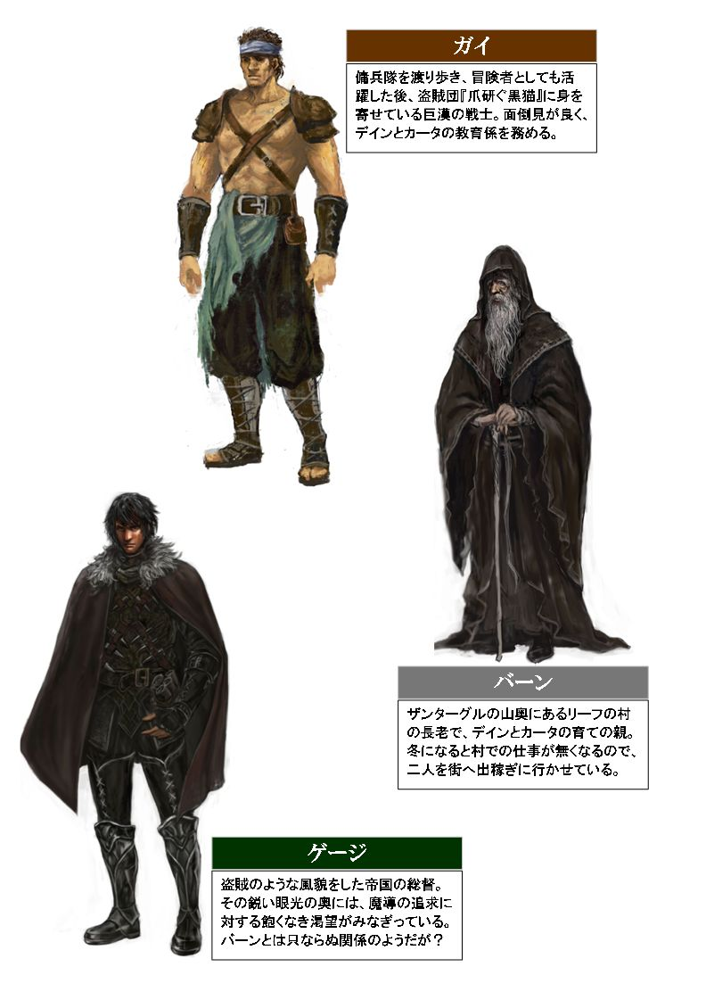
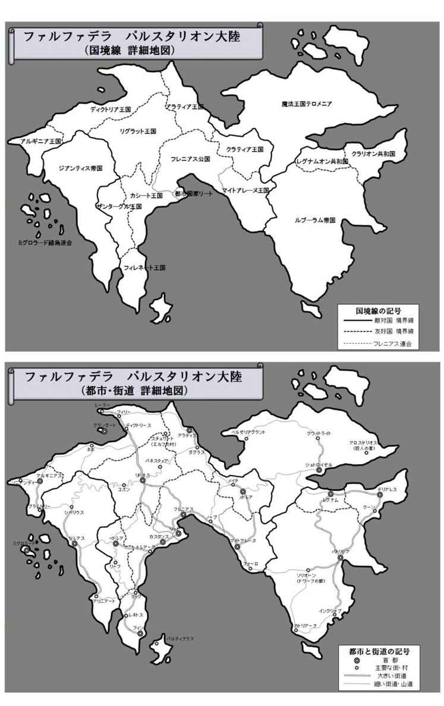
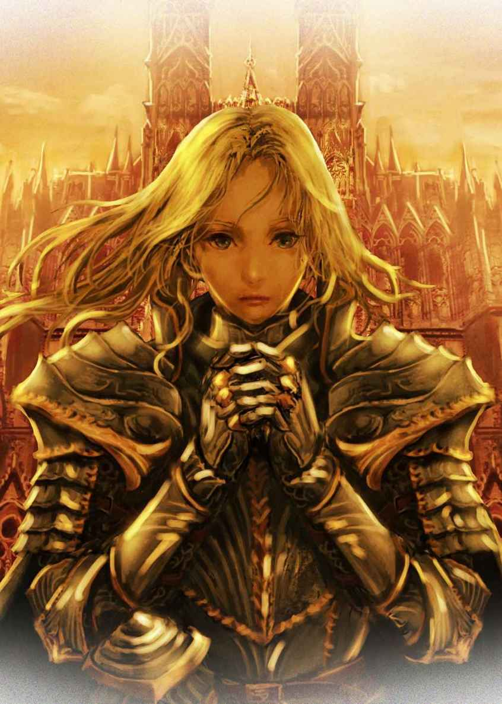

| カドルステイト物語 第一部『盗賊の掟』 | |
| 守下 尚暉 | |
| pubfull (2016) | |
守下尚暉 作
カドルステイト物語
第一部 『盗賊の掟』


夜空一面に彩られた星々の光を、すべて掻き消さんばかりに街の灯りが光々と照らし出していた。吟遊詩人が奏でる楽器の旋律と歌姫の声も、騒々しい人々の喧騒に飲み込まれて、よく耳を凝らさないと楽しむことができない。鼻をくすぐる美味そうな料理の香りも、酒の匂いと煙草の煙が入り混じって、辺り一面に独特の臭気を漂わせていた。
都市国家リートは、ファルファデラで最も大きな都市のひとつで、その大規模な街そのものがひとつの国として自治権を持っている珍しい国だった。その繁華街の一角にある大きな宿の一階の酒場は、宿泊客以外も利用できる開放された空間になっていた。
ずっと田舎で育ってきたデインにとって、人の多い場所は大の苦手だった。できる限り人との接触を避け、部屋の隅で柱に隠れるような目立たない席に腰を下ろし、更に顔をテーブルに伏せて目だけを入り口の方に向けていた。彼が身に付けている衣服は、すべて黒や茶や灰色の無彩色のみで華やかさが一切なく、且つ相当くたびれている。一見すると浮浪者の中年、或いは老人に見間違われるかもしれないが、艶のある肌と黒々とした髪、そして何より鋭い光を放つ双眸が、それを完全に否定していた。デインの席の後ろの壁際には幾つかの手荷物が無造作に置かれ、細長い黒革袋が壁に立て掛けられていた。
そんなとき、酒場の入り口から騒々しく、そして物々しく、何人かの集団が入ってくるのが見えたかと思うと、いきなりその中の一人の男が大声を張り上げた。
「酒場にお集まりの猛者達よ、どうぞご清聴あれ！ 我ら傭兵隊『貫く双槍』では、リドネス解放戦に加勢するため、新たな隊員を募集している！ 腕に覚えのある諸君、我らの旗のもとに来たれ！ 我らの手で、リドネスを圧政から開放し、王の帰還を成し遂げようぞ！」
酒場に居合わせた屈強そうな男たちが何人か立ち上がり、彼らの募集に名乗りをあげている様子だったが、デインは溜め息をつきながらすぐに外方を向いた。今日一日ずっとここに居たデインは、傭兵隊の募集に見飽きていた。聞くところによると、傭兵隊はかなり金になるようだったが、それは戦争に行って生きて帰る事が大前提。もっと真っ当で安全に稼げる仕事を、デインは探していたのだ。
「兄ちゃん、調子はどう？ 浮かない顔を見たところ、芳しくないみたいだね？」
デインは突然真後ろから声を掛けられて一瞬驚いたが、その声が聞き慣れた声だったので安堵の息を吐きながら小声で漏らした。
「脅かすなよ、カータ」
デインはカータの帰りを待って、ずっと酒場の入り口の方を見つめていたはずだったが、カータの姿は全然見当たらなかった。酒場の隅にあるデインのテーブルに来るまでには、雑踏を掻き分けて進まなければならないはずだったが、デインは全然その気配も感じなかったのだ。
「ごめんごめん。別に脅かすつもりは無かったんだけど、兄ちゃん傭兵隊の募集に気を取られてたから、声掛けるタイミングを失ってたんだ」
カータと呼ばれた男は、あまり表情の無いデインとは対照的に、満面の笑みを浮かべながら舌を出してデインに謝った。カータは、少年のように小柄な出で立ちで、その仕草、幼い声、言葉使いに至るまで、あたかも無邪気であどけない子どものようにも見えた。
「こっちは全然ダメだ。酒場は傭兵隊の募集しか来ない」
デインは首を横に振った。それを聞いてカータの顔も曇る。
「そっか。こっちも芳しくなかったよ。おととし雇ってくれた大工の棟梁を覚えてる？ 彼にも会えたんだけど、今年は戦争間近ってことで全然家を建てようって人が居ないみたい。家を建てても、戦争ですぐ壊れちゃったらバカバカしいもんね」
カータは、お手上げのポーズを取りながら、デインのテーブルにぴょんと腰掛けると、子どものように足を左右交互に前後させ始めた。
「参ったな。このまま手ぶらで村に帰る訳にもいかないし」
デインは頭を抱えた。デインとカータの二人は、ザンターグル王国の山間にあるリーフの村から、ここ都市国家リートに出稼ぎに来ていた。農業と狩猟を主な産業とするリーフの村では、作物の収穫が終わり、獲物も冬眠に入る時期には仕事が殆ど無くなってしまう。農業と狩猟による生産物の収益だけで生計を立てるのは難しく、リーフの村は貧し過ぎた。そこで、村の若者であるデインとカータの二人は例年、年が明けると都会に出稼ぎに来て仕事を探しているのだ。しかし、今年は秋口から始まったリドネス開放戦の影響で、真っ当な仕事の募集が殆ど無くなっていた。例年なら、市場の仕出しや商店の物売り、街路樹の剪定、物資の運搬、家屋の建設、道路や水路の補修、貴族の引っ越しなど、都会には沢山の仕事があったものだが...。
逆に、去年まで殆ど見なかった仕事の募集があった。それが、傭兵隊の募集である。傭兵隊は、貴族や大富豪による多額の出資によって設立された私設隊で、昨年までそれほど目立つ募集は見当たらなかった。傭兵隊は所属国に対し、戦時下において重要な戦力の供給に大きく寄与していた。国から正式に認可された傭兵隊は、その規模に応じて国家予算が割り当てられ、それを原資に所属する傭兵への給金が支給される。戦場において目覚ましい活躍をみせた傭兵隊には、国から特別な報奨金が支給され、武勲を上げた者により多く分配される仕組みだ。戦力の数的優位は、そのまま戦争の優劣に直結する要素なので、国も正規軍の錬兵とは別に、傭兵隊を数多く取り込むことに躍起になっていた。
しかし、デインもカータも傭兵隊への入隊には消極的だった。戦争特需と言えばそれまでだが、戦争を商売にしているような傭兵隊を、デインとカータは快く思っていなかったのだ。それに、どんなに金払いが良かろうとも、結局のところ死の危険が付き纏う。他の真っ当な仕事と比べると明らかにリスクが高く、仮に生き延びたとしても、傭兵隊で活躍する以上、一定の武勲を上げなければならない。つまり、人を多く殺さなければならないのだ。デインは決して臆病者では無いが、まだ若い彼は、金の為に命を投げ出す事に、そして金の為に他人を殺さねばならない事に、大きな抵抗を感じていた。
「ただ、真っ当な仕事とは云えないかもしれないけど...ひとつ気になる仕事があったよ」
カータはデインの耳に口を近づけると、囁くように言った。
「ほぉ、どんな仕事？」
デインはカータに話の続きを促す。
「えっとね、泥棒を募集してた」
それを聞いてデインは溜め息をついた。人に誇れないような仕事など真っ当な仕事じゃない。出稼ぎで泥棒稼業をしてきたなどと、口が裂けても村の誰にも言えないし、もしバーン長老にバレたら何と言われるか。
「ダメだダメ。そんなこと出来る訳ない」
「でも、他の仕事なんて本当に傭兵隊くらいしか無いよ？ それにボクが気になったのは、ちょっと普通の泥棒と違うところなんだ。話だけでも聞いてみようよ」
カータにしては珍しく食い下がったので、デインは少し面食らった。カータはデインの弟分で、基本的にいつもデインの決定に従ってくれる。そのデインが一度否定した案を、カータがまだ推すからには、何か余程の訳があるに違いない。
「どこが普通と違ったんだ？」
デインに尋ねられると、カータは腰掛けていたテーブルから飛び降り、ポケットに右手を突っ込んで、もぞもぞと何かを探し始めた。そして目当ての物が見付かると、それを取り出し、デインにだけ見えるように少しだけ広げてみせた。それは、粗末な紙で作られた小さなビラで、カータのポケットに突っ込んでいたからなのか、それとも元々だったのか、端々がビリビリに破れてシワくちゃになっていた。
「盗賊団『爪研ぐ黒猫』？」
「うん。ほら、ここをよく見て。普通の家に忍び込んで盗みを働く泥棒とはちょっと違うみたいなんだ。義賊って言うのかな？ 戦場になる街を専門に狙うんだって。貴族とかお金持ちの人ってさ、自分の身が一番可愛いから、街が戦火に巻き込まれる前にいち早く避難するでしょ？ 彼らが避難してから戦争になるまでの間を狙って、家主をなくした貴族の邸宅や別荘に忍び込んで、金品を盗み出す仕事なんだって」
「なるほど、おもしろそうだな」
デインは頷いた。決して人に誇れるような仕事では無いが、それ以上に貴族や金持ちという輩がデインは気に入らなかったのだ。奴等は大抵、大した力を持っている訳でも、高い能力がある訳でもないのに、先代から受け継いだ金の力に物を言わせて、他人の上に立ってふんぞり返っている。そんな連中など、若いデインから見るとヘドが出るのだ。貧しいリーフの村で長年育ったデインやカータにとって、王族や貴族、或いは権力、または金、この世にある強い力、例えば大人、或いは社会、そういったもの全てが反発の対象だった。『爪研ぐ黒猫』の仕事は、決して人に誇れるような仕事では無いかもしれないが、デインの中にある若者特有の反骨精神が擽られて、彼の自尊心が満たされるような気がした。きっとカータも、そんなデインの性格を分かっていて、このビラを持ってきたに違いない。
「気に入ったみたいだね」
デインがその気になっているのを感じ取って、カータが言った。
「別に、気に入ったとか、そんなんじゃない」
思わず心の中を悟られたようで否定したデインだったが、概ねカータの思惑通りであった。デインは自分自身が人の思惑通りになる事を極度に嫌う。それは例え、兄弟のようにずっと一緒に育ってきたカータに対しても同様だった。
「褒められるような仕事ではないが、戦争で人殺しする必要が無さそうなのが良いな」
それを聞いて、カータは満面の笑みを浮かべる。
「それじゃ、決まりだね。明日さっそく、この募集要項にある集合場所に行ってみようよ」
デインは頷くと、テーブルのコップに入っていた水を一気に飲み干し、壁に立て掛けてあった細長い黒革袋を肩掛けして席を立った。カータもそれに従い荷物を纏めると、その場から撤収し始める。彼らが席を立つと、それを待っていたかのように数人の男達が、すぐにその席を埋めてしまっていた。繁華街の酒場は宴も酣、夜はまだ始まったばかりだ。酒を煽りながら馬鹿笑いするそんな大人たちを、デインは軽蔑するような目で一瞥すると、さっさと階段をのぼって宿のある上階の方へと消えていった。
翌朝------。
昨夜の賑わいが嘘のように静まり返り、朝を告げる小鳥の微かなさえずりが、凛と澄んだ冷たい空気に反響していた。朝陽の輝きは白く眩しく、都市国家リート全体を真っ白に染め上げて燦々と輝いていた。リートの繁華街は、昨夜の雑踏も何処へやら、あたかもゴーストタウンであるかの如く、人とすれ違うことさえ稀だった。
「さすがに朝は冷えるねぇ」
カータは厚手の上着を着込み手袋をしていたが、肩をガタガタと震わせながらデインに同意を求めた。山育ちの二人だったが、海に面したリートは、山とはまた違った独特の寒さがある。デインはそんなカータの声に反応したのか、返事は聞こえなかったが大きな白い息でそれに応えていた。デインも冬着を着込んでいるが、荷物は右肩に掛けた細長い黒革袋のみで、この季節にしては比較的軽装と言えた。彼らにとって、冬のリートは初めてではない。毎年出稼ぎでリートの寒さには慣れているが、早朝の冷気はさすがに厳しく、二人とも手と足の感覚が麻痺していた。
「この路地裏かな？」
カータが悴んだ手でぎこちなくビラを広げ、デインに見せながら確認する。カータは、『爪研ぐ黒猫』という盗賊団の団員が待っているという、リートの街外れにある繁華街の路地裏に入ろうとしていた。華やかな繁華街とはうってかわり、路地裏から奥の雰囲気は如何にもそれらしい佇まいだ。傷んで継ぎ接ぎされた建屋、明らかに怪しげな店の看板、積み上げられたゴミの山とそれを漁る野良猫、朝の強い光もこの路地裏の奥までは届かず、繁華街の白と路地裏の黒のコンストラストがくっきりと浮かび上がっていた。
デインは、その路地裏を睨みつけるように凝視すると、意を決したように歩みを進めようとした。
「兄ちゃん、待って」
そんなデインを見て、後ろからカータが小声で制した。デインは返事こそしなかったが、カータの方に目だけを向ける。
「兄ちゃんは、ちょっとここで待っててよ」
「だが、危険かもしれない」
デインが口を開くと、カータはそんなデインを見て微笑んでみせた。
「うん。だから何かあった時は助けてね、兄ちゃん」
カータはそう言うと、デインが背負っている細長い黒革袋に拳を付けるような仕草をしてから、デインを追い抜いて路地裏に入っていく。
「わかった」
デインは頷くと、カータの背中をその場から見送った。そして路地裏の角にある建物の外階段に凭れ掛かると、黒い革袋の紐をほどき始める。
カータは路地裏に入ると、すぐ右側手前に座り込んでいる見窄らしい男に視線だけを向けて注意深く観察した。その初老の男は薄汚い衣服を着、僅かに縮れ毛の残った禿げ頭が、男をより一層見窄らしい印象に見せた。背丈はカータ並に小柄のようだが、うずくまるような姿勢で座り込んでいるので正確なところは定かでは無い。手に持つ酒瓶を煽っては、呻き声のような溜め息を発しているこの男は、どうやらただの呑んだくれのようだ。
カータはその男に絡まれる前に横を通り過ぎ、更に路地裏の奥へと歩みを進める。しばらく進むと、うず高く積まれたゴミの山や荷箱の奥に、石の階段を下りて半地下になった入り口があるのを見付け、カータはそこで立ち止まった。その入り口の前に、人相の悪そうな三人の男が屯していたのだ。カータは、手に持ったビラと、屯している三人組の男に、視線を往復させながら状況を把握しようと試みた。パッと見た感じ、三人組の男は普通のリート市民には見えない。茶色や薄黒い革製の鎧を着込み、全員が腰に一本ないしニ本の短剣や小剣を挿している。盾を肩に括り付けている者も居た。間違いない、全員が武装している。この三人は盗賊団の人間だ。
カータはそう確信すると、できる限り満面の笑みを浮かべながら、彼らに対して敵意が無いことをアピールして三人組に話し掛けた。
「あ、あのー、ちょっと良いですか？」
「何だい坊っちゃん、道にでも迷ったか？ ここはガキが来るような所じゃねーぞ」
凄みを利かせた盗賊たちの眼光に晒され、カータは内心狼狽していたが、その人懐っこい笑みだけは絶やさず話を続けた。
「い、いえ。ボク、道に迷ったわけじゃないんです」
「それじゃ何だってんだ？ オジサン達はね、坊主みたいなガキから金をたかる趣味はねーんだ。とっととお家に帰りな！」
「まったくだ。こんなとこウロウロしてると、怖い狼さん達に喰われちまうぞ？ 主に三人組の怖---い狼さん達にな！」
そう言うと、三人の盗賊たちは下品に大笑いを始める。カータの足は震えていたが、冬の寒さによるものとは違う震えであることをカータは知覚し始めていた。それでも、ここで引き下がる訳にはいかない。それに、後ろでデインが見守ってくれている。何かあっても、必ずデインが自分を守ってくれるに違いない。
「ボク、実はこのビラを見て来たんだ。おじさん達、盗賊団『爪研ぐ黒猫』の人たちだよね？ この冬、ボクをそこで働かせて下さい！」
そう言ってカータは、ビラを三人の盗賊達に見せて頭を下げる。
「コラ坊主、今なんつった？」
カータの言葉を聞いて、三人組の眼の色が変わった。さっきまでの雰囲気と明らかに違う。カータは、何が起こったのか分からず、頭が混乱し始めていた。
「えっと、だから、盗賊団『爪研ぐ黒猫』で、ボクを雇って欲しいんだ。よろしくお願いします！」
そこまで言うと、カータは後ずさりし始める。カータの直感が身の危険を察知していた。三人の男達はジリジリとカータの方へと躙り寄り、その腰にぶら下げていた短剣に手を伸ばし始めていたのだ。
「テメェ、いい度胸だな」
「冗談にしては面白くねーぞ糞ガキが！」
「どうやら本当に怖い狼に喰われちまいたいようだな？」
状況を把握できないまま、カータが更に後ずさりしようとしたその瞬間、三人の盗賊の一人が短剣を引き抜きながらカータに襲い掛かってきた。
「うわぁあー！」
カータは思わずゴミの山を崩しながら後ろへと仰け反り、その短剣による突きを躱した。見ると、他の二人もそれぞれ武器を構え始めている。一人は小剣と盾、もう一人は両の手に短剣を構え、その武器をカータに向けていた。
「ちょ、ちょっと待ってよ、話を聞いて！」
カータは、相変わらず敵意を否定した笑顔を浮かべていたが、眼は必死だった。寒風に晒されているにも関わらず、変な汗が額から溢れ出てくる。三人の盗賊達が今、自分に対し敵意を露わにして刃を向けているのだ。まさに、絶体絶命の状況だった。
うわぁ！ というカータの悲鳴は、路地裏入り口で待機していたデインの耳にも届いていた。デインはじっと暗い路地裏を凝視して監視していたが、カータが誰かと接触し始めたあたりで雲行きが怪しくなっているのを感じ、準備を始めていた。そして今がその時だと察知したデインは、すぐ側の建物の外階段を全速力で上り始める。デインの手には、うねりのある長い棒のような、または杖のような物が握られていた。よく見ると小さい網の目のような模様が刻まれている。しかし現時点でそれが何であるか正確に識別できる者など、そう沢山は居ないであろう。だが、これこそがデインの唯一にして最大の武器であった。
三人の盗賊達は、カータに向かって容赦なく襲い掛かり、次々に斬り掛かった。しかし、カータの素早い身のこなしによって、それらの攻撃はことごとく避けられた。そして、その事が彼ら盗賊達にとって腹立たしくて仕方なかった。
「ちょこまかとすばしっこいガキが！」
カータは、後方で誰かが上へ上へと階段を上って行く音を耳にし、それがデインであると即座に察知した。
「頼むよ、兄ちゃん」
そうポツリと呟くと、カータはゴミの山の中から空瓶を数本取り出し、盗賊達に向かって次から次に投げ付けた。そして路地裏を塞ぐように、積み上げてあった荷箱を崩して更に後ろへ後ろへと逃げ始める。カータが投げた空瓶の一つは、二刀流の男の頭部に命中し、瓶が割れる派手な音と共に男はその場に倒れ込んだ。しかし、小剣と盾を持った男は空瓶を盾で受けると、砕け散る瓶の破片を掻い潜りながら、もう一人の男が素素早く短剣を突き出してカータに迫って来た。そして盾を持った男は小剣を投げナイフに持ち替えて投擲体勢に入る。
盗賊の電光石火の攻撃は、並の人間なら瞬く間に串刺しにしてしまうところだろう。しかしカータは、小さな身体を屈めて更に姿勢を低くし、迫り来る盗賊の足元にしがみついて、辛くもその攻撃を躱していた。勢いよく突進していた盗賊は、カータの不意な行動によって前のめりに崩れ、二人とも地面に倒れ込んでそのままもみ合いになった。投げナイフを投げようとしていた盗賊は、その様子を見て投擲動作を中止した。二人が縺れた状態でナイフを投げると、仲間に当たってしまうかもしれないからだ。しかし、カータともみ合いになった盗賊は、小柄なカータよりも見るからに体格が大きく逞しい身体つきだった。時間経過と共にカータの状況はどんどん悪くなっていき、とうとうカータは、完全に羽交い締めの状態にさせられていた。
「無駄に手こずらせやがって。おい今だ、そのナイフでやっちまえ！」
カータを羽交い締めにした盗賊は、そのままの体勢で仰向けになり、カータを上に向けた。そして仲間の盗賊に、ナイフを投げ付けるよう指示する。
------だが、その時だった。
ズシャ！ という、鈍い、そして鋭い音が耳を突いた。カータを羽交い締めにしていた盗賊は、目の前で起こったその状況を、正確に把握するのに少し時間が掛かった。
投げナイフの投擲体勢に入っていた仲間の盗賊は、どこから飛んで来たとも知れない長い棒状の物に、脳天を貫かれていたのだ。投げナイフが投げられることもなく、そして声を発する暇も無く、頭を貫かれた盗賊は一瞬の内に絶命していた。
羽交い締めの力が弱まったその隙を、カータは見逃さなかった。身を捩って羽交い締めから素早く抜け出すと、カータはその場から転がるように前転し、盗賊に背を向けて全速力で大通りへと逃げ出した。それを見た盗賊は、再びカータを捕まえようと追い掛けたが、次の瞬間、ズシャ！ という鈍く鋭い音が、再びこの路地裏に響き渡った。
「ぐあー！」
盗賊は絶叫した。右脚の太腿を棒状の長い物が貫いたかと思うと、盗賊の右脚は完全に断裂していた。片脚を失った盗賊は、その場で仰向けに倒れ込むと、あまりの激痛に叫び声を上げながらのたうち回った。そして彼は、更なる絶望をその眼にする事になる。
仰向けに空を見上げる体勢になった盗賊は、建物の最上階から自分に向けて次の矢を射出しようと弓を引くデインの姿を、はっきりと視認したのだ。弓と言っても、あれは普通の弓では無い。弓下部のロアーリムが地面に突き立てられ、デインの身の丈よりも大きな成りを撓らせながら、自分に向かって真っ直ぐ直立しているのだ。弦に掛けられた矢も、矢にしては余りにも巨大な物で、あれでは矢と言うよりも、むしろ槍に近い。その絶望を見た盗賊は、命乞いでもしようとしたのか、何かを喋ろうとしている様子だったが、盗賊が声を発するよりも先に、また例の鈍く鋭い音がした。そして次の瞬間には、盗賊は完全に絶命していた。
「ふぅ...」
カータは胸を撫で下ろした。最後はやっぱりデインが助けてくれたが、今回は本当に危なかった。まだ背中に冷や汗が伝っているのを感じながら、カータは上に見えるデインに向かって手を振って、自分の無事を知らせた。そして路地裏から大通りに出ようとした時。
「おい、待ちな。なかなか面白かったぜ」
突然うしろから、しゃがれた声の男に呼び止められ、カータは素早く身構えた。
「いいだろう。テメェ等は盗賊団『爪研ぐ黒猫』の入団試験に合格だ」
声を掛けてきたのは、路地裏に入ってすぐの場所で、うずくまるように座り込んでいた呑んだくれの禿げ男だった。
デインとカータ、そして禿げ男の三人は、リートの商店街に面した大通りを、北へと進んでいた。真昼の陽は高く上がり、冬の冷たい潮風を心なしか和らげてくれている。この時間帯にもなると、大通りには人だかりの山ができ、大いに賑わいを見せ始めていた。
路地裏で、三人の盗賊達との経緯を一部始終見ていた禿げ頭の男は、自らをザックと名乗った。彼は路地裏の呑んだくれなどではなく、正真正銘『爪研ぐ黒猫』の盗賊団の頭領だという。ザックが言うには『爪研ぐ黒猫』と敵対関係にある盗賊団『暗がりの月』に所属する盗賊が、夜の仕事終わりにいつも屯するこの路地裏に、わざと入団希望者を誘い込んだという。あえて敵対勢力の盗賊達と対峙させてその動向を見守り、『爪研ぐ黒猫』に入団する見込みがあるかどうかを見極めていたのだと。
そんな話を聞かされたデインとカータは、正直、その話を信じて良いものかどうか判断がつかなかった。それに、もしザックの話が本当だったとしても、その策略によって、デイン達は命の危険に晒されることになったのは確かなのだ。そして、相手が仮に敵対勢力の盗賊団だったと言っても、デインは人殺しに加担せざるを得なかったことにも納得がいかなかった。そのことをザックに咎めると、ザックは笑いながら言った。
「それで良い。テメェも盗賊団で働くからには、誰の言うことも心の底から信用しちゃならねぇ。それが盗賊の掟ってもんだ。それに、盗賊を一人や二人殺したくらいで気に病むことはねぇ。一般市民を殺したって言うんなら問題だが、奴らは所詮盗賊、つまり反社会勢力に加担する犯罪者だ。もし国から殺人容疑に問われる事があったとしても、奴らから仕掛けられたと言えば、善良な市民の方が信用される。お前らは善良な市民なんだろ？ 正当防衛成立ってわけだ」
ザックの言うことも分かる気がしたが、詭弁に聞こえなくもない。どうにも納得いかないデインは、更に口を開いた。
「オレはもともと人殺しが嫌で、傭兵隊ではなく盗賊団に入ろうと思ったんだ。それなのに、結局人殺しをさせられる羽目になった。相手が犯罪者かどうかとか関係ないだろ」
それを聞いてザックは肩をすくめる。
「何言ってんだテメェ。人殺しをさせられる羽目になった？ おかしいんじゃないのか？」
そんなザックを見てデインは怒りを露わにしたが、まぁまぁ、とカータが間に入ってデインを宥めようとする。
「俺は別にテメェに人殺しをしろなんて命令しちゃいねえ。それに、あの状況を切り抜ける方法が殺ししか無かったと思っているのだとしたら、テメェは相当に頭が固いな」
「なんだと...？」
デインはザックに食って掛かったが、ザックはそんなデインに構わず話を続ける。
「テメェはテメェの一番得意なやり方で、あの状況を切り抜けただけだろう。人によっては、巧妙な話術や交渉術、性別によっては女の武器ってやつでああいう場を凌ぐ者も居る。金を持ってる奴なら賄賂を渡してその場を収めたりな。要は、人より秀でた何かしらの力...それが頭脳かもしれないし、金の力かもしれないし、腕力かもしれないが、何か優れた物を持っているかどうかってことだろ」
ザックの言う通り、デインはあの場を話術や交渉で切り抜けようなどと一切思い浮かばなかった。結果、デインは人殺しに加担する事になったが、そのことでデインとカータは、弓の腕と素早い身のこなしを買われ、盗賊団の入団試験？ に合格するという皮肉な結果にもなったのだ。それにしても...。
「もしオレ達が、あの三人の盗賊にやられそうになったら、どうするつもりだったんだ？ 助けるつもりだったのか？」
デインは、頭に浮かんだ率直な疑問をザックにぶつけた。ザックの言う「力」の無い者が入団試験を受けた場合、一体どうなるのだろうか？ それがふと気になったのだ。デインとカータは辛くも一命を取り留めたものの、もし入団試験で不合格になった場合は、どうなっていたのだろうか。そのまま死ぬかも知れなかったのだろうか、と。
「テメェ、変なこと気にする奴だな。分かった分かった、そん時は正義の味方の俺様が参上して、悪い盗賊共を皆とっちめちまうつもりだったから、安心しろ！...どうだ？ こう言えば、テメェは納得するんだろ？」
ザックはそう言うと忍び笑いを漏らす。ザックにからかわれたデインは、ますます機嫌が悪くなっていた。そんなデインの後ろから、まぁまぁ、とカータは言いながらデインを宥め続けていた。とりあえず入団試験には合格したし、盗賊団に入団すれば、かなりの収入が見込めるのは間違いないのだ。
「うわっ」
カータが不意にその場で大袈裟に転んだので、デインはうろたえた。
「大丈夫か、カータ？」
転んだカータを起こそうとデインがしゃがんだ時、カータはそっとデインの耳に口を近付け小声で耳打ちする。
「大丈夫だよ兄ちゃん。もし条件を聞いてみてあんまり気に入らないようだったなら、その時はさっさと逃げ出しちゃえばいいんだよ」
それに対してデインは返事もせず、頷きもしなかったが、視線を一瞬だけカータに合わせて合図を送り返した。カータの言う通り、とりあえず傭兵隊とは違う仕事にあり着けたのだ。それに泥棒稼業と言っても、一冬で足を洗うつもりだ。そんなに先のことを気に病む必要も無いのかもしれない。そんなことを考えていると、ザックがふと歩みを止めてデイン達の方に向き直った。
「まず当たり前のことだが、盗賊の隠れ家のことは、当然ながら口外無用だ。分かっちゃいると思うが、テメェ等の親、兄弟を含む、如何なる親しい人間にも話しちゃならねぇ。約束できるな？」
さっきまで人を馬鹿にするようにふざけた態度をしていたザックが、急に真顔になってデインとカータに念を押す。
「あぁ」
「うん、わかったよ」
デインとカータが約束すると、デイン達はザックに案内されるままに、とある大きな食料品店の中へと入っていった。それは一見、ごく普通の食料品店に見えるが、その建屋の奥から倉庫へと進むと、野菜や果物の詰まったコンテナとコンテナの間が、あたかも秘密の細い通路のように入り組んでいた。そのコンテナを、まるでパズルのようにズラしながら奥へと進んでいくと、最後には床に落とし戸のある小さなスペースに辿り着く。その落とし戸を開くと、地下へと伸びる通路が続いていた。
「さぁ、ここだ。別に取って喰ったりはしねぇよ。あ、それから入ったらその隠し戸はちゃんと締めておけよ」
ザックはそう言うと、先々に地下へと降りて行く。デインとカータは一瞬顔を見合わせたが、意を決するようにお互い頷き合って、遅れまいとザックに続いていった。地下に降りてすぐの場所には、真っ黒い革鎧に身を包んだ見張りらしき盗賊が二人しゃがみ込み、値踏んでいるかのような視線をデインとカータに浴びせかけた。
「こりゃまた、随分と若い新入りを連れて来たな」
見張りの一人がザックをからかってみせた。
「うっせぇ、黙ってろ。俺の目には狂いはねぇ、コイツらは使える」
やや怒気を孕んだザックの声が、見張りの二人の盗賊に向けられた。そのことが逆に、デインとカータにとっては意外だった。一応、自分たちの力を認めてくれているらしい。地下は思った以上に広かった。盗賊の隠れ家が、こんなにも立派なものだとデインは思いもしなかった。デイン達が入ってきた通路を中心に、左右に一定間隔で扉が設けられ、幾つもの部屋に繋がっているようだ。
「ここは元々、食品市場の倉庫だったんだ。こっちがワインセラーで、そっちが貯蔵庫。地下は年中涼しいから、むかし市場で売り出す食品の貯蔵に使われていたんだ。今はもっと大きな倉庫が港に出来たから、ここはもう倉庫としては使われなくなって、俺等の隠れ家に模様替えしたって訳だ」
ザックは得意気にデイン達に説明すると、幾つもある通路沿いの扉の一つに入り、小さな部屋にデイン達を案内した。その部屋は、地下にあるとは思えないほど立派な造りの部屋で、ソファー、テーブル、絵画、調度品など、応接間として必要な物が一通り揃っているようだ。
「まぁ、座れや」
ザックに促され、デインとカータはソファーに腰掛ける。
「まずは、契約期間の話だが、テメェ等この冬だけって言ってたっけ？ 二人ともか？」
ザックの問いに、カータが答える。
「うん。ボク達は同郷なんだ。ザンターグル王国のリーフって村だけど、ザックさん知ってる？」
「知っちゃいるが行った事は無いな。相当な山奥というか、田舎じゃないか？」
ザックが言うと、デインは頷く。
「あぁ、狩猟と野良仕事で生活している貧しい村だからな」
デインの言葉にカータが話をつなげる。
「うん。毎年、ボク達はこの時期になるとリートに出稼ぎに来てるんだ。そして一冬だけ街で稼いだら、またリーフの村に帰るんだよ。春の作付に遅れると、ボク達、こわい爺ちゃんに怒られちゃうからね」
ザックは葉巻に火を点け、煙を撒き散らしながらデインとカータの話を聞いていた。なるほど、常人離れしたデインの弓術は、実際の狩猟で鍛えられたものだとすれば、ある程度納得がいく。それにしても、狩猟を営む者が皆、あのような大弓を扱うとも考え難い。
「デインと言ったか、テメェ、その弓は一体どうしたんだ？」
その問いに、デインは顔を曇らせる。愛想の良いカータでさえ、ザックのその問いに答えようとはしなかった。そんな様子を見て取ったザックは、もう一度聞く。
「大きな獲物を狙う狩猟で使うにしても、そんな大弓、俺は初めて目にしたぜ。最初見たときはまるで攻城兵器みたいなデカさに、さすがの俺も驚いたものだ。その弓の出処を聞いてるんだが、話せないのか？」
デインは頷くと、小さく口を開き、ボソりと言った。
「弓のことを話さないと、盗賊団に入れて貰えないのか？」
ザックはそれを聞いて口をつぐんだ。
「いや、決してそんなことは無い。悪かったな、今のは気にしないでくれ。そりゃそうだ、盗賊団の連中は皆、訳有りの奴ばかりよ。身の上を全て話さなきゃ入れないってことは無ぇぜ」
ザックは戯けて見せると、この話を打ち切り、元の話題に切り替えた。
「冬だけって事だが、ウチはあまり短期の仕事は受け付けてねぇんだ。どんなに短くとも二カ月以上の契約を最短期間とし、それまでウチに所属すること。他の仕事はもちろん、他の盗賊団に鞍替えなど以っての外だからな。これは絶対だ。どうだ？ 二カ月、テメェ等守れるか？」
それを聞いてデインとカータは頭の中で月数を数え始める。今から二ヶ月働いて、ザンターグルの田舎にひと月かけて帰ったとしても、春の作付には何とか間に合いそうだ。
「二カ月は分かった。もちろん大丈夫だが、もし破った場合は？」
デインの質問を聞いて、ザックは忍び笑いを漏らす。
「大丈夫なのに、もし破った場合は？ とは、おかしなことを聞く奴だな。カタギの仕事なら契約不履行で違約金が発生するところだろうが、盗賊団は闇の世界だ。そん時はテメェ等、背後や暗闇や食事に気を付けながら生きていくことになるだろう。何しろ盗賊の刺客が、どこまでもテメェ等を追い詰めていく事になるんだからな。生涯二度と、ぐっすり眠れる夜など無いと思った方がいい。誰にでも背中はあるし、誰にでも夜は訪れるんだぜ」
ザックが忍び笑いを漏らしながら恐ろしいことを口走ったので、それが冗談か本気か理解するのに困惑した二人だったが、おそらくザックは本気なのだろう。盗賊団の世界とは、きっとそういうものなのだということは、世間知らずの若い二人にも何となく分かるような気がした。
「うん、分かったよ」
カータが言うと、デインも静かに頷いてみせた。
「仕事の方は、いつ、どこで取り掛かるんだ？」
デインが聞いた。
「ビラに書いてあった通りだ。ウチは戦場になる街を専門に狙っている義賊。取り掛かる時期は、諜報班から次の戦場の確かな情報を得てからになるが、何しろテメェ等は右も左も分からない新入りだからな。まずは、ここで基礎的な盗賊の訓練を受けてからになる」
「訓練とは？」
デインが聞くと、ザックは話を続ける。
「鍵開け、罠の発見と解除、隠匿行動、鑑定など、盗賊団には独自の秘伝技術が色々あるのよ。短期間だし、それらを全てマスターしろとは言わないが、基礎的な技術を幾つか身に付けて貰う。そのための教育ツールが、この隠れ家には一通り揃ってるしな。なぁに、あくまで訓練だ、失敗しても命を落としたりはしねぇ。ただし、実際の現場では盗賊技能の失敗は、死に直結するけどな」
そこまで言うと、ザックは再び喉の奥で忍び笑いをしてデインとカータを見据えた。
「いいか、よく覚えておけよ。テメェ等が盗賊として使えるようになるまで、勝手にこの隠れ家から外に出ちゃならねぇ、一歩たりともだ。寝泊まりは班ごとの小部屋になるが、居心地はそんなに悪くはねぇぜ。食事も隠れ家にある食堂の賄いを利用しな。そもそも、この隠れ家からの出入りは全て、俺の監視下のもとで行う。シャバへ自由に遊びに行けると思うなよ。俺の許可もなく隠れ家から勝手に出た場合は、その時点で脱走による契約不履行とみなす。そうするとテメェ等は、盗賊の刺客に怯えながら一生を過ごさなきゃならなくなるぜ。そのことをよく肝に銘じて、くれぐれも充分に気を付けることだな」
真っ当な仕事と比べると、やり方が随分と乱暴なようだが、基本的な部分はあまり変わらないようにも思えた。どんな仕事でも、契約期間内に途中で投げ出した場合、たいてい重いペナルティが課せられるものだ。もちろん、ペナルティがそのまま刺客による死の危険などという仕事はこれまで聞いたこと無いが、盗賊団なら充分有り得る話だ。それに、傭兵隊にしても恐らく似たようなものだろう。民兵とは言え一度軍属になった者が任務を放棄して逃げ出せば、脱走兵として法的に罰せられる。
「分かった。まずは盗賊としての訓練を受けてから、実戦に入るってことだな」
デインはザックに頷いてみせる。
「うん。ボクも頑張るよ」
カータもそれに続いた。
「物分りが良くて助かるぜ。テメェ等は俺の班に配属だ。ウチの班の部屋に案内してやるからついてこい。訓練の方も今日から早速始めるぞ、しっかり働いてくれよ」
ザックはそう言うと、デインとカータの肩をバンバンと痛いくらいに叩いた。デインは正直、この禿げ男が苦手だったが、今は彼の指示に従うしかない。今年の出稼ぎは、例年以上に気苦労が絶えなそうだ。
白い煙が、盗賊の隠れ家の小さな密室一面に立ち込め、部屋に居合わせた者は思わず咳き込まずにいられなかった。
「バカ野郎！ お前は今、死んだんだぞ！」
厳しく叱咤する図体のでかい盗賊教官。
「あれ？ おかしいなぁ。手順通りだったつもりなんだけど...」
その激しい叱責を受け、カータは頭を掻きながら舌を出した。
「いいかチビ坊主！ 罠の解除に失敗するってことは、そのまま罠が発動するってことだ。訓練だからって甘く見てると、現場で命を落とすことになるぞ！ 失敗したら死ぬつもりでやれ！」
まるで堪えてないその子どものような反応に、盗賊教官は呆れ顔だ。そんな様子を尻目に、デインは額に汗を浮かび上がらせながら、訓練用の模擬扉の錠前を使って鍵開けの技術を試しているところだったが、これがなかなかに難しくて上手くいかない。
そんなデインの様子を苛々しながら見ていたザックが、ついに我慢しきれず口を出した。
「こんなの、初歩的な機構の鍵だぞ。いつまで時間掛けてんだ？ これじゃ先が思いやられるぜテメェ」
おかしい。カータはさっき、同じ鍵をいとも簡単そうに開錠していたはず。それなのに、自分はいつまで経っても開けられずにいることに、デイン自身も苛立ちを感じ始めていた。
「焦るな焦るな。手は速く動かしても心は穏やかに保つんだ。癇癪起こしてたら開く鍵も開かんぞ、デカ坊主」
小柄なザックとは対照的に、盗賊教官は筋肉隆々とした巨躯の男で、冬だというのに裸の上半身にバックルベルトを襷掛けしただけの軽装だった。その浅黒く焼けた肉体をさらけ出した暑苦しい盗賊教官は、名をガイといった。ザックの相棒なのだという。その逞しい肉体は、盗賊というよりも、むしろ屈強な戦士を連想させた。
「実際の盗みに使える時間は、坊主らが思っているより遥かに短いんだぞ。戦火に巻き込まれる可能性の高い街には、あらかじめ潜り込んで金目の物が多そうな豪邸を事前にチェックすることになるが、その内部構造までは偵察では分からない。鍵の掛かった部屋には大抵良い物が保管されている。鍵を素早く破る技術は、盗賊にとって何より重要で基礎になるんだぞ」
泥棒学校の先生と言えば聞こえが悪いが、盗賊団の一員として最も必要とされている技術の教育に余年が無い巨漢の盗賊教官ガイは、その見た目に反して案外几帳面で口うるさい性格のようだ。慣れない手つきで鍵開けや罠の解除に取り組むデインとカータを見ながら、絶え間なく教鞭を垂れ流し続けていた。
「価値ある物とくだらない物を瞬時に見分けられる鑑定眼も重要になるぜ。その家の中で、何が一番価値ある物かを即座に判断できねぇと、無駄に時間ばかり食うことになるからな」
ザックがガイの教えに補足を付け加える。
「まだ、新入りにそこまで覚えさせるのは難しいだろ。おまえは黒猫団で一番の目利きだし、他人に自分と同じ水準を要求するのは酷ってもんだと思うぞ」
ガイはザックに意見する。そんなやり取りを見ていると、ザックとガイの間に深い信頼関係があるのが、今日初めて二人を見るデインから見ても、瞬時に理解できる。ちょうど、自分とカータのようだとデインは思った。
「ところで、盗んだ戦利品は、その後どうなるんだ？」
デインは話を聞きながら、ふと浮かんだ疑問を口にした。
「そりゃ、美術品や工芸品そのものに俺達ゃ興味ねぇからな。金銭に換金しなきゃ意味がねぇ。鑑定して値札を付けたら、とっとと売り捌くのさ」
まるでくだらない事を聞かれたとでも言うように、ザックが答える。
「誰に...いや、どこに売り捌くんだ？」
デインが更に聞いた。
「いい質問だな。ウチはリートが拠点の盗賊団だから、戦争では基本的に連合に肩入れするが、正直どっちが勝ってもウチは儲かるんだ。勝った方は財布の紐が緩くなる。そいつらに売り捌けばあっという間に換金されるって寸法よ。ただ、戦利品の中でも特に価値の高い美術品や工芸品は、ウチに出資してくれてる得意先に高値で売り渡すことになっている。言わば、その出資者はウチのスポンサーってとこだな。ウチは珍しい品物を優先的にスポンサーへ横流しする見返りに、スポンサーはウチに運用資金を出資してくれるって訳だ。もちろん、珍しい品物にはそれ相応の報奨金が出ることになっている」
ザックの答えを聞いて、デインは少し微妙な面持ちになった。
「義賊って聞いていたから、てっきり盗んだ品物を貧しい人々にバラ撒いて還元させるのかと...」
そうポツリと呟いたデインを見て、ガイはガハハと大笑いを始めた。
「何言ってんだデカ坊主、青臭いこと言ってんじゃ無いぞ。こっちだって命張って商売してるんだ。何の得にもならない事やる訳がなかろう。それにだ、傭兵隊の中にも坊主らのように田舎から一攫千金を夢見て出てきた輩が五万と居る。そいつらにウチの戦利品を売り捌けば、それはデカ坊主の言う還元と同じことなんじゃないか？」
ガイの言葉を聞いてもデインは浮かない表情をしていたので、ザックはデインに顔を近付けると、いつもの忍び笑いを漏らしながら、子どもに言い聞かせるように話し始める。
「おいテメェ、それならこう考えるんだ。戦火に巻き込まれて無為に失われるかもしれない貴重な人類の宝を、戦争の火の手から救い出す、それが俺達の使命だ！ どうだ？ 正義のヒーローみたいでやる気が湧いてきただろう？ 戦火に燃え上がる街、その一角の大きな屋敷に至高の宝が眠ってて、今まさにお前の救いの手を待ってるってわけだ！ 助けてやらなきゃならねぇよな！」
そこまで言うと、ザックは下品に喉の奥で忍び笑いをし、ガイはそれを聞いてガハハと大笑いした。デインは、自分がまるで子ども扱いされているようで気分を害していたが、今はこの禿げ男の言う通りにするしかない。どんなに義賊と銘打っても、盗賊団『爪研ぐ黒猫』は、明らかにリドネス開放戦を飯の種にしていた。それをデインは実感せずにはいられなかったが、しかし、それは傭兵隊に加入しても同じことだろう。
「まぁデイン、テメェは盗賊技能が下手クソでも、役に立つ場面がきっと来ると思うぜ。実際、盗賊技能よりも肉弾戦の方が得意っていう、盗賊らしからぬ武闘派もウチには結構居るんだ。そこにいる巨漢の盗賊教官のようにな」
悪戯っぽい笑みを浮かべて、ザックはチラッと視線をガイに向けた。
「うるさいハゲ、ワシの生徒に余計な知識を吹き込むんじゃない！」
それを聞いて、間髪いれずガイが抗議する。
「あ、あいた」
その時、ポツリとデインが呟いた。見ると、デインが開錠に苦戦していた訓練用の模擬扉が開いている。ザックと目が合ったデインは、やや得意気になっているようにも見えた。
「何したり顔してんだ馬鹿野郎！ こんな初歩的な鍵に、どんだけ時間掛けてんだよテメェ！」
そんなデインに対して怒鳴るザックと、それを見て再びガハハと大笑いをするガイ。そんな和やかな光景も、一瞬にして真っ白い煙が一面を包み込み、目の前が何も見えなくなってしまった。
「あ...やっちゃった」
白く立ち籠めた煙の中から、カータの悪びれない声だけが聞こえてきた。また罠の解除訓練に失敗してしまったのだ。
「バカ野郎！ お前は今、死んだんだぞ！」
ガイの厳しい叱咤が部屋に響き渡ったが、なによりも、この煙たくて息苦しい部屋から、今すぐ逃げ出したいという衝動にデインは駆られていた。盗賊修行の道のりは思った以上に険しいようだ。
連日続く盗賊修行の訓練で、デインとカータの疲労はピークに達していた。何より、薄暗い地下の隠れ家で一日中過ごさなければならないのが身体に堪える。いま昼なのか夜なのか、時間の感覚が完全に麻痺してしまうのだ。しかし、だからと言って勝手に隠れ家の外に出る訳にはいかない。
盗賊団『爪研ぐ黒猫』の新入りであるデインとカータは、常にザックとガイの監視下に置かれ、厳しい訓練の日々を過ごして一週間余りが経過していた。訓練の成果もあってか、熟練度は低いものの簡単な鍵ならデインも開錠できるようになっていた。カータに至っては、難度の高い開錠も器用にこなし、今では罠の発見や解除に加えて、鑑定の訓練にも取り組んでいる。盗賊技能の面で、デインはカータにかなり水を開けられていた。しかし、デインの方がカータより得意とする訓練もあった。それは戦闘訓練だ。特に、盗賊の間でよく用いられる短弓を使った遠隔射的の訓練において、デインは高い能力を発揮した。デインは、自分が普段使い慣れている自前の大弓でなくとも、弓の扱いに長けているようだ。
「よし坊主ども、今日はそこまでにしろ！」
ガイの掛け声で、デインとカータは今日の戦闘訓練を終えた。二人とも全身の汗を手ぬぐいで拭き取りながら、切れ切れになった息を整えている。
「デカ坊主は、ワシに似たタイプの盗賊になるかもしれないぞ。盗賊技能よりも戦闘向きってやつだ。だが、弓の腕は結構だが近接戦闘はまだまだ未熟だな。デカ坊主には短剣より小剣の方が向いているのかもしれない、次は武器を変えてみろ。チビ坊主の方は、逃げてばかりじゃダメだぞ。軽い身のこなしはチビ坊主の長所だが、ちゃんと反撃のチャンスを見逃さないようにするんだ。いつまでも相手に主導権を握られっ放しでは、いつか追い詰められてやられちまうぞ」
今日も、盗賊教官ガイの口うるさい説教が長引きそうだ。デインはガイの話に被せるように質問を重ねた。
「いつもより、少し上がりが早いんじゃないか？」
それを聞いて、ガイは豪快に笑う。
「あぁ、喜べ。ハゲが坊主らに、外のうまい飯をおごってやるって言うから、いつもより早く切り上げたんだぞ。坊主ら、まだ入団してから一度も外に出てないんだろ？」
それを聞いて、デインとカータの眼が輝く。
「兄ちゃんやった！ 久し振りに外の空気を吸えるよ！」
カータが喜びのあまりデインに飛び付くと、あまり人前で喜びの表情を見せないデインは、無言で頷いてカータに応えて見せる。だが、その口元は明らかに緩んでいた。
「さぁ、坊主ども。さっさと使った武器を片付けて準備しな。準備できたら入り口の落とし戸に集合だ。グズグズするなよ」
そう言い残すと、ガイは訓練所から去っていった。二人の新入りは、言われたままに手際良く備品類を片付けると、慌てて外着に着替え始める。
「兄ちゃん、短剣とか持って行った方がいいのかな？」
カータが、さっきまで訓練で使っていた短剣を片付けながらデインに聞いた。新入りには個人用の武器として、短剣と小剣が一本ずつ支給されていたのだ。
「馬鹿だな。カータはフォークの代わりに短剣つかって飯食うつもりか？ 飯を食うだけなんだし要らないだろ。オレは弓を持って行くつもりない、かさばって邪魔なだけだからな」
デインはカータに言うと、さっさと着替えて隠し扉の落とし戸がある出入口の方へと向かい始める。
「あ、ちょっと待ってよ兄ちゃん！」
カータが慌ててデインの後を追う。盗賊団隠れ家の出入口を見ると、いつもの見張りの盗賊二人組とは別に、小柄な禿げ盗賊と巨漢の盗賊が既に待機していた。
「お、来たか。思ったより早かったな。さぁ、行くぞ」
ザックは、デインとカータを出迎えると、さっさと外へと出て行った。デインとカータも遅れまいと、急いで落とし戸を閉める。そして二人は、久々の地上の感触を噛み締める暇も無く、コンテナの隙間の通路の開け締めを繰り返しながら、先々進むザックとガイに必死でついていった。
久し振りに見る昼下がりのリートは、いつもと変わらぬ賑わいを見せていた。繁華街の大通りは、既に人でいっぱいに満たされている。ザックとガイとデインとカータの四人は、大通りの隅を北に向かって歩いていたが、その通りの中間地点辺りまで来ると、突然、先頭を歩いていたザックが立ち止まった。どうしたんだろう？ と、デインとカータはザックの顔を覗き見る。
「よし、このへんで良いだろう」
ザックは独り言のように言うと、デインとカータの方を向いた。
「テメェ等、今日の飯の種を集めるぞ。集金の時間だ」
突然のザックの宣言に、デインとカータは意味が分からず顔を見合わせる。
「坊主ども、まずはワシらが集金の手本を見せるから、そこを動かずによく見ておくんだぞ」
そんな二人の様子を見てガイが笑うと、ザックとガイは瞬く間に雑踏の中へと消えていった。デインとカータは、必死に二人の動向を眼で追おうとするが、人混みの多さと二人の軽やかな身のこなしから、見失わないようにするので精一杯だ。
「あ...」
その時、カータが声を上げた。大通り脇に並んでいる露店のひとつで、つり銭を渡そうとする商人と、それを受け取ろうとする客との間を、ザックがさりげなく通り抜けたかと思うと、まんまとそのつり銭をくすねていたのだ。
「おい、つり銭まだ貰ってないぞ？」
「お客さん、困ります。さっき渡したじゃないですか」
しばらくして、商人と客の間でちょっとした小競り合いが始まったのは言うまでもない。一方、大通りの片隅に目をやると、小奇麗な服を着た男の子に対して、ガイが何やら説教をしているような様子が窺い見えた。
「あれは何やっているんだ？」
デインとカータは不思議に思い、ガイと子どもの会話に耳を傾け、二人の口の動きを注視する。するとどうだろう。街の喧騒に包まれているにも関わらず、ガイと子どもの会話だけを抽出して聞くことが出来るような気がした。これが、盗賊技能の訓練の賜物なのだろうか。
「この服はワシの一張羅なんだぞ。坊主、どうしてくれるんだ！ 坊主の親はどこだ？ 洗濯代を弁償させんとワシは気がすまんぞ！」
そこに、見るからに金持ち風の中年女性が現れ、ガイに向かって頭を下げ始めた。
「わたくしの子が、大変ご迷惑をお掛けして申し訳御座いません。どうぞ、こちらを汚してしまった貴殿の洗濯代としてお使い下さい」
デインとカータは、そんな様子を唖然としながら眺めていた。あれをこれから自分達もやらなきゃいけないのかと思うと、デインはとても気が重くなる。ふと、カータの表情を見てみたが、あっけらかんとした表情で全く気にしていない様子だったので、デインは深い溜め息をついた。
「どうだ？ 見ていたか？」
ザックとガイがデイン達の元へと戻ってくる。
「あぁ、見ていたが...」
「うん！ おじさん達すごいや、さすが本物の盗賊だね！」
デインが気の無い返事をしたところに、カータが言葉を被せてきたので、デインは苦笑いするしかなくなっていた。
「全く同じ真似をしろとは言わねぇ。テメェ等なりのやり方で、同じことをやってみろ」
「うん！ わかった！」
ザックが言うと、デインの返事はよく聞こえなかったような気がしたが、カータは元気よく返事をした。
「坊主ども、やることは簡単そうに見えるかもしれないが、今は戦時中だからな。警備の衛兵以外に、正規軍の騎士隊やリート教会に出入りする神官も多い。奴ら公僕どもに見付からないように、くれぐれも気を付けるんだぞ」
ガイが念を押すと、カータは素早く人混みの中に溶け込んで消えていった。
「ほら、テメェもだよ、早く行け」
ドンっとザックに背中を押され、仕方なくデインも雑踏の中へと入っていく。デインが溜め息を吐きながら人混みの中を掻き分けて進もうとすると、さっき人波にのまれたばかりのカータが、もうザック達の方へと戻ろうとしているのが見えたので、デインも思わずカータにつられてザックの元へと戻ってしまった。デインは、カータが「やっぱり出来ません」とでも言うのだろうと期待したのだ。しかし間もなく、そんなデインの思惑は見当違いだったと思い知らされることになる。
「ほら見て、戦利品だよ！」
なんとカータは、豪華な装飾の施された蟇口の財布をザックとガイに見せたのだ。カータは十秒も掛からずに、行き交う人混みの中から既に財布を抜き取って戻ってきていたのだ。これにはデインも驚いたが、それ以上にザックとガイの二人が驚いていた。
「おい、デクの棒、今の、見えたか？」
「...いや。見えなかったぞ」
「だからテメェはデクの棒なんだ。にしても、コイツァ凄ぇな」
「うるさいハゲ。ハゲはもう歳なんだから、眼が霞んで見えないだけなんじゃないか？」
二人の先輩盗賊は、口をパクパクさせながら、お互いを貶し合っていた。それくらい、ベテラン盗賊から見てもカータのスリは鮮やかだったのだろう。しかしザックは、カータの戦利品を受け取って中身を開けると、なぜか表情をこわばらせたように見えた。そしてそれをザックから手渡されたガイも、財布の中身を見て同じような反応を示す。
「あれ？ ごめんなさい、中身があまり入ってなかった？」
そんな様子を察してカータが聞くと、ガイは首を横に振った。
「違うぞチビ坊主。逆だ逆。これはやり過ぎだぞ」
カータは、何が問題なのか理解できずにいた。そんな新入りの様子を見て、ザックはカータに顔を近付けると、窘めるように話し始める。
「いいか、よく覚えておけ。盗賊稼業ってのは、人の痛みを餌にしてんだ。他人に誇れるような仕事じゃないってのは、そこに原因があると言っても良い。だが、少々の痛みなら人は耐えられるんだ。時間が経てば傷も癒えるし、記憶も薄らいで忘れることができるだろ？ でもな、致命傷はダメだ。一生の傷として残るし、ヘタすると死んでしまう事になる」
そこまでザックが言うと、ガイは財布の中身をデインとカータの二人に見せて言った。
「あまり大金を盗ってしまうと、盗られた奴が大きな騒ぎを起こしかねんぞ。そうなると、長い目で見たときワシ等は不利益を被ることになる。盗られると痛いが、騒ぎを起こすには大袈裟に感じるくらいの額が丁度いい。盗られた奴が、泣き寝入りに留めておける手加減こそが、ワシ等が盗賊稼業を長くやっていく上での秘訣だぞ」
デインとカータは、ザック達が何を言わんとしているのか、ようやく理解したような気がした。なるほど、とカータが頷いている隣で、デインは自分もスリをしなければならない事を思い出し、再び憂鬱な気分に沈み始めていた。
------そんな時だった。
ただでさえ賑やかなリートの大通りが、更に騒がしい喧騒に包まれ始めていた。
「ん？ なんだ？」
デインは状況を把握できずにいた。
「まさか、財布の持ち主が、もう騒ぎを起こし始めちゃったんじゃ？」
カータは臆病風に吹かれて肩を震わせたが、どうやらそうでは無いようだ。大通り全体に敷き詰められていた人の波が、南側から徐々に二つに割れていくのをデインは見た。
「騎士隊の行進のようだな。最近、どんどんリートに主力の騎士隊を集結させているし、リドネス解放戦が近いって噂は、どうやら本当のようだぜ」
そんな様子を見ながらザックが呟く。ガイも頷いて、じっとその様子を見つめていた。よく見ると、大通りの南の方から、少しずつ土埃が上がっているのが確認できる。そしてその土埃は、だんだんとデイン達の居る方向へと向かってくる。騎士隊がリートの大通りを北上しているのだ。
「あれはどこに向かっているの？ 戦場？」
カータが聞くと、ザックは首を横に振った。
「いや。騎士隊は出撃する前に、必ず一度リート教会に赴いて神の祝福を受けることになっているんだ。恐らく、この大通りの先にある大聖堂に向かっているんだろう」
現れたのは、白銀の鎧に身を包んだ統率のとれた騎士隊だった。隊列は長く、規模の大きな騎士隊のようだ。その場に居合わせていたリート市民や傭兵隊の一団は、大通りの中央を空けて、その行進を見ながら騎士隊が通り過ぎるのを見守っていた。中には、騎士隊に向かってしゃがみ込んで一礼をする者や、祈りを捧げるような者も見受けられる。騎馬には青い下地に白の徽章を刻んだ大きな旗が掲げられていた。
「あの旗印はどこの隊だったか」
ザックが考えを巡らせているところ、ガイが口を開く。
「あれはカシートのブランアーノ騎士隊だぞ」
しばらく隊列が進んでいくと、大通り全体がより一層騒がしくなり、歓声のような声が上がり始めた。資材を運ぶ荷馬車とは別に、豪華な造りの馬車が姿を見せ始めたのだ。よく見ると、その馬車の中で手を振って市民の歓声に応えている騎士の姿が目にとまった。他の騎士と同じく、頭から全身甲冑に身を包んでいるので、表情まで窺い知ることはできないが、綺羅びやかな装飾の施されたその甲冑は、他の騎士のものと明らかに異なり、とても目を引くものだった。彼が、この騎士隊の総長なのだろうか。
「坊主ども知ってるか？ この騎士隊の総長は、女なんだぞ」
騎士隊の行進を眺めていたデインとカータの二人にガイが言うと、デイン達は素直に驚いた。言われてみると、あの騎士総長は小柄のように見えなくもないが、全身甲冑に覆われて肌の露出はおろか、髪の毛の一本すら全く見えないので、一目見ただけで性別までは窺い知れない。
「女が戦うのは好きじゃない。男に混ざって戦う女なんて、絶対ロクな女じゃない」
デインはそう言い捨てたが、ガイがそれを聞いて話を続ける。
「デカ坊主、このリート市民の歓声をよく聞いてみろ。ブランアーノ騎士隊の女総長と言えば、『白銀の戦乙女』なんて持て囃されるほどの美貌の持ち主らしいぞ。もっとも、ワシもその素顔を実際に見たことは無いんだがな」
それを聞いていたザックが、話に割り込んでくる。
「テメェ等も、ウチで働くからには国や社会のことをもう少し知っといた方が良いな。嘘か誠か知らねぇが、カシート王国の爵位を持つ貴族ブランアーノ家の当主ジェルミナ卿が、ある日突然どこからか養子にとったのが、あの騎士隊の女総長リフレアだっていうんだ。長年跡取りに恵まれなかったブランアーノ家では、外部から男児の養子の話が幾度となく持ち上がっていたようだが、ジェルミナ卿はそれらを全て蹴っていたらしい。ところが、周りの思惑を他所に、突如どこからか養女を迎え入れたというんだ。そりゃ当時は周辺貴族の落胆ぶりといったら無かったぜ。だが、当のジェルミナ卿はそんなの気にもとめず、待望の一人娘には膨大な金を注ぎ込んで、高度な英才教育が施されたという。そうして育てられたリフレアは、リート教会のパラディンの資格を得て、今やフレニアス連合軍に所属する四つの聖騎士団の一つ、ブランアーノ騎士隊の総長にまで成長したっていう話だ」
国とか貴族とか、そういった話に疎いデインにとって、その話はあまり興味をそそられるものではなかったが、リート市民の歓声を聞けば、ザックの話が大体どういうものなのか何となく理解できるような気がした。
「美貌の女騎士総長が、貴族の養女で出自が不明ともなれば、庶民の間で大きな話題になるものだ。だがジェルミナ卿は、そのことを聞かれても一切答えないらしいぞ」
デインが酒場でよく目にした傭兵隊と違い、武器と防具すべてが一律に揃えられた騎士隊の一糸乱れぬ隊列は、理屈なく見る者を魅了する独特の力があった。その勇姿に、デインもいつの間にか自覚なく惹き込まれて、固唾をのんで見入ってしまっていたのだ。騎士隊の行進が完全に通り過ぎると、大通りはまた雑多な人混みに飲み込まれ、いつもと同じ元の姿に戻り始める。騎士隊の行進の余韻に浸っていたデインは、ハッと我に返って辺りを見回したが、カータや先輩盗賊の姿が見当たらない。
「おいデカ坊主、なにやってんだ！ 速く来いよ、飯食わねぇのか？」
そんなデインの耳に、ガイの豪胆な声が聞こえてきた。見ると、盗賊団の一行はデインを置き去りにして、随分先まで歩みを進めてしまっていた。
「いつの間に...くそ、カータまで」
彼らがニヤニヤと薄ら笑いを浮かべていることにデインは気付き、舌打ちをすると小走りに彼らを追い掛け始めた。
ザックの奢りと聞いていただけに、結局は街でくすねた金を使って食事というのが釈然としないが、それでも久し振りの外出というだけで、デインとカータの若い二人はご満悦だった。カータは見るからに嬉しそうな表情をするので、すぐにその満足度が伝わってくるが、面倒なのはそういう感情をあまり表に出さないデインの方だ。
「どうした、デカ坊主。この肉うまいぞ。それとも口に合わないのか？」
ガイがデインの背中をドンっと叩くと、それを見ながらザックが喉の奥で忍び笑いを漏らす。
「いや、そういう訳じゃ...」
ザックとガイは、この気難しい若者の扱い方をようやく心得始めたようだ。言葉数少なく感情をあまり表に出さないが、この男も結局カータとあまり変わらない、要は子どもなのだ。黒猫団の四人は、リートの繁華街の一角にある野外食堂で、少し早い夕食を楽しんでいた。傭兵隊の募集はここでも引っ切り無しに行われ、その騒々しさにデインは呆れ果て頭を抱えていた。
「ねぇ、あの人達は、なんだろう？」
その時、ふとカータが一風変わった集団を指差して聞いた。カータが指差す方向をよく見ると、そこには統一感の無い姿格好をした六人の小さな集団が見受けられる。カータは、そこから更に指差す方向を動かした。
「ほら、そこと、こっちも。それからあっちにも同じような人達が居るよ」
カータが次々に指差していく方向には、それぞれ似たような統一感の無い男女の小さな集団が見えた。持ち寄りの武装で統一感が無い集団と言えば、傭兵隊の集団も同じような感じだが、傭兵隊はカータが指差した集団より、もっと規模が大きいはずだ。何より、カータが指差した小集団は、武装した屈強な戦士と思しき人間と、ろくに武装もしていない華奢な人間とが混在しているのだ。
「あれは、『冒険者』だな」
それを見て、ザックは答えた。
「まさか坊主ども、『傭兵隊』と『冒険者』の違いが分からないのか？」
ガイが、カータとデイン両方に問い掛ける。
「さぁ、なにがどう違うのやら」
肩をすくめるデイン。
「人数が多いと『傭兵隊』、人数が少ないと『冒険者』って感じ？」
カータの答えに対して、ガイは首を横に振る。
「坊主らも知っての通り、傭兵隊は金目当てに集まった強者共が、戦争で活躍して金銭を得て生活する集団だ。傭兵隊に出資している貴族は、所属国への忠義を示すため、或いは自身の家の力を誇示する為に、大枚をはたいて傭兵隊を作って、自身の領地を守ったり戦争で国に貢献したりするんだ。領地を陥落された貴族は面子を失って、国への貢献度が高い貴族は国から名誉を授かるって訳よ。より高い爵位や要所の領地を与えられた貴族は、上級貴族として貴族間での発言力が増したり、国政への影響力も増大したりするんだぞ」
ガイの、小言のような長い話が始まり、うんざりした表情を見せたデインだったが、ガイはお構いなしに話を続ける。
「一方、冒険者っていうのは、傭兵隊のように戦争や金といった特定の目的の為に集まった集団じゃない。各々、それぞれに個人的な目的を抱えた人間が集まって旅をする集団だ。だから、背後に国や貴族が絡んでいるケースは滅多に無い。冒険者は、リーダーとして名乗りを上げた人間の元に、各々異なる目的を持った人間が集まり、利害関係が一時的にでも一致したもの同士で協力し合う集団だ。そうすることによって、自分一人では成し遂げるのが困難な目的も、少しずつ達成に向かって進んで行くんだ」
「んー、よく分かんないよ」
それを聞いてカータは首をかしげる。
「人数で判別するっていうチビ坊主の答えも、あながち間違いじゃないぞ。冒険者は、その集団をパーティと呼ぶんだが、その規模は傭兵隊と比較すると小さなもので、だいたい四人から八人くらいが一般的じゃないかな。だが、冒険者は必ずしも傭兵隊のように屈強な戦士の集まりとは限らない。もちろん、屈強な戦士がパーティに居れば心強い存在になるが、何かしら突出した力を持っていれば、必ずしも戦士である必要は無いんだ。突出した力とは、格闘家の鍛え上げられた拳であったり、曲芸者の正確な投げナイフであったり、巡礼者の神への祈りであったり、学者の優れた戦術眼であったり、そんな何かに突出した能力を持った奴らが集まって、自身の突出した能力で仲間を補い、自身の苦手な要素を仲間の突出した能力で補う。そうやって一人では補い切れない要素をお互いに補い合いながら、それぞれの目的の為に旅している連中が冒険者って訳だ」
「違う目的の人間が集まって一緒に旅なんて、成り立つもんなのか？」
いつもはガイの話を退屈そうに聞いているデインだったが、冒険者の話には幾分か興味をそそられたようだ。
「もちろんだ。例えば、目の前に踏破困難な地下迷宮があり、それを抜けなければ国境を越えられないとするぞ。そこに、新たな喰い口を求めて彷徨う傭兵くずれの戦士、迷宮に眠る財宝をくすねたい盗賊、国境を越えた遠い同宗派の教会を目指す僧侶、新しい戦術論を考察するために旅をする学者、叙事詩を作る為に英雄を求めて流離う吟遊詩人、国に帰る為に己の自出を隠して旅をする訳ありの貴族が集まった。さて、彼らは皆、各々の目的は異なるが、迷宮を踏破するという一時的な利害関係は一致するだろう？」
まるで、盗賊技能の訓練中のように、ガイの説明が続いていた。すると、ザックがガイの肩に手を置いてその話をやめさせた。ガイは、ザックに頷いてみせる。
「テメェ等、しつこいようで済まねぇが、傭兵隊や冒険者の勧誘には充分気を付けることだ。特に冒険者は、テメェ等のような若い駆け出しの盗賊を欲しがる傾向にある。テメェ等が訓練で習得しつつある鍵開けとか罠の発見や解除といった盗賊技能は、奴ら冒険者の間でかなり重宝されてるんだ。冒険者どもが、高待遇を謳って宿場や酒場で盗賊を勧誘してるのをよく見掛けるが、テメェ等、契約期間の二カ月を忘れてフラッと奴らについていかねぇように気を付けろよ。契約期間を満了すれば、故郷の田舎に帰ろうが、冒険者のパーティに加わろうが、俺の知ったこっちゃ無いが、それまでテメェ等の命はこの俺が預かってるんだからな」
ザックが真剣な面持ちで話し、デインとカータに釘を刺そうとするが、もともと二人は二カ月の約束をちゃんと守るつもりでいた。それにしても、毎年出稼ぎに来ているリートだったが、今年のリートは例年とは随分雰囲気が違う。田舎育ちが長く世間知らずの二人は、王族、貴族、騎士隊、傭兵隊、冒険者、そして盗賊団など、社会のことを何ひとつ知らずにこれまで生きてきた。デインに至っては、王族や貴族といった現行勢力だけに留まらず、社会や大人に対してさえも反感を抱き、ずっと無関心を貫いてきたのだ。しかし、いずれは自分も自らが毛嫌いする大人になり、社会の中に溶け込んでしまう日がくるのかもしれない。デインは、この薄汚れた世の中に嫌悪感を抱きつつも、心の奥底では自分もそう遠くない将来、大人になるということを薄々感じつつあった。
「ねぇ、あの人達は、なんだろう？」
その時、カータがさっきと同じ言葉を発し、再び一風変わった集団を指差して聞いた。
「チビ坊主、今のワシの話を聞いてなかったのか？」
カータがまた同じ質問をしたように思えて、ガイが憤慨しかけたその時だった。
「こりゃヤベェかもしれねぇぞ。テメェら、荷物を纏めて逃げる準備をしろ」
ザックが何かを察知して、黒猫団の一行に注意を呼びかける。物思いに耽っていたデインも、我に返ってカータが指差す方向を見る。そこには薄汚い格好をした数人の小さな集団が見えた。その集団はこちらを指差しながら真っ直ぐ近付いてきている。
「間違いねぇ、コイツだ！ コイツが俺達の仲間を殺ったんだ！」
そう声を発したその男を、デインとカータはどこかで見覚えがあった。その男は、路地裏でカータから空瓶を投げ付けられて、最初に倒れた二刀流の盗賊だったのだ。
「やっべぇ、あれは入団試験でテメェ等とやり合った『暗がりの月』の奴らだ。テメェ等二人は顔が割れてる、先に逃げろ！」
「逃げろって、どこに？」
ザックに言われてデインは困惑した。
「北だ、この大通りを北に向かえ！ 俺は黒猫団の応援を連れてくる。真っ直ぐ北に進めば、デカい目印が見えるはずだ。そこで落ち合うぞ！」
ザックは状況を見てそう指示すると、デインとカータに向かって北を指差し、もう一度「早く行け！」と促した。二人は言われるままに逃げ始めると、瞬く間に人混みに塗れてしまい、ザックやガイ、そして『暗がりの月』の盗賊達の姿も見えなくなってしまった。しかし、じっとしている訳にはいかない。デインとカータは、必死に人混みを掻き分け、何人もの人間にぶつかりながらも、とにかく走り続けた。
「待てやクソガキが！」
夕暮れのリートの大通りは、両脇に連なる露店に並ぶ客と往来する通行人でごった返し、大いに賑わいを見せている。そんな中、必死に逃げる二人の若者と、それを追う数人の盗賊の姿は、人々の注目を浴びて悪戯に目立っていた。敵の盗賊団の正確な数は分からない。とにかく人混みを掻き分けながら疾走するデインとカータは、椅子やテーブルをひっくり返し、行き交う通行人を突き飛ばし、露店に陳列された果物を撒き散らしながら、北へ北へと走り続けた。
追っ手の盗賊が投擲したのか、デインの顔の横をかすめた投げナイフが、露店の積荷に突き刺さってバネのように振動するのが見えた。命の危険を感じとったデインは、迫り来る追っ手の姿と、自分の隣を走るカータの姿を確認しようと、走りながら周りを見回す。しかし、いつはぐれたのかカータの姿が見当たらない。子どものように小柄なカータを、この人混みの中から見付けるのはとても困難に思えた。
（カータ、無事でいてくれ）
デインはカータを見失ってしまった事を悔み、何とかカータを探そうと周りを見回しながら、とにかく北を目指して走り続けた。追っ手の数はまだ分からないが三〜四人だろうか？ デインは、自分に向かって迫ってくる複数人の殺気を肌で感じていた。久し振りに地下から外に出られると浮かれていたデインは、盗賊団で支給された短剣はおろか、自分の弓も持ってきていない丸腰だ。いや、もし弓を持ち出していたとしても、この状況下では射撃準備すらままならないだろう。今はとにかく、ザックが呼びに行った応援が来るのを信じて逃げるしかない。
何度も周りを見回しながら走り続けるデインは、未だにカータを見付けられずにいた。その代わり、とんでもないものを目にする。自分が走り抜けてきた大通りの後方、露店の荷物が積み上げられているその高台の上に登って、こちらに短弓を向けている一人の盗賊を見付けたのだ。
（まずいっ！）
デインは、狙いを定めて射撃動作に入っているその盗賊を見て、迫る危険を本能的に察知した。そして考えるよりも速く身体を前方に投げ出すと、何人かの通行人を巻き込みながら、腹這い状態で地面に滑り込んだ。
その直後、街のどよめきが悲鳴に変わった。デインに狙いを定めた矢は、罪の無い一般市民の誰かを犠牲にしたようだ。しかし、その状況を詳しく確認する暇などデインには無かった。抜き身の短剣を夕日に晒しながら、デインに向かって突進してくる盗賊の姿が、群がる市民の身体の隙間からチラりと見えたからだ。
デインはその場で地面に手と脚を立てると、悲鳴や怒声を発する市民らに構わず、その身を屈めた体勢のまま、まるで幾千本も乱立する森の木々の間をすり抜けるかの如く、人間の足の森をすり抜け始めた。両の手と両の足を駆使して、まるで四足歩行の動物のようにひたすら逃げるデインは、それでも周りを見回しながらカータを探すことを諦めなかった。
（カータ、どこだ？）
大通りの最北端にある城門のような古い建造物をくぐり抜けたその先で、デインは意外なものを見付ける。この危機的状況を打開できるかもしれない、とデインはそれを見て思った。それは、探し続けていたカータの姿でも、ザックが呼びに行った黒猫団の応援でも無い。今、デインの脳裏には、ガイの言葉が蘇っていた。
（今は戦時中だからな。警備の衛兵以外に正規軍の騎士隊やリート教会に出入りする神官も多い。奴ら公僕どもに見付からないよう、くれぐれも気を付けるんだぞ）
いつもは口うるさく鬱陶しい大男の説教が、今は神の救いの言葉のようにさえ思えた。
「助けてくれ、悪漢に追われているんだ！」
凱旋門をくぐり抜けた先は、とても大きな広場になっていた。その広場の中心に見える巨大な教会は、都市国家リートの中枢にして象徴でもあるリート大聖堂である。敷き詰められた石畳と、広場を彩る樹木と草花が整然と並んだ美しい大広場は、あたかも完璧に管理された王城の庭園のようだ。大聖堂では現在、大きな式典の準備が進められているようで、その設営のために大広場と大通りの間にそびえ立つ凱旋門には、仕切りの大縄が張られていた。四つん這いに近い体勢で大広場に逃げ込んできたデインは、その大縄に気付かず潜り抜けてしまっていたが、いま大広場では一般人の出入りが制限されているようだ。デインが助けを求めたのは、その大広場に駐留している、白銀の甲冑の騎士隊だった。
「どうした、観光客か？ 今、ここは立ち入り禁止だぞ」
デインのただならぬ形相に、異変を察知した騎士の一人がデインを問いただすが、デインは答える必要がなかった。何故なら、デインのすぐ後ろをつけていた盗賊が、大通りの雑踏から奇声を発しながら姿を現すと、その凶器を夕日に晒しながら駆け込んできたからだ。
「うわぁっ！」
デインは、それを見てわざと大袈裟に怯えたふりをすると、騎士隊の隊列に向かって走り込み、騎士の一人に肩からぶつかってゴロゴロと派手に転倒した。デインと衝突した騎士は、倒れるどころか直立した姿勢のまま微動だにしていない。デインに対して短剣を向けて走り込んでいた盗賊は、騎士の一人が間に割って入り、その短剣による突きを盾で受け止められていた。
「無礼者！」
その様子を見て、騎士の一人がデインに向かって厳しく叱責したが、デインと衝突した騎士がそれを右手で制した。
「よい」
凛としたその声は高く澄み渡り、広場中に響き渡るかのようであった。
（女...？）
デインは自分の耳を一瞬疑ったが間違いない。デインに襲い掛かっていた盗賊は、既に複数の騎士によって取り抑えられつつあった。
「大通りは人が多い。訳あって慌てた旅人が、広場に飛び出してわたしにぶつかっただけのことでしょう」
デインと衝突した騎士はそう言うと、倒れ込んだデインの方を見た。正確にはその騎士がデインを見ているのかどうかは分からない。ただ、そのヘルムはデインの方を向いているように思えた。よく見ると、その甲冑は他の騎士のそれよりも豪華な装飾が施されていることに気付く。さっきはじっくり見る暇が無かったので、手近な騎士に激突したつもりだったが、まさか騎士総長に激突していたとは、デイン自身思いもよらなかった。
「旅の御方、お怪我はありませんでしたか？」
高く、細く、しおらしく、それでいて張りがあり、そして凛とした声。間違いなく女の声、若い女の声だ。その声を発した騎士は、一歩一歩デインに向かって歩みを進め、デインのすぐ目の前に立った。そして中腰になり、デインに向けて手を差し伸べる。ただ単に歩いて身を屈めるだけの動作だった。しかし、そんな彼女の全ての動作や仕草からは、気品のようなものが滲み出ていた。例え全身が甲冑で覆われていたとしても、その品位までは覆い隠せるようなものでは無い。
「リフレア様、おやめ下さい、こんな公衆の面前で...」
それを見てお付の騎士はうろたえた様子だったが、それ以上にデインがうろたえていた。白銀の女騎士から手を差し伸べられ、どうすれば良いか分からず、デインは完全に硬直してしまっていた。
（どうしたんだオレ。しっかりしろ、相手は顔も見えない女だぞ）
デインは自分自身が情けなくなってしまったが、これが貴族のオーラか、或いは騎士のオーラか、はたまたその両方なのか、ブランアーノ騎士隊総長リフレアからは、確かに独特のオーラ、あるいは一種のカリスマ性のようなものが感じられた。それは常日頃、王族や貴族に対して嫌悪感のようなものを抱いてきたデインの、ちっぽけな反抗心や自尊心を否定する事に繋がるようにも思えて、彼は混乱に陥っていた。
「旅の御方には珍しいでしょう？ ここが有名なリート大聖堂の大広場ですよ」
デインがいつまでも固まったままだったので、リフレアはそんなデインの手を取り、座り込んでいたデインを引き上げ、立ち上がらせた。
「あ、あぁ。すまない」
女騎士にリードされるがまま、その場から起き上がるデイン。『白銀の戦乙女』とまで称される女総長が、如何に勇ましく天を衝くような女傑かと思いきや、戦いのイメージから掛け離れた美しく高い声。そして物腰も柔らかで性格も優しい普通の若い女性のように思えた。人間の品性とは、その仕草や立ち居振る舞いから溢れ出てくるものなのだ。
そんな様子を、この大広場の片隅から固唾を飲んで見守る人影が複数あった。そのうちの一人であるカータは、大広場の植え込みに身を隠し、遠目からデインの様子を不思議そうに窺っていた。カータは、あんなにうろたえているデインを見るのは初めてだったのだ。一方、その少年から騎士隊を挟んで反対側の植え込みには、盗賊団『暗がりの月』の一味が三人、息を殺してデインの様子を窺っていた。
「くそ、騎士隊の中に逃げ込みやがったか。しかもアインが拘束されちまったぞ」
歯噛みしながら盗賊は吐き捨てる。
「しかし見たところ随分若いが、本当にアイツが仲間を殺った奴なのか？ お前が言う大弓も見えないが...」
盗賊の一人が聞く。
「間違いない、奴だ。いま大弓を持っていないのならむしろ好都合だぜ。奴の弓は凄まじい殺傷力だったからな」
二刀流の盗賊は興奮気味にそう答えたが、もう一人の盗賊は首を横に振る。
「だからといって、騎士隊の中に逃げ込んだ獲物に仕掛けるのは利口と言えないな」
それを聞いて二刀流の盗賊は怒りを露わにする。
「貴様、怖気づいたのか？ なら帰りな。オレ一人でも奴を殺る！」
「おい待て、早まるな！」
仲間の制止の声が、その盗賊に聞こえたのかどうかは分からない。両の手に短剣を持ったその盗賊は、既に広場に飛び出していたからだ。
「ちっ、仕方ない」
それを見て、仕方なくもう一人の盗賊も広場に踊り出た。
「賊の新手だ！」
ブランアーノ騎士隊の一部から警戒を知らせる声が上がった。声がした方を見ると、二人の盗賊が広場に姿をさらし、デインと騎士総長が居る方向に向かって真っ直ぐ走り込んでいた。騎士隊から見れば、広場に現れたその二人の盗賊が、リフレアを狙っているのか、デインを狙っているのかは判断つかないであろう。そのすぐ後方の植え込みにもう一人、身を隠しながら短弓を構えている盗賊が居るのを、デインは見逃さなかった。
「リフレア様！」
総長お付の騎士が二人、彼女を案ずる様子だったが全く問題ない。
「無礼者、止まりなさい！ 我らをブランアーノ騎士隊と知っての狼藉か！」
リフレアは毅然と言ったが、盗賊は襲撃をやめる気配は無く、勢いそのままに突進してきた。リフレアは止む無く白銀の盾を正面に構え、盗賊の攻撃を受け止める。図らずも、デインと盗賊の間に、リフレアが割って入るような形になった。短剣の突きを盾で止められた盗賊は、反撃を嫌ってバク転しながら素早く後方に離脱すると、今度はその盗賊と入れ替わるように二刀流の盗賊がリフレア（の後ろに居るデイン）に向かって飛び上がりながら奇襲を仕掛ける。
「忠告はしました、覚悟しなさい！」
リフレアは、盾の内側に隠されている腰に挿した長剣の柄に右手を滑り込ませると、二刀流の盗賊に向かって一気に引き抜き一閃した。
カータは、戦闘状態に突入したデインと騎士隊の様子を遠目から確認し、どうすれば良いか困り果てていた。
「あわわわ、兄ちゃん危ない！ これ、どうすれば良いんだ？」
カータも武器を携帯していないので、ここで出て行っても何も出来ない。かといって、この状況をただ見ているだけというのは、カータにとって拷問にも等しかった。
「おいチビ坊主、こりゃ一体どういうことだ？」
居ても立ってもいられない状況に、ただうろたえているカータだったが、後ろから聞き慣れた声を掛けられ、少し落ち着きを取り戻した。
「遅いよ、ガイさん、ザックさん！ 兄ちゃんが大変なことに。早く何とかしないと！」
ザックとガイは、他に四人の黒猫団の仲間を連れて来ていたが、大広場の状況を見て動きを止めた。
「どういう成り行きか分からねぇが、こりゃヘタに手ぇ出すわけにはいかねぇな。テメェの気持ちも分かるが、今はじっと我慢して見守るしかねぇ。いいな！」
ザックが言うと、カータは目に涙を浮かべながら小さく頷いて見せた。
短剣二刀流の盗賊は、リフレアの長剣による一閃を右腕に受けて傷を負っていた。右手に持つ短剣に自らの血が伝ってきて、広場の一角に赤い斑点模様ができている。身を反らすことで辛うじて致命傷は免れたようだ。もう一人の盗賊がすかさずデインに向かって攻撃を仕掛けたが、またもや女騎士が間に割って入り、盾でその攻撃を弾き返していた。見るからに二人の盗賊は劣勢だったが、それでも盗賊にはまだ切り札があった。
ブランアーノ騎士隊は、既に賊に対する包囲網を完成させ、確保の体勢に入っていた。その様子を見た二刀流の盗賊は、観念したかのように両手を広げると、その両の手に持った短剣を地面に投げ捨てる。石畳に転がる二本の短剣は、けたたましい金属音を辺りに反響させた。
「そうです、無駄な抵抗はやめなさい」
それを見てリフレアが言うと、騎士隊の包囲網が徐々に狭められていく。そのとき盗賊は、左手の人差し指と親指で輪を作り、おもむろに自らの口に入れたかと思うと、大広場全体に響き渡るような大きな音で指笛を鳴らした。それを聞いたもう一人の盗賊が、腰袋から何かを取り出し、デインやリフレアとは逆方向、後方に陣取っていた騎士隊の包囲網に向かってそれを投げ付ける。すると次の瞬間、太陽と見紛うほどの眩しい光が辺り一面を照らし出し、夕暮れのリートの一角を白く染め上げた。それをまともに見てしまった者は、たまらず眼が眩んで体勢を崩し、顔を背けずにはいられない。今まさに、騎士隊の隊列は完全に乱されたのだ。
リフレアも、その閃光を直に見てしまっていた。思わず目を背け、構えた盾も無意識に下がる。デインは丁度リフレアの影に位置していた為、閃光から免れることができた。そしてデインは身構える。きっとこの隙をついて、二人の盗賊が襲い掛かってくるに違いないとデインは予測したからだ。しかし、デインの予測に反して二人の盗賊の気配は、むしろ逆にどんどん遠ざかっていく。それを察知したデインは、盗賊達の次の一手を即座に理解した。
「危ない、伏せろ！」
デインは、すぐ目の前で朦朧としているリフレアを、思いっ切り突き飛ばそうとした。最初のわざとらしい衝突とは違い、今度は彼女を突き飛ばすことが目的だ。女とは言え、重たい甲冑で全身を武装した騎士を突き飛ばすには、本気でぶつからなければならない。デインの渾身のタックルを受け、目を眩ませていたリフレアは完全にバランスを失い、大きな金属音を立てて仰向けに倒れた。
だんだんと目が慣れてきた騎士隊の一団は、被害状況を把握しようと、各々体勢を整えながら大広場を見回していた。そして、そこに旅人らしき若者と一緒に倒れ込んでいる、白銀の戦乙女の姿を目にすることになる。
「リフレア様！」
お付の騎士のみならず、騎士隊の一人ひとりが口々に総長の名を呼んでいた。賊の姿は既にどこにも無く、最初に捕えたはずの賊も、騎士隊が閃光弾でひるんだ隙をつかれて逃亡を許してしまったようだ。
「なんたることか。我らブランアーノ騎士隊、始まって以来の失態！ 賊には逃げられた上、リフレア様をお護りすることも叶わぬとは！」
お付の騎士と思しき男がヘルムを取ると、そこには齢を重ねた男性の顔が露わになった。その目には涙が流されている。
「ソル爺、落ち着きなさい。早とちりが過ぎますよ」
その時、あの高くて若い女の声が聞こえてきた。それを聞いた老騎士は、慌てて女総長の元へと駆け寄る。
「なんと、ご無事でしたか。リフレア様、わたくしめはもう、てっきり...」
「ソル爺、申し訳ありませんが、わたしを起こして頂けませんか？ ここは頭の方が低くなっていて、うまく起き上がれないのです。それに、この体勢ではヘルムの金具も外せなくて...」
よく見ると、仰向けに倒れたリフレアは、頭側に対して低い勾配がある地面に横たわっていた。全身を重たい甲冑で武装した彼女が、仰向けに倒れた身体をこの状況で起こすのは、非常に困難なことに思える。加えて左腕の上には白銀の盾が、右腕の上にはデインの身体が重たく伸し掛かかり、両腕ともに重量物の下敷きになって完全に身動きが取れなくなっていたのだ。さっそく二人の騎士が駆け寄って、彼女の身体を起こし始める。
「リフレア様、お怪我はありませんか？」
ソルと呼ばれた老騎士は、女総長のヘルムの金具を外しながら聞く。
「それよりも、旅の御方は御無事でしょうか？」
ようやく起き上がることが出来たリフレアは、自分のすぐ隣で倒れているデインのことを気遣った。そして、未だ動かずに倒れたままの彼をよく見ると、その左肩に一本の矢が突き刺さっているのを確認した。
「いけない、すぐに傷の手当てを」
リフレアは言うと、老騎士が口を挟む。
「このような下賤の者に、リフレア様が御慈悲をお与えになるような必要はありません。お言葉ですが、公衆の面前...いえ、ここはリート大聖堂の大広場。いわば神の御前でありますぞ」
しかしリフレアは、老騎士の言葉に対して首を横に振って答えた。
「ソル爺、いいですか？ この御方は、栄光あるカシートのブランアーノ騎士隊の総長を暗殺しようと企てた賊から、勇敢にも自らの身も顧みず、文字通りその身体を投げ出してまでこのわたしを救って下さったのです。この御方は、わたしの命の恩人です。この御方に対して、無礼な口を聞くことは許しません。この御方には、最大限の敬意を以って丁重に接するよう以後、慎みなさい。ブランアーノ騎士隊総長の名の元に命じます。いいですね？」
リフレアが毅然とした態度で、かつ優しさを含んだ物言いで告げると、ソルは恭しくその場で騎士礼をした。
「かしこまりました、仰せのとおりに」
その様子を、朦朧とする意識の中で、デインはぼんやりと眺めていた。騎士達が何かを話しているように見えるが、耳が全く聞こえない。左肩が異様に熱い。全身の力が入らない。うまく呼吸ができず息苦しい。まるで自分の身体では無いようだ。
あのとき、大広場に二人の盗賊が躍り出たその瞬間、デインは奥の植え込みに隠れているもう一人の盗賊が、短弓を構えて射撃準備を整えているのを視認していた。盗賊達が閃光弾を背後に投げ入れたのは、騎士隊の包囲網を崩して逃げ道を確保するのと同時に、短弓の矢筋を作るためでもあったのだ。勿論その矢弾は、盗賊達から怨みを買っているデインに対して放たれたものだったが、それさえも騎士達から見れば、総長暗殺の企てに見えたことであろう。そして仮に、騎士隊の女総長に矢が命中したとしても、デインには関係のないことだった。
しかし、デインは考えるよりも先に身体が動いてしまっていた。なぜそう動いたのかは分からない。あの盗賊の弓術の精度も分からない。だが、放たれるその矢が、自分ではなく女騎士に当たってしまうのだ
けは、何としても避けなければならない気がしていた。デインの身体は何かに取り憑かれたかのように、勝手にリフレアを護る行動をとっていた。幸い、あの盗賊はかなりの弓の使い手だったようだ。標的は違わず、デインの左肩に命中していた。心臓を狙っていたのだとすれば、その弓の熟練度はかなり高いと云える。
（オレ、何やってんだろ）
デインは遠のく意識の中で、焦点が定まらず霞んでいく視界が、まるで平面に描き上げられた、一枚の絵であるかのような錯覚に陥っていた。
（それにしても、綺麗な画だ...）
風にそよぐ長い金髪。夕暮れのリート大聖堂を背景に、その夕陽を浴びてより一層輝く黄金色の長い髪をなびかせた少女が、青い瞳でデインをじっと見つめている。彼女は両手を合わせて、デインの為に祈りを捧げているようにも見えた。なぜだろう、そんな美しい少女の画を見ていると、デインの心は安らいでいくような気がした。息苦しさが解消され、全身の硬直がほどけ、左肩の傷の痛みも和らいでいく。不思議だ。大通りを駆け抜けた疲労感さえも、盗賊団に入ってからずっと張り詰めていた心の緊張さえも、すべて癒やされていくような安らぎを、デインは覚えていた。
（これが、オレの最期に見る画か...悪くない）

「ブランアーノ嬢、浴場の準備ができました。速やかに受洗なさって下さい」
リート教会に仕える侍従の声が、リフレアに用意された客室に聞こえてきた。
「わかりました。すぐ参ります」
リフレアは、羽根ペンの動きを止めると、机の上の書物を片付け始める。そして必要最小限の手荷物を籠に入れると、部屋の扉を静かに開いて廊下に出た。大聖堂の廊下は、幅はそれほど広く無いものの先端が見えないほど長く、別の廊下と交差しながら奥へ奥へと伸びていた。その両脇には一定間隔おきに幾つもの扉が顔を覗かせている。リフレアは、騎士隊で身に着けていた甲冑姿ではなく、貴族らしい綺羅びやかな衣装に身を包んでいた。そんな彼女を追い掛けるように、廊下の右手前から複数の人間が小走りに近付いてくる。
「お嬢様、お待ち下さい」
振り向くと、ブランアーノ家専属の侍女達が三人、息を切らせながら走り寄ってくるのが見えた。
「どうぞ、お荷物はわたくしがお持ち致します」
侍女の一人は、リフレアが持っている手荷物の入った籠を奪うように取り上げると、恭しく彼女に一礼してみせる。
「そんなに気を遣わなくても良いのですよ。騎士隊が一度街を発ってしまったら、わたしは自分の荷物を自分で運ばなければならないのですから」
リフレアは言ったが、侍女は首を横に振る。
「なればこそ、お嬢様が街にいる間くらいは、わたくし達がお嬢様のお荷物をお運び致します」
すると別の侍女が、持ってきた衣装をリフレアに見せながら言う。
「洗礼後のお召し物をお持ち致しました。どうかお嬢様、洗礼が終わりましたら、こちらをお召しになって下さいませ」
リフレアはその衣装を見ると、その侍女に微笑んでみせた。
「とても素敵なドレスですね。でも、今日は社交の場に来ている訳ではないので、せっかく用意してくれたところ悪いのですが、もっと地味な、礼拝服に近い正装の方が相応しいと思います。神の御前で執り行われる聖餐式に、あまり派手な衣装を着て参列したら、変に目立ってしまうかもしれません」
侍女はそれを聞くと、深く一礼する。
「申し訳ございません、今すぐ別のお召し物をご用意致しますので、少々お待ちくださいませ」
しかしリフレアは、それを聞いて首を横に振る。
「わたしが籠に入れておいた白い礼拝服を着るから、気にしないで」
それを聞いた侍女は、もう一度恭しくリフレアに対して一礼すると、そのままリフレアを先頭にした侍女達の列の一番後ろについて歩き始めた。こうしてブランアーノ家の一行は、まるで四人で構成された縦一列の隊列となって、浴場へと真っ直ぐに進んでいった。
浴場の前室に到着すると、リフレアのすぐ後ろについていた侍女が、素早くリフレアの前まで歩み出て、前室の扉をゆっくりと開いた。リフレアが中に入ると、侍女たちも次々に後に続き、最後に入った侍女が扉を静かに閉める。
「どうぞ、いつもお屋敷でなさっているように、楽にして下さいませ」
侍女の一人がリフレアにそう告げると、彼女は静かに頷いてみせ、浴場に向かってゆっくりと歩き始めた。すると、侍女達はリフレアの歩みに合わせて、慎重に髪飾りを外し、次に髪止め、耳飾り、首飾り、指輪といった順に装身具を取り外していく。宝石類を全て外し終えると、今度はリフレアが身に着けている衣服の紐を緩め、ボタンを全て外して、その衣装を一枚ずつ丁寧に脱がせていった。彼女の真っ白いきめ細やかな肌が、少しずつ露わになっていく。リフレアは立ち止まることなく、そのままゆっくりと歩き続けた。そして彼女が浴場に入る頃には、身に纏っていた衣服も全て取り去られ、リフレアは一糸纏わぬ姿になっていた。
「どうぞ、ごゆっくりなさって下さいませ」
浴場に入るリフレアを前室で見送りながら、侍女達は深々と頭を下げる。リフレアは、そんな彼女らに振り返ることもなく、そのまま浴槽内に浸かって洗礼の儀を始めた。静かに目を閉じると、今日の様々な出来事がリフレアの脳裏に蘇ってくる。思えば今日一日、心が休まる暇などほとんど無かった。リドネス解放戦に出撃する騎士隊の壮行会を兼ねた聖餐式。その為に朝早くからカシートを発ち、休みなくずっと馬を走らせて、昼下がりにはリート大聖堂に到着した。教会の手続きを一通り済ませ、騎士隊を駐留させる宿舎に移動させようとしたときに、彼は突然現れたのだ。地元のリート市民なのか、遠い国の旅人なのか、冒険者なのか、傭兵隊なのか、その名も素性も彼女は知らない。リフレアは、何ひとつ彼のことを知らないはずだった。
「それなのに、どうしてでしょう。遠い昔、わたしは彼を、どこかで見たことがあるような気がするのです。でも、なにも思い出せない...」
リフレアは、せめて彼が意識を取り戻すまで治療に立ち会いたかった。そして目覚めた彼から、その名を聞き出したかった。しかし、貴族の出の騎士総長にして、リート教会に仕えるパラディンでもある彼女は、彼の治療に最後まで立ち会うことはおろか、彼からその名を聞き出すこともできない程に多忙を極めていた。彼のことを心配する暇も、彼のことを考える暇も、今に至るまで全く無かった。そしてようやく手に入れた安息のひとときが、聖餐式の前に行うことになっている、この洗礼の儀の時間だったのだ。
彼が賊から受けた矢には、毒が塗られてあった。彼の顔色と異様な呼吸の乱れから、リフレアにはそれがすぐに分かった。そして彼女は、ソル騎士長の制止を振り切り、神の奇跡の御業を使って、彼の命の灯火を繋ぎ止めたのだ。しかし、素性も知れない人間に対して、神の奇跡の御業を行使する事は、リート教会において厳しく禁じられている行為でもあった。パラディンの規律は極めて厳しい。教会の禁を破ったパラディンは、リート監獄に投獄されて厳しく罰せられるばかりか、神の奇跡の御業を行使する力も永遠に封じられると言われている。リフレアは覚悟を決めていたが、ブランアーノ騎士隊の者は皆、誰も何も見ていないと口を揃えて言った。彼女を制止しようとしたソル騎士長でさえも、何のことですかな？ と惚けてみせたのだ。
しかしリフレアは、その若者が目を覚ますまで立ち会うことが出来なかった。許されなかったと言ってもいい。教会での聖餐式の打ち合わせや、騎士隊の参列位置の確認。そして何より、彼女自身も聖餐式で祈りを捧げることになっていて、その祈りの言葉をあらかじめ考えておかなければならない。聖餐式で祈りを捧げる聖女は、その前に洗礼の儀を受洗しておかなければならない決まりにもなっていた。彼女の多忙さは尋常ではなかったのだ。騎士長のソルは、そのことを誰よりもよく理解しているからこそ、リフレアが彼の治療を続ける事に強く反対した。騎士隊の皆にも、大きな借りを作ってしまったという自責の念に苛まれていたリフレアは、彼らの為にも、ソルに従うしかなかったのだ。
「あの御方はもう、お目覚めになったでしょうか...」
リフレアは、浴場の天窓から見える霞掛かった月の光を見上げ、命を投げ出してまで自分を護ってくれたあの若者の姿を思い浮かべた。何度思い浮かべても、どこかで彼を見たことあるような気がするのだが、それがいつ、どこであったのかは全く思い出せない。
ふと、仄かに赤み掛かった彼女の白い頬に、透明な雫がゆっくりと伝って浴槽へと滴り落ちた。その零れ落ちた雫の波紋は、天窓からの月明かりの輪郭を揺らして、原形を留めない不思議な形に変化させていく。そんな光景を、彼女は静かに佇みながら、哀しげな青い瞳でいつまでもじっと見つめていた。輪郭も朧気な彼女の頼りない記憶の糸は、まるで水面に映し出されたこの月明かりのように掴みどころがなかった。
リートの夜空を静かに照らし出す月明かりは、今にも消えてしまいそうに霞掛かっていた。それもそのはず。ここリートは、ファルファデラで最も大きな大都市の一つである。この時間にもなれば、リートの繁華街は昼以上の賑わいを見せ、光々と照らす街の灯りは、夜空に申し訳程度に輝く月明かりや星々の光を、霞の中へと追いやってしまうのだ。
デインは、その弱々しい月明かりの下、繁華街の大通りから一本外れた道を、『爪研ぐ黒猫』の隠れ家に向かってゆっくりと歩いていた。デインが目覚めた時には、上半身裸にされて教会の礼拝堂の長椅子に寝かされていていた。不思議な事に、矢を受けた左肩の傷は跡形も無く消えていた。呼吸も整っているし、頭もすっきりしている。身体の調子も頗る良かった。デインが身体を起こすと、その場には無愛想な老騎士と数人の騎士が居合わせ、まるでデインを監視するかのように冷たい視線が注がれていた。そして目覚めたデインを見るなり、老騎士は口を開いた。
「我ら、ブランアーノ騎士隊は、身を挺して総長をお護りしたお主の勇敢さに敬意を表す。だが、今日あったことは誰にも言うでない。できれば早く忘れるのだ。今日、大聖堂前では何も起きなかった。お主は今日、何も見ていないのだ。よろしいかな？」
そう言うと老騎士は、デインの手に小さな革袋を押し付ける。革袋はズシリと重みがあり、中で鈍い金属音がした。それが、革袋いっぱいに詰め込まれた硬貨であることを、デインは誰かに説明される必要もなく理解できた。
「ちょっと待ってくれ、その総長はどこに？」
デインはその重みに思わずうろたえて、革袋を床に落下させてしまう。固い大理石で出来た大聖堂の床は、革袋が落下する鈍い音と、キンという鋭い音、二種類の音を同時に発して二つの落下物を受け止めた。老騎士は黙ったままその革袋と、もう一つの小さな落下物を拾い上げると、もう一度デインの手にそれを渡そうとする。
「これは...？」
さっき受け取るときはよく見えなかったが、老騎士は硬貨の詰まった革袋と一緒に、小さな細長い薬瓶をデインに手渡そうとしていた。その小さく透明な容器には、透明な液体が入っているのが見える。その薬瓶が何なのか、デインは聞いているのだ。
「これは、リート教会で清められた聖水で、不浄な毒を中和する効能のある秘薬。我らの総長が、お主が目覚められたときに渡すようにと、ことづけられていたものだ。大丈夫だと思うが、もし、また気分が悪くなるようなことがあれば、直ちにこれを服用なされよ」
老騎士は、恭しくデインに告げた。
「礼が言いたい。総長は、いまどこに？」
「それも含めて、今日のことは全て忘れて頂きたい。そして誰にも話さないと約束して頂きたい。もちろん、お主の勇気には敬意を払っている。この報酬に値するだけの誉れ有る行為だ」
デインは、何となく老騎士の言わんとすることを理解し始めていた。この革袋は、報酬と言うより口止め料なのだ。なぜ騎士隊が、今日の出来事を口外されるのを嫌うのか、その理由までは分からない。
「分かった。約束する」
しばらく考えを巡らせたデインだったが、他に選択肢も無いように思え、仕方なく老騎士が押し付ける革袋と薬瓶に、自分の手を重ねたのだった。
（あの女総長に会ってどうって訳でもないし、顔もよく見えなかったしな）
様々な思いを巡らせながら、デインは隠れ家の入り口の落とし戸を開いて中に入り、ゆっくりと扉を閉めた。
「おっ色男が帰ってきたぞ！」
「よぉ、新入り！ 貴族令嬢のお近付きになれた気分はどうだい？」
「ところで新入り、式はいつだ？ 当然俺も呼んでくれるんだろうな！」
「くそぉ、テメェだけ一人で幸せになりやがって、こんちくしょう！」
デインが隠れ家に入るや否や、多くの盗賊達が待ち伏せしていたかのように一斉に野次を浴びせ掛け、デインは鳩が豆鉄砲を食らったような表情になっていた。柄の悪い盗賊団の面々が手荒くデインを迎え入れると、その中にザックやガイ、そしてカータの姿もあるのを確認して、デインはようやく安堵の息を漏らす。
「違う、そんなんじゃないって」
デインの釣れない返事を聞いた盗賊連中は、逆にそれを面白がって、ますます奇声を発しながらその場を盛り上げ始める。
「ひゅーひゅー！ 憎いね新入り！」
「テメェ、ふざけんじゃねーぞ、ちょっとツラ貸せやコラ！」
「息子よ、ワシは嬉しいぞ。ところで仕送りの方もよろしく頼むぜ、親孝行しろよ！」
完全に収拾が付かない状態になり、デインはほとほと困り果てていた。
「本当に、勘弁してくれよ」
そう言うと、カータの方へと向かっていく。
「カータ、良かった、無事だったか」
「兄ちゃんこそ、ボク、もうどうなるかと思ったよ」
カータはデインに飛び付いた。その後ろには、禿げ頭の盗賊と巨漢の盗賊が立っている。
「バカ野郎、テメェいっぱしの盗賊なら丸腰で外出るんじゃねぇ。どんなに急いでても、必ず武器は携帯しておけ。あのデカい弓をいつも持ち歩けって言ってる訳じゃねぇ。少なくとも短剣や小剣くらい携帯しておけ。ウチで支給したのがあっただろうが！」
ザックの怒りの声がデインの耳を突く。
「デカ坊主、心配させやがって。今日みたいな時のために、明日からは近接戦闘の訓練をもっとみっちりやるから、覚悟しておくんだぞ」
ガイはそう言うと、いつものように豪快に笑ってみせる。
「ま、今回に限っては、テメェが丸腰だったことが怪我の功名だったな。武器もなく、盗賊らしからぬ普通の格好だったからこそ、一般人と勘違いされて騎士隊に保護された。思わぬ展開に助けられる形になったが、だからといって、いつも都合よくそこいらに騎士隊が居てテメェを助けてくれるとは限らねぇ。ガイ先生の訓練をしっかりこなして、これからは最低でもテメェの身はテメェで守れるようにしておかねぇとな」
デインは、宿題を増やされた子どものように抗議の声を上げたが、その表情とは裏腹に、内心、自分の居場所がここにあるような気がして、そのことが嬉しいと感じるようになっていた。
どこまでも続く長い街道は、吹き荒ぶ冷たい風の通り道となって、甲高い悲鳴のような音をうねらせていた。その音を聞いただけでも凍えそうになる冬の強風に煽られ、一行はガタガタ震えながら重たい荷車を押して、街道をゆっくりと北へと進んでいた。陽差しは雲に隠され、厳しい冬の寒さに一層拍車を掛けている。
盗賊団『爪研ぐ黒猫』の諜報班は、ついにリドネス解放戦の決行日に関する確かな情報を入手した。繁華街で一悶着あった日から数えて約一月後に、和平交渉の親書を携えたフレニアスの神官が、使者としてリドネスに送られると言うのだ。この交渉が決裂した場合、それ即ち、リドネス開放戦の開戦を意味することになる。フレニアス公国、カシート王国、都市国家リート、マイトアレーヌ王国の四カ国から成るフレニアス連合軍は、各国の正規軍である騎士隊をリート教会の祝福のもと『フレニアス聖騎士団』と称して統括し、リグラット王国の首都リドネスの南方に陣を敷き詰めるという。各国貴族が出資した数多くの傭兵隊もそれに倣って、同じくリドネス南方に集結しつつあるようだ。現在リグラットを占領下に置いているジアンティス帝国は、強力な軍事力に物を言わせて領土を広げてきた大国で、今尚リグラットの首都であるリドネスの領有権の正当性を訴えている。だが、四カ国からなる連合軍によるこれだけの物量に対して、帝国が軍事力で対抗する術など実質もう無いように思えた。フレニアスが和平交渉の使者を送ると言えば聞こえは良いが、実のところ膨大な数の戦力を盾に、和平交渉という名の退去命令を帝国に勧告するのに等しいのだ。
遠征用の資材を荷車に積み込んで都市国家リートを発った『爪研ぐ黒猫』は、普段決して扱うことのない長槍や鎖帷子など、無駄に重たい武装で全身を着飾り、一見すると傭兵隊と見紛う武装集団と化していた。デインは、闇の集団である盗賊団の行軍は、陽の昇らない夜中から早朝に掛けて行われるものだとばかり思い込んでいた。ところが、この傭兵隊化の偽装によって、意外にも白昼堂々の行軍が自然にできるということに驚かされていた。
しかし、そうは言っても中身はやはり盗賊団。普段軽装で活動している彼等は、重たい装備を抱えての移動に慣れていないせいか、正真正銘の傭兵隊と比較すると行軍の足は頗る遅い。そこで、他の傭兵隊と遭遇した場合は積極的に街道の片側に寄り、その道を譲って本物の傭兵隊には先に進んで貰うことを、団では事前に打ち合わせていた。実際、一日に最低でも一隊ないし、多いときで四隊の傭兵隊や騎士隊と遭遇している。特に、部隊の全てが騎馬と馬車で構成された騎士隊は、あっという間に通り過ぎていってしまう。騎士隊が通過する際、いつもデインは何かを探すようにその隊を凝視し、ずっと目で追い掛け続けるのだった。そんなデインの様子を知ってか知らずか、毎日幾つもの軍隊を目の当たりにしているカータは、戦争前の独特の張り詰めた空気を肌で感じていた。戦争なんて、初めての経験なのだから仕方がない。この身体の震えが、単に冬の寒さによるものだけではないことを、カータは自覚していた。戦争が怖いからこそ、デインと相談して募集の多かった傭兵隊には入らなかったのだ。それなのに、結局は遠からず戦争に関わってしまうことに、決して抗えない大きな時代のうねりのようなものをカータは感じていた。
既にリートを発って十日余り、建物の数が少しずつ疎らになり、農地よりも、手付かずの自然の方が視界の大半を占めるようになってきていた。リグラットは海に面していない山の国。首都リドネスは、その盆地にあった巨大な城の跡地に出来た城郭都市だという。徐々に急な上り坂が増えてきて、その度に黒猫団は重たい荷車を押すのに苦労させられた。
「テメェ等、まさか、もうへばってるんじゃねぇだろうな？ バテた犬みたいに口が半開きになってんぞ、若いのにだらしねぇな」
ザックは、デインとカータの様子を見ると、馬鹿にするように二人を貶した。それは、ザックなりに彼らを鼓舞する励ましの言葉だったが、その意図が二人に通じているかは分からない。街ではやんちゃぶりを発揮していた新入りも、最近はすっかりしおらしくなってしまい、生意気な減らず口を叩くことも少なくなっていることを、ザックは気に掛けていたのだ。
そんなザックの気持ちを誰よりも感じ取っているのが、旧来からの相棒であるガイだった。彼はザックに手招きすると、新入りの二人から少し離れた場所にザックを引き込み、普段は大きい声のトーンを極力下げて、相棒に聞いた。
「ハゲ、自分の初陣を覚えているか？」
巨漢の盗賊の、意外な質問にザックは肩を竦める。
「はぁ？ 初陣だぁ？ デクの棒が何を言い出すかと思えば、初陣とは笑わせるぜ。盗賊団は軍隊じゃねぇんだ。初陣なんて生まれてこのかた一度も経験したこと無いものを、覚えているか？ とは随分スットコどっこいな質問じゃねぇか」
鼻で笑い飛ばすように答えたザックの返答は、ほぼ予想通りで、ガイは苦笑いした。
「やっぱりな。ハゲはトシだから、そもそも坊主らとは感覚というか、感性が違い過ぎるんだな」
そんなガイの言葉を聞いて、ザックはいつもの忍び笑いをやめる。
「デクの棒にしちゃ、何か思うところがあるみてぇじゃねぇか？ 言いたいことがあるなら、はっきり言ってみな。そうでなきゃ、テメェ本当にただのデクの棒で終わっちまうぞ」
「ハゲに言われなくともそのつもりだぞ。いいかハゲ。坊主どもにとってみれば、これは初陣と同じなんじゃないのか。ワシらは決して軍隊でも騎士隊でもない、ただの盗賊団だ。だが、今一度この一団を客観的に見てみろ。これはどう見ても、これから戦争に向かう傭兵隊そのものだぞ？」
ザックは右手を顎に被せて少し考え耽った。確かに、言われてみるとそうかもしれない。
「なるほどな。まぁ今『爪研ぐ黒猫』の一団は傭兵隊に偽装してるんだから、そんなこと当たり前すぎて、逆にその発想には至らなかったぜ。初陣前の新兵の心境か...。つまりなんだ、アイツらは戦争前の空気に飲み込まれてるってことだな」
「そういうことだと思うぞ」
ザックの答えにガイは頷いた。
「さすがは傭兵隊経験者にして元冒険者の盗賊だな。だが、アイツ等の前であまり傭兵隊や冒険者の話はしないでくれ。アイツ等がそっちに興味を惹かれてウチから流れて行っちまったらつまんねぇからな。繁華街で飯喰った日、テメェの話に出てきた『新たな喰い口を求めて彷徨う傭兵くずれの戦士』ってのは、デクの棒。テメェ自身のことだろぅ？」
ガイは、ザックの話から、その言葉の真意を完璧に汲み取っていた。そしていつになく真剣な眼差しをザックに向ける。
「ハゲ...やっぱり本気なんだな」
ザックはそんなガイの視線から逃げるように背を向ける。
「あぁ。アイツ等は筋がいい。恐らくこの遠征が終わる頃には、ちょうどアイツ等と盗賊団との契約期間は満了するだろう。アイツ等にとってウチでの仕事は、あくまで冬の間だけの出稼ぎ、仕事が終わったら故郷に帰るって言ってたんだ」
そこまで言うと、ザックは防寒着のポケットからおもむろに煙草を取り出す。そして隊列の松明から種火を拾うと、辺り一面にその煙を吐き出した。
「俺は昔から根っからの薄汚い盗賊よ。いや、薄汚い盗賊というより、むしろドス黒い盗賊って言った方がしっくり来るな。盗賊団によっちゃ、契約なんて有って無いようなもの。一度捕まえた人材は、約束を無下にしてでも死ぬまでこき使う盗賊団なんて山程あるぜ。だが、ウチは背後にあの御方が居らっしゃる義賊だ。約束はちゃんと守らなきゃならねぇ。でもな、もしアイツ等にその気があるのなら、俺はアイツ等をウチの正式な団員に迎え入れたいんだ」
ザックが心の内をガイにさらけ出した。ガイもザックの心中に薄々気付いてはいたが、ザックが自らそれを口にしたことの意味は大きい。この『爪研ぐ黒猫』は、スポンサーとして出資している人物を除けば、実質ザックが組織の長だった。しかし、ザックが今後、長く盗賊を続けていくのが難しいことは、本人が語らずとも誰の目にも明らかだった。年齢という誰にも抗えない運命は、確実にザックから少しずつ俊敏性や動体視力、状況判断力など、盗賊にとって重要な能力を蝕んでいたのだ。そんな彼が引退前に、有能な若者を迎え入れることができれば、それは有終の美を飾るのに相応しい。
「ちっ、らしくねぇこと話しちまったな。忘れろ」
ザックは、ガイが黙りこくってしまったので場を誤魔化そうとしたが、ガイはそんなザックに静かに頷いてみせただけだった。
「アイツ等が初陣前の新兵だっていうなら、尖兵隊として偵察でもやらせて場に慣れさせるか」
ザックが名案とばかりにガイに言った。
「おう、ハゲにしちゃいいアイデアだな。いいと思うぞ」
ガイは、いつもの調子でガハハと豪快に笑ってザックに応えて見せた。
あれから更に十日余りの行軍になった。リートからリドネスに向かって北へと伸びる長い街道は、徐々に険しい山道が多くなり、傭兵隊に偽装して行軍を続ける盗賊団『爪研ぐ黒猫』の盗賊達は、その重装備が文字通り重い足枷となって、彼等の歩みを重く重く鈍らせた。偽装によって、見た目こそ傭兵隊そのものである盗賊団だが、その中身までは決して屈強な戦士の集団では無い実態を痛感せざるを得ない。それでも、他の傭兵隊に道を譲る際は、彼等に爽やかな笑顔で手を振り、余裕の表情を見せなければならなかった。一団の疲労困憊した様子を悟られると、傭兵隊の偽装が見破られてしまうかもしれないからだ。そのことがまた、黒猫団の盗賊達を更に大きく疲労させた。
フレニアス連合軍の騎士隊および傭兵隊は、リドネスの南方街道沿いの盆地に広がる広大な農地を踏み鳴らし、大規模なキャンプを設営していた。偽装された傭兵隊は、そんなフレニアス連合軍の主力が陣を敷く街道を避け、西に外れた山道を登った先にある、展望の良い台地にキャンプを張っていた。
「あーやっと着いたー。もう山登りは懲り懲りだよ」
カータが荷車に積まれた設置前のテントに顔からダイブすると、そのままゴロンと仰向けに転がり大の字になる。
「まったくだ。さすがに疲れたな...」
デインはその荷車の荷台に座り込んだ。野営を挟みながら述べ二十日間もの強行軍は、デインもカータも初めての経験である。田舎では日頃から狩猟や農作業で鍛えられ、決して体力が無いわけでない二人だったが、ずっと歩き通しの二十日間はさすがに堪えたようだ。
「こら、サボってんじゃねぇ。テント張り手伝えや」
そんな様子を見て新入りに怒鳴りつける盗賊が居たが、しかしそれは禿げ頭の小柄な盗賊に制された。
「その新入りはこっちで借りるからいい。おい、カータ、デイン、ちょっと一緒にこっち来い」
デインとカータは顔だけをザックに向けた。てっきりキャンプの設営をサボっていた事をザックからもドヤされると思っていただけに、二人は訝しげな表情で互いに見合わせたあと、恐る恐るザックについて行く。
「なんだろ、離れた場所で怒られるのかな？」
「まさか、それならあの場でもいいだろ」
二人は小声で話しながらザックについて行くと、いつの間にか大テントの中に到着していた。テント内の中央には大きなテーブルが置かれ、そこにはリドネス周辺の詳細が分かる地図が広げられている。両脇には幾つもの掲示板が立てられ、フレニアス側とジアンティス側に分けて細かく分類された情報が整然と張り出されていた。この大テントは、いつも野営の際に最初に設置される盗賊団の拠点で、班長達が集まって今後の作戦を検討したり、暗号の打ち合わせが行われたりする場所だ。
「早速だが、テメェらにはキャンプ設営とは別の仕事を用意した」
ザックが若い二人をじっと見据えると、要件を端的に話し始めた。
「別の仕事？」
デインが聞く。
「テメェらには、尖兵隊として敵陣の偵察に行ってもらう」
ザックがそう宣言すると、カータが率直な疑問を口にした。
「敵陣って、どこ？」
それを聞いてザックがまた例の忍び笑いを漏らす。デインとカータはそれを見て嫌な予感がした。
「そりゃもちろん、ジアンティス帝国占領下にあるリグラットの首都、リドネスの偵察に決まってるだろうが！」
ザックはそう言い放つと、バンッという音を立てて、テーブル上に広げられた地図のリドネスの位置を平手で叩く。二人の嫌な予感は見事に的中したのだ。
「ちょっ、ちょっと待って、ボク等はまだ素人だよ？ そんな難しそうな仕事、いきなりボク等だけでこなせる自信なんて無いよ！」
カータが抗議すると、デインも頷いて同調した。二人の出身地であるリーフの村は、ザンターグル王国の山奥にある小さな村だ。ザンターグルはフレニアス連合軍とは関係無いが、いま彼等は都市国家リートの盗賊団に所属している。即ちジアンティス帝国人から見れば、明らかに敵国側の人間になるのだ。もし、盗賊団の密偵として街に潜入していることを帝国関係者に見破られてしまうと、それは即、投獄されるか、下手するとその場で処刑されかねない。
「いや、坊主らこそ、適任だとワシは思うぞ」
丁度そのとき、巨漢の盗賊ガイが大テントの中に入ってきた。
「適任？ 盗賊技能もマトモに出来ないオレの、どこを見たらそういう結論になるんだ？」
デインは自身の未熟さを理由に抗議したが、ガイはそれを否定した。
「だが、そこのチビ坊主の盗賊技能はかなりのもんだぞ。悔しいが、もうワシよりも盗賊技能は上だろう。戦闘能力に特化したデカ坊主と、盗賊技能に特化したチビ坊主。お前らは未熟で決して万能では無いが、お互いに補い合える突出した能力がある。自身の突出した能力で仲間を補い、自身の苦手な要素を仲間の突出した能力で補う。そうやって一人では補い切れない要素をお互いに補い合える集団は、時に物凄い力を発揮できるんだぞ」
ガイが意見すると、ザックがそれに続いて二人の若者を諭し始める。
「俺や、そこのデクの棒を含めた黒猫の盗賊どもは、皆染み付いてんだ。臭ぇ臭ぇ盗賊の臭いってやつがよ。テメェ等なら、そのへん大丈夫だ。なんつってもテメェは、リート大聖堂に駐留してた騎士隊でさえも、一般人だと勘違いさせて騙し切った実績があるじゃねぇか」
ザックは言うと、デインは困惑した表情を見せた。
「べ、別に、オレは騙したわけじゃ...」
挙動不審な物言いになったデインを見て、ザックとガイは嫌らしい笑いを浮かべながら、その若者をからかい始める。初めてデインを見た頃は、無愛想で扱い難い若者だという印象だったが、慣れてくるとデイン程いじり甲斐のある若者もそう居ない気さえしてくる。
「なに謙遜してやがんだ、テメェ。あれは名演技だったじゃねぇか。その調子で、リドネス偵察の任務もしっかり頼むぜ」
「そうだぞデカ坊主、リドネスの貴族令嬢にも手を出して仲良くなってもいいんだぞ？ その方が、より有益な情報を得られそうだしな」
二人の先輩から寄ってたかって苛められ、反論出来ずに完全に俯いてしまったデインを気遣い、カータが無理やり会話に割って入ってくる。
「それでさ、ボク等はリドネスに潜入して、具体的には何をすれば良いの？」
カータの真っ当な質問に面食らったザックは、気を取り直して説明を続ける。
「わりぃ、本題から脱線してたぜ。仕事としては、価値ある宝が眠ってそうな豪邸の座標と、その入口のチェックが主になる。テメェ等には地図を渡しておくから、それに印を付けるだけの簡単なお仕事だ。だが、街の中で見られる軍隊の数はもちろん、街の中で身を隠せそうな場所の下見、街の活気や市民の様子、催し物の告知や路地裏に捨てられた広告、子ども達の間で流行っている遊びに至るまで、それら全てはジアンティス帝国の内部情勢に直結する重要な情報源になる。無理する必要はねぇが、ジアンティスの内部情勢も出来る範囲で良いから情報収集してみてくれ。明後日までに帰ってくればいい」
そう言うとザックは、硬貨の入った財布と小さな地図を二組、テーブルに投げ出して新入り二人に配布した。
「坊主どもは、あくまでリドネスでは一般の観光客だ。遠征用の保存食にもいい加減飽きただろう？ その軍資金が許す範囲で、いい宿に泊まって美味い飯でも喰って、身体もしっかり休めておくんだぞ。なぁに、二泊三日の温泉観光旅行ってことよ」
ガイは、重要な任務を与えられた二人の新人盗賊にそう言うと、ガハハと大笑いして見せる。そんなガイを見て、デインとカータは重苦しい緊張した表情をようやく緩め、いつの間にかその大男につられて一緒に笑っていた。それは、これから戦地に赴く初陣の新兵の表情ではなく、まるで家族旅行を楽しみにしている子どもの表情のそれに近かった。
山間に広がる盆地に栄えたリグラットの首都リドネスは、街全体を高い城塞に囲まれた歴史ある街で、かつてはこの城塞の中いっぱいに巨大な城が建っていたという。しかし、遡ること十余年。ジアンティス帝国の侵攻を受けたリドネスは一日と保たず陥落し、当時のリグラット王家はフレニアスに亡命。戦火によって燃え落ちた城は、その後復元されることもなく、城塞内には赤い三角屋根の家屋が数多く建てられて、現在のリドネスの姿になった。大都市リートのような大きく背の高い建造物はあまり見られないが、赤い屋根の家屋が段々畑のような棚板に建ち並ぶ独特の街並みは、情緒ある美しさを醸し出していた。
そんな街を歩く二人の若者が居る。彼等は昨夜、実に二十日と一日ぶりに、硬く乾ききった干し肉ではなく、瑞々しい肉汁溢れる新鮮な肉を堪能し、固い岩肌に建てたテントではなく、柔らかなふかふかのベッドで眠り、充分に英気を養っていた。リドネスは、あまり代わり映えしない同じような建物が多いだけに、大きな豪邸は却って目立つ。しかし、山間特有の起伏に富んだ細い街道は、まるで蟻の巣のように立体的に入り組んで、似たような見た目の建物が多いことも相まって、非常に迷い易い厄介な構造になっていた。デインとカータは手分けして、リドネスで目立つ豪邸の位置を地図に書き込み、その門扉やドアの構造を記号化し、チェックを付けながら回っていた。幸い、観光客が地図を広げて街を回るのは極自然な行為に見える。この情緒ある街並みこそリドネスの観光資源であることが、図らずも巧妙なカモフラージュになっているようだ。
カータが怖がっていたジアンティス軍の兵隊は、そこかしこで隊列を組んで巡回している姿が見られたが、デインとカータが盗賊の密偵ではないかと怪しまれることは無かった。さすがに戦争間近というだけあって、兵の数こそ多く見受けられるものの、巡回中の複数人からなる隊列は、通行人とすれ違う度に敬礼しつつ挨拶を交わし、むしろ市民から親しまれているような印象さえあった。
「あれ、何だろう？ 人が集まってるよ」
そのとき、カータが前方にできた人だかりを見付けて、それを指差しながらデインに言った。人通りもまばらなリドネスでは、リートの繁華街でよく目にするような人混みを見ること自体が非常に珍しい。カータが指差した場所は、中央に噴水が設けられている小さな広場になっていた。その噴水の前に置かれた台座の上には、壮年の男が仁王立ちになり、朗々たる声を張り上げて何かを披露しているようだ。
「聞け、我が栄光あるリグラット王国を故郷とする同志たちよ！ 我ら伝統あるリグラットの血は、決して絶やされてはならない！ 何故ならその血こそ、我らリグラット国民の誇りと歴史そのものであるからだ！ 下賤なるジアンティス帝国の盗人どもは、我らの故郷であるこの地を土足で踏みにじり、リグラットの輝かしき象徴たるパネスティア城を薪として地獄の炎にくべ悪魔に捧げた。しかし、その邪悪なる炎は、我らの城を灰燼に帰することはできても、我らの魂まで焦がすことは叶わなかったのだ。その証拠に、我らが主ライネック陛下は、神の祝福によりその業火から免れ、今も盟友であるフレニアスの大教主様の元にてご存命であられる！ 我らが主の盟友たるフレニアスの大教主様は、リート教会にて天命を受けた聖騎士団を我らが故郷に送り込みなされた！ それ即ち、我らが主、ライネック陛下帰還の日が近いことを意味している！ いま正に、時は満ちたのだ！ 同志たちよ、今こそフレニアス連合軍のリドネス解放戦に共鳴せよ！ そして帝国に抑圧されたこの圧政からの開放を叫ぶのだ！ 同士たちよ、自らの足で立ち上がれ、そして自らの手で怒りの鉄槌を邪悪なる帝国に下すのだ！」
それは、芸達者の余興でもなく、吟遊詩人の独唱でもなく、自らの理念や主張を道行く人々に訴え、同調を求める演説のようだった。彼は、帝国による現行の支配体制に不満を持つ革命家だったのだ。しかし、広場に集まった市民や道行く人々の反応は芳しくない。
「何言ってんだ、もう戦争なんてまっぴら御免だぜ」
「また戦争になるって言うのかい？ 別にあたしゃ誰が土地の支配者になろうが構やしないよ。どうせ支配者が入れ替わっても、あたしらの苦しい生活は変わりゃしないんだから」
「それよりも、ワシの家がまた戦火に巻き込まれて燃やされるのだけは勘弁してくれ。帝国兵がワシの家を護ってくれるというのなら、ワシは喜んで帝国兵を応援するぞい」
「いやいや、みんな冷静に考えてもみろよ。先の戦争から、もう十年以上経ってるんだぜ。旧王家がリドネスを取り戻す意味はあまり無いだろ、戦争なんて起こらないって。フレニアスもリドネスの南に軍隊を並べちゃいるが、本当に攻めては来ないって」
「あたしは今のままの生活が続いて欲しいから、帝国の支配体制のままの方が良いかなぁ。だって、特に不自由を感じてないし、今さら支配体制を変更する方が、色々と面倒でしょう？」
広場に集まった市民たちは、それぞれ思い思いに自分の考えを口にしたが、演説する革命家に同調する声は、見る限り全く聞かれなかった。
「なんと嘆かわしいことか！ それが血を分けた我ら誇り高きリグラットの同志の声とは、我が主たるライネック陛下に顔向けも出来ぬ！ おぉ神よ、我らがリグラットの民の誇りは、最早完全に失われてしまったのでありましょうか？」
台座に立つ革命家は、街の人々の声を聞いて涙を流しながら訴えた。そんな人混みの中で、カータは誰かにじっと見つめられているような気配を感じ、辺りを注意深く見回しつつ警戒の姿勢をとる。
「兄ちゃん、さっきから誰かに見られてるような気がするよ。誰かがボクのこと、どこかからじっと見てるみたいなんだ」
そしてデインにそっと耳打ちしてそのことを告げた。
「なんだって？ どこだ」
デインもそれを聞いて緊張の糸を張り巡らせる。ここは言わば敵地の真っ只中だ。自分たちが敵国の盗賊団の密偵であることがバレてしまったら、きっと只では済まないだろう。ザックから命じられた偵察の仕事が失敗するというだけでなく、彼等の命が危険に晒されるのは間違いないのだ。デインとカータは、広場に集まった人々の目線をひとつひとつ追い掛けながら、自分達を監視する視線の出処を探したが、どうしても見付けられない。カータに言われるまで気付かなかったが、確かに誰かに見られているような気配を、デインも感じ始めていた。
「兄ちゃん、ダメだ。分からないよ」
カータの声には焦りのようなものが滲んでいる。
「よし、一旦この場から離れよう」
デインの提案にカータは頷き、二人は革命家が演説を続ける噴水の前から、人だかりの外まで一旦離れ、もう一度この雑踏を見回してみた。すると、広場に集まった人々の視線の殆どが、革命家の演説に向けられているにも関わらず、デインとカータの方をじっと凝視し続ける背の高い男の姿が、噴水を挟んだ向こう側に居るのをデインは視認した。
「カータ、あいつだ、間違いない」
デインは言いながら、目線だけをその不審な男に向けてカータに合図する。
「うん、兄ちゃん。ボクにも分かったよ」
カータも気付いたのか、デインに頷いてみせた。その男はスラっとした長身に黒く長いコートを羽織っていた。中折れ帽を深く被っているので顔や表情までは窺い知ることができない。リーフの村の知り合いでも無ければ、黒猫団の盗賊でも無い、明らかに今日初めて目にする見ず知らずの男だった。デインとカータは、自分達が盗賊団の密偵であることを見破られたのではないかと恐怖した。二人は黒山の人だかりに身を潜めて、その不審な男の視線を遮りながら慎重に移動すると、広場から連なる幾つもの街道の一つに素早く滑り込んだ。帽子に黒コートの男は、恐らくデインとカータを見失ったのであろう。慌てて辺りをキョロキョロと見回し始めると、広場から連なる街道の一つに向かって走り始める。それを別の街道から見ていたデインとカータは確信した。
「間違いない、あいつ、オレたちのこと追ってるな」
デインがカータに言うと、カータは不安そうな顔をデインに向ける。
「ボクたち、バレちゃったのかな？」
デインには確証が持てず、首を横に振った。
「それは考え難いけどな」
デイン達はヘタを打った覚えが無い。思い当たる節が一切無いのだ。街道を歩行中はもちろんのこと、食堂や酒場、宿屋の寝室で二人談笑する時でさえ、会話の中に盗賊団を匂わせる話題を出さないよう細心の注意を払ってきた。しかし、盗賊団の密偵であることが見破られていないとしたら、他人から追われる理由も思い付かない。とにかく今は、その男の追跡を振り切ることに集中した方が良さそうだ。幸い、追っ手はデイン達が逃げ込んだ街道とは違う道に向かって走っていったが、またどこかでバッタリ出くわしてしまうかもしれない。もしあの男と再び遭遇してしまうようなことがあった場合に備えて、どう逃げてどこで落ち合うか、事前にカータと打ち合わせておいた方が良さそうだ。
そんなことを考えていた矢先、突如デインのすぐ目の前に隊列を成した帝国兵が現れ、デインは思わずその隊列にぶつかりそうになっていた。
「あ、すいません」
慌てて身を翻すと、帝国兵に頭を下げるデイン。物思いに耽っていたデインは、すぐ目の前まで帝国兵の隊列が近付いていたことに、全く気が付いていなかったのだ。先頭の兵隊は、そんなデインに軽く敬礼して見せると、そのまま噴水のある広場に向かって進んでいった。
「あぶなかったね、兄ちゃん」
カータは言ったが、それに対するデインの返事は無かった。デインは、いま隊列が向かった広場の様子が気になるようで、街道から身を乗り出して広場の方を見つめていたのだ。
「それよりも、あそこの広場で演説してたおっさん、危ないんじゃないのか？」
デインはカータに呟いた。なぜなら革命家の演説は、帝国を批判しフレニアスの騎士隊による侵攻を奨励するような内容だったからだ。それは、帝国兵から見れば国家の転覆を企てる集会にも等しく、国家反逆罪として罰せられても不思議ではない。見ると案の定、帝国兵に問い糾され、広場の噴水前に集まっていた人だかりが少しずつ霧散し始めていた。デインとカータは街道の物陰から広場を覗き、聞き耳を立ててその様子を窺った。
「集会を今すぐやめよ！ 善良なる市民から、不穏な集会をする輩が居るとの通報があった。治安を乱した容疑で集会の首謀者を逮捕する」
帝国兵は毅然とした態度でそう宣言すると、台座の上に立っていた革命家を拘束し始めていた。一方で、そんな兵隊に対して、市民たちが様々な質問を浴びせ掛けている様子も窺い見えた。
「兵隊さん、また戦争が起こるって、本当なんです？」
「嫌じゃ、ワシの家がまた燃やされるのは嫌じゃ」
「どうせ戦争なんて、起こらないんでしょ？」
みな、思い思いの質問を帝国兵にぶつけている。そんな中、隊長と思しき男が前に歩み出ると、さっきまで革命家が乗っていた台座の上に立った。そして、ここに集まった市民全員に聞こえるよう、大きな声で話し始めた。
「自分は帝国東方部隊管轄の中隊長、シークである！ 市民の皆様がご心配されている通り、フレニアス公国がリドネスに侵攻する動きを見せていることは確かであり、現時点においても余談を許さない状況が続いているのは事実である！」
シークと名乗った中隊長がそう宣言すると、広場に集まった市民の間からは動揺にも似たどよめきが起こっていた。
「我々帝国兵は、戦争回避に最大限の努力を惜しまない。だが、万が一の有事の際には、出来得る限り市民の皆様の被害を最小限に抑えるために戦うことを約束する！ そのために現在、各区域別に市民の正確な人数を再確認し、その避難経路と避難所の確保および食料など必要物資の準備を整えているところである！ 市民の皆様におかれましては、来たる有事に備えて避難用の荷物を予め準備して頂くと共に、可能な限り早期の事前避難を奨励するものである！ 尚、我が帝国軍がフレニアス連合軍を退ければ、これまで通り市民生活の平穏は保たれるが、万が一フレニアス連合軍の侵攻を許してしまった場合、市民には二つの選択肢が用意されている！ ひとつ、ジアンティス帝国の国民として共に歩みたい者は、避難所から我らが母国ジアンティスの本土まで兵を以て安全に護送する。ふたつ、リドネスの地に留まりたい者は、同じく避難所に一旦退避し、戦火が収まりリドネスの安全が確認でき次第、各自で家に戻られよ！」
シークと名乗った男はここまで話すと、帝国兵は市民に対してビラを配り始める。そこには、いま中隊長が話した内容と同じことがそのまま記されていた。
「兵隊さん、そんなに状況は悪いのかい？」
年老いた女性が中隊長に尋ねると、いつどこから現れたのか、小柄な若い銀髪の男性がゆっくりと歩み出て、老婆の問いに対して静かに頷いてみせた。ゆったりとした白いローブに身を包み、どこか不思議な雰囲気を漂わせている小柄な銀髪男は、一切の感情を読み取れない無機質な表情で、なにか機械的な印象さえ抱かせる。そして抑揚の無い独特の口調で話し始めた。
「残念ながら、予断を許さない緊迫した状況であると言わざるを得ない。フレニアスは既に侵攻の準備を八割方完了している。フレニアスは、旧リグラット王家の帰還を銘打っているが、あくまで彼等をリドネスに駆り立てるものは、この地の地下を潤している化石燃料や鉱物資源等の利権であり、今度の侵攻が四カ国による連合軍であることが、何よりもそれを裏付けている。わたしはここに予言する。連合軍がリドネスを落とした暁には、連合四カ国によるリドネスの資源の切り取りが始まるだろう。そして、旧王家であるライネック四世には、残りカスにも等しいほんの僅かな恩寵が与えられることになるであろう」
その銀髪の男の声は、離れた位置に居るデインとカータの耳にもしっかり届いていた。
革命家の演説にあった内容は、今度のリドネス解放戦におけるフレニアス連合側の一般論で、デインも同じような演説をよくリートの繁華街で耳にしていた。そもそも傭兵隊の募集の殆どが同じような論調で、王の帰還と正義を銘打ち、民衆を鼓舞するような内容だったのだ。実際、さして戦争に興味の無いデインでさえも、日夜それを耳にしている内に、リドネス解放戦はフレニアス連合側にこそ正義があると信じ始めていた。
しかし一方で、いま銀髪の男性が語ったような内容は、フレニアス連合の圏内では一度も聞いたことが無い、初めて耳にする話だった。同じ戦争一つをとっても、国によって、或いは立場によって、そしてどちら側の国に属しているかによって、語られる内容が大きく異なり、お互いが自らの正義を振りかざしていることに、デインは複雑な思いを抱かずにはいられなかった。そんな世界の矛盾を受け入れるには、彼はまだ若過ぎた。それら人間の世の中を形作る全てのことが、デインには酷く汚らわしいもののように思えてならなかった。そして、これ以上ここに居る理由も無いと判断したデインは、帝国兵が配布していたビラを一枚手に取ると、カータに合図して足早にその場を後にした。
それから程なくして、中折れ帽を深くかぶった黒いコートの男が広場に戻ってきた。男はかなり憔悴し肩で息をしている。ずっと走り詰めで相当疲労しているようだ。彼は辺りを何度も何度も見回すと、やがて崩れ落ちるようにその場に両膝をつき、両掌を地面に貼り付けると、帽子に土が付くほど低く頭を下げてうなだれていた。
城塞に囲まれた夜の街は、闇と静寂に包まれて、あたかも街全体が眠っているかのようだった。満天の星空は冬の星座をくっきりと浮かび上がらせて、そんなリドネスを仄かに照らし出している。家の灯りも小さく疎らで、高い壁を越えた外側まで街の灯りが漏れることなど決してなかった。
いや、むしろ逆だった。
リドネス南側の城塞の外側から、街に向かって光が溢れているのだ。その光の正体は、南側の街道沿いに敷き詰められた軍隊の野営キャンプの篝火である。既にリドネス南方に陣を敷き溢れ返っていたフレニアス連合軍は、界隈の農地を踏み鳴らし、深い茂みや雑木林をも伐採し、盆地全体を平地とするまでの勢いで、この土地を戦わずして蹂躙せしめていた。今やリドネス南方の盆地に敷き詰められた軍隊の数は、リドネス市民より多いのではないかという程の規模にまで膨れ上がっている。
そんな野営キャンプに建てられた幾千ものテントの中に、小規模ながらも一際目立つ特殊なテントがあった。その荘厳な外観のテントは、王族のテントというわけでなく、騎士総長や傭兵隊長のテントでもなかった。入り口に掲げられた紋章は、連合四カ国いずれかの国の紋章でもなく、貴族の徽章でもなかった。それは、リート教会の宗教的シンボルだったのだ。まるで、小さな教会を連想させるかのようなそのテント内の中央には、略式の祭壇が設けられている。そしてその祭壇の前で今、二人の男が向き合って立ち、誰も知らぬ密談が交わされていた。
「遠路ご苦労だったな。これが今月分の資金だ。それから例のものは十人分を一式で用意してある。それと僅かだが、食料や衣料などの物資も用意しておいた。あと祝杯に使う酒もあるから、打ち上げにでも使ってくれ給え。こんな辺鄙な場所では金だけあっても不便だろうからな」
そう言うと、初老の男は祭壇の横に積み上げられている荷箱を指差す。
「ありがてぇ。さすがに物資も不足気味だったんだ」
そう言って、対面していたもう一人の男が、早速とばかりに手近な荷箱の一つを開封すると、その中身に目を輝かせる。開封されたその箱には、零れ落ちそうなほどの金貨がぎっしりと詰め込まれていた。
「それにしても不愉快だ。ティルメントがロイトンどもの手に渡ってしまうことだけは、絶対に認められぬ。人間の尊厳にも関わる由々しき問題なのだ」
顔を紅潮させ、やや興奮気味に初老の男は言った。
「分かった分かった。まぁ、とにかく落ち着けや」
荷箱のチェックを一通り済ませ、もう一人の男が初老の男を宥める。
「そもそも、我がリート教会の歴史は、栄えある都市国家リートの繁栄と共に歩んできた。現存する世界中の教会の中でも、最も古い伝統と、最も高い格式ある、由緒正しき血統の教会であることは、今さら口に出して言うまでもない。そのことは、成人から子どもに至るまで、神の教義に触れる全ての人間が認めるところだろう。即ち、神の教えたるものは全て、その起源を我がリート教会に遡るのだ」
軍隊の遠征に同伴する王族や貴族は普通、質素な動き易い衣服で戦いに備えるのが慣例である。本陣に座する王様でさえ、簡素な略式の王冠をかぶり陣に構えるものだ。しかし、この初老の男は違った。見るからに動き難そうな長い裾を引きずり、頭には宝石の鏤められた頭冠をかぶっている。それはまさに、リート大聖堂の式典や教義で見ることのできる、リート教会の大司教リストそのままの姿であった。
「にも関わらず、何をトチ狂ったかフレニアスの矮小な教会如きが、来たる和平交渉を取り仕切ると言って憚らない。それも人ならぬ亜人種風情の教主が、古くからリドネス旧王家であるライネック家と親交があったという浅はかな理由からだ。しかし、彼奴らの真の狙いは古代の秘宝ティルメントに他ならない」
リスト大司教は力を込めて目の前の男に主張した。その話を黙って聞いている男も大司教と同じく初老の男で、大司教とは対照的な見窄らしい衣服を身に付けていた。
「なかなか足並みの揃わねぇ四カ国連合を、フレニアスが中心になって取り纏めたのがデカかったんじゃねぇのか？ その功績があるせいで、連合内のルールは、騎士隊のことにしろ教会のことにしろ、最近は何もかもフレニアスが仕切る流れになっちまってるぜ」
その見窄らしい男の言葉を聞いて、リスト大司教の表情が一段と険しくなる。
「騎士隊の規模と練度は四カ国連合においてフレニアスが一番であることは認めよう。しかし、そのことと教会の裁治権の問題は別に考えねばならない。教会における祀りごとは、あくまで神聖な神の流儀に則って厳かに執り行われなければならないはずなのだ。それなのに、フレニアス教会は一体何を考えておる。フレニアス教会如きがリート教会に比肩する訳がなかろう。それも亜人種風情に、神の教えの何たるかを語られるなぞ、不愉快極まりない」
リスト大司教は再び顔を紅潮させると、その額に血管が浮き上がった。
「神様とやらのありがたい教えを広める職業柄か？ どうにも司教様は話が長引いていけねぇ。教会のこたぁよく分かんねぇけどよ、それで俺たち『爪研ぐ黒猫』に何をしろっていうんだぃ？」
見窄らしい男が、しゃがれた声でリスト大司教に問う。
「お主らの仕事は何も変わらぬ。最初に依頼した通りだ。何としてもティルメントを手中に収め、我がリート教会に奉納せよ。無論、成功した暁には莫大な報酬も用意してある」
そう言うと、リストは立ち上がり、法衣を左右に揺らしながらザックの方へと歩み出た。そして声のトーンを一段階下げ、ザックの方を見据えて静かに口を開く。
「しかし、このままではフレニアス教会の、いやロイトンどもの児戯にも等しい和平交渉に、よもや帝国が応じてしまいかねん。もしそうなった場合、現在帝国が保有するティルメントが、そのままロイトンどもの手に渡ってしまうやもしれぬ。お主らには、どんな手段を使ってでも、それを防いで貰わねばならぬ」
ザックは、そのリスト大司教の言葉に耳を疑った。そして確認の意味も込めて大司教の表情を窺い見る。大写しされたリスト大司教の目には、確信的な策謀に満ちた怪しい光が宿っているのを、ザックは確かに確認した。それは、冬の厳しい寒さ以上の寒気を彼に齎し、ザックは全身が震え始めているのを知覚した。
（どうしちまったんだ俺、汚れ仕事は昔っから俺の領分だ。今さらビビっちまったとでも言うのかよ）
ザックは、自分の動揺を心の奥底にある扉の中に閉じ込めて、幾重にも鍵を掛けた。これまでも、そうやって良心の呵責に苛まされることなく様々な悪事に手を染めてきたのだ。
「確かに承ったぜ。で、どっちをやればいいんだ？」
ザックが聞くと、リスト大司教は一言ポツリと言った。
「無論、親の方だ」
次の日、山間の盆地はこれまで以上の厳しい冷え込みに見舞われていた。防寒着に身を包んだ二人の若者が、山道を上った高台に設けられた盗賊キャンプに帰って来たのは、丁度昼を過ぎた頃だった。
「ひぃー寒い寒いっ！」
身を震わせながらテントに飛び込むなり、カータは毛布に頭からくるまって完全に姿が見えなくなった。
「まず灯くらい入れろよ」
後からテントに入ってきたデインは、膨らんだ毛布を見て呆れながら、テントの支柱に掛けてあったランタンを持ってテントから出て行った。そしてしばらくすると、キャンプの篝火から種火をとって戻ってくる。その小さなランタンの炎は、このテントを温める唯一の灯火であった。カータは毛布から顔だけを出すと、デインと二人身を寄せ合ってその灯火を眺めながら暖を取り始めた。
リドネスはリートほどの規模では無いにしろ、さすがにリグラットの首都である。三日間ずっと歩き詰めで地図を完成させたデインとカータは、すっかり疲れ果てていた。何より精神が擦り減った。街中を帝国兵の隊列が闊歩し、万が一密偵であることが見破られようものなら、即その場で処刑されても不思議でない環境だった。謎の黒いコート男に追い回された日もあったが、幸いあれ以降、その男を見ることはなかった。
盗賊団『爪研ぐ黒猫』のキャンプに戻ってきたデイン達は、まず偵察の報告と作成した地図を提出するために、ザックを探してキャンプ内のテントを一通り回ったが、禿げ盗賊の姿は見当たらなかった。そんなデイン達を見付けたガイは、いつもの大笑いをしてみせながらデイン達の労をねぎらうと「ハゲが帰ってきたら眩しくて目が覚めるだろう」と言って、二人に自分のテントで休むよう命じたのだ。
「ねぇ、兄ちゃん。もう寝ちゃった？」
ふとカータが口を開く。
「いや」
デインが答えた。
「ボク達、戦争が嫌で傭兵隊じゃなくて盗賊団に入ったけど、結局戦争に来ちゃったね」
カータの目の中に、揺れるランタンの炎が映し出されている。
「あぁ」
デインが答えた。
「兄ちゃん、ボク、戦争が...怖い」
カータが言った。
「あぁ。そりゃそうだろ。普通、誰だってみんなそうだ」
デインが答えた。
「ボク、...死ぬのが...怖い」
カータが素直な気持ちを打ち明ける。
「そりゃそうだろ。誰だって死ぬのは怖いさ」
デインが答えた。
「ボク、怖いんだ。...死ぬのが凄く怖い。...死ぬのが怖くて怖くて仕方ないんだ」
カータが更に心中を吐露した。
「大丈夫、カータはすばしっこいし、危なくなったら逃げれば大丈夫だって」
デインが、そんなカータを励ますように言った。
「違うんだ、兄ちゃんは分かってないよ」
カータが声を震わせながら言った。
「何が？」
「ボ、ボク、ボクは...ボクが」
「カータ、どうした？」
デインはそんなカータを気遣う。
「ボク、ボクが死ぬのが怖いんじゃない。...兄ちゃんが死ぬのが怖いんだ！」
そこまで言うと、カータの目の中で揺れていたランタンの炎が、さらに大きく揺れ始めた。
「ごめんな、カータ」
デインは一言だけそう言うと、カータをギュッと抱き締めた。
「大丈夫、大丈夫だ。大丈夫」
そして子守唄のように繰り返しカータに同じ言葉を言い聞かせる。
（オレは、こんなところで、死んでたまるか。絶対に）
デインは自分の腕の中で小動物のように細かく震えているカータを見ながら、静かに、そして強く心に誓っていた。
------それからどのくらい経ったことだろう。
風が擦り切れる悲鳴のような音が、テントの中に居てもハッキリと聞こえるほどだった。その音に混じって、眠りこけていた二人の新入り盗賊を起こそうとする声が聞こえてくる。
「おい、坊主ども、起きろ。ハゲが帰って来たぞ。偵察の報告をしに拠点の大テントに来い」
テントを透けて入ってくる光はほんの僅かで、辺りはすっかり暗くなっていた。目を開いたデインは、その薄暗さにまず驚いた。
「夜？ オレずっと寝てたのか？」
徐々に鮮明になっていく意識の中で、巨体の盗賊が首を横に振っているのが見えた。
「まだ夜じゃないが、空がだいぶ荒れてきたな」
テントの入り口を僅かに開いて顔を覗かせているガイの後ろで、小粒ながら強風に舞う白い雪が見えた。
「え？ もう朝なの...？」
寝惚けたカータが、気の抜けるような声を出して身体を起こし始める。
「いいから、大テントに顔を出せ。偵察用に持たせた地図も忘れるんじゃないぞ」
ガイはそう言い残して、テントの入り口から顔を引っ込めた。
「なんか、冷え込んできたね」
カータは言いながら身支度を始める。
「あぁ。外出るのが嫌になるな」
デインも準備を整えると、偵察情報を書き込んだ地図を持ってテントの入り口から外に出た。その途端、強烈な風に煽られたデインは、思わずテントの張り綱を手繰って何とか吹き飛ばされるのを免れた。折角テントの中で毛布に包まって暖まった身体が、急激に冷やされていく。デインは、テントの入り口に顔を突っ込むと、風の音に掻き消されないように大声でカータに向かって叫んだ。
「気を付けろカータ。風がかなり強い」
まだテントの中に居たカータは、ランタンの灯を消すと、差し伸ばされたデインの手を取って慎重にテントの外に出た。
叩き付けるような雪と風が二人に吹き付ける中、デインとカータは大テントに向かってゆっくりと進み始める。いつもなら数十秒もあれば大テントに行けるところが、猛烈な吹雪で一歩前に歩みを進めるのさえ困難になっていた。大テントが随分遠くにあるような錯覚に陥りながら、キャンプ内に点在するテントの杭や張り綱を辿って、二人はようやく目的地である拠点の大テントに辿り着いた。
「よぉテメェ等、久し振りだな。まぁ、俺を見てそんなウンザリした顔すんなって」
大テント中央テーブルの奥に立ち、禿げ頭の盗賊は二人の到着を待っていた。
「帰ってきて最初にザックさんを探したんだけど、見当たらなかったんだよ。別に報告をサボってた訳じゃないからね」
カータがザックに言うと、デインは小さくザックに頭を下げる。
「分かってるって。そこのデクの棒から話は聞いてるから安心しろ」
ザックの言葉に、ひとまずデインとカータは胸を撫で下ろした。ふと見ると、大テントの奥に一昨日まで見なかった荷箱が積み上げられているのが目に留まる。
「これはなに？」
カータが無邪気に聞いた。すると荷箱のすぐ隣に立っていたガイが、その内のひとつを開けて中身を取り出してみせる。
「なんだこりゃ、フレニアス正規軍、アディーラ騎士隊の甲冑だぞ」
「バカ野郎、なに勝手に中身あけてんだ、このデクの棒！」
バシッという音がテント内に響いたかと思うと、ザックはガイの頭を平手で叩いていた。
「いてて、思いっ切り頭を引っぱたきやがって。将来ワシの頭が禿げたらハゲのせいだからな、このハゲ。別に減るもんじゃないだろうが」
ガイは、叩かれた頭を抑えながらザックに抗議する。
「禿げ禿げ言うんじゃねぇこのデクの棒。箱によっちゃ軍資金が入ってる箱もあんだよ、本当に減ったら困るだろうが。減るのはテメェの髪の毛だけにしとけ。それにその甲冑は、今度のリドネス解放戦の切り札なんだ。勝手に触んじゃねぇ」
そんな先輩盗賊のやり取りを、呆れ顔で見つめる二人の新人盗賊が居た。
「特に用が無いなら、オレ達テントに戻る」
デインが言うと、カータもそれに倣う。
「おぃコラコラ待て待て。偵察の報告をしろ、街の様子はどうだったんだ？」
唐突にザックが本題に入ったので、仕方なくデインとカータは地図を広げて狙い目の豪邸の位置や、その経路について説明し始める。街で身を隠せそうなポイントについても細かく調査され、地図上に幾つもチェックが入れられていることに、ザックはとても満足していた。
「あと、気になることが」
デインはそう言うと、街の広場で帝国兵が配布していたビラをザックに渡す。ザックとガイは、その一枚のビラを二人で顔を並べて黙読した。そして読み終えると、ザックは右手を顎に被せ、ガイは腕組みをし、二人して「うーん」と低い声で唸り始めた。
「何かマズいこと書いてあった？」
カータが聞くと、ガイは気を取り直してニヤリと笑った。
「坊主ども、でかしたぞ。これは良い情報だ。ここまで帝国の内部情報を持ち帰ってこれれば大したもんだ」
ザックは、連合軍の情報が予想以上に帝国側に漏れている事に一抹の不安を覚えていた。加えて、連合軍の規模を正確に把握しているせいか、帝国側が思いのほか弱腰に思えるのが気掛かりだ。何故なら、ビラにはリドネスが陥落した場合に備えた計画まで記されているのだ。
しかし、もう両国とも引き返せないところまで来ていた。『爪研ぐ黒猫』は、戦火に巻き込まれた街から宝を掻き集める戦場を専門にした盗賊団だ。戦争が起こることはそれ即ち、盗賊団にとってかき入れ時を意味する。しかも帝国兵が配布していたビラには、早期避難を市民に呼び掛ける内容まで盛り込まれていた。これはザックにとって願ってもないことだ。デインの報告によると帝国兵の数はかなり多いようだが、市民が居ないのであれば、建物に潜り込みさえすれば兵の目を盗める。少なくとも市民に大声を出されて兵を呼ばれる面倒は省けるのだ。それに、フレニアス連合軍の侵攻が始まれば、帝国兵も悠長に街を巡回する訳にもいかなくなるだろう。市民が避難を終え、連合軍がリドネスに侵攻して帝国軍と衝突する、その最も良いタイミングをついて潜り込めば良い。そして今回、そのタイミングは受動的でなく、能動的にこちらが作り出せる。そう、今度の戦争、ザックは「タイミングを計る」必要が無い。「タイミングを作る」のだ。
ザックはその双肩に、これまで一度も経験したことの無い重圧を感じていた。そしてそのことを考えると、目の前の若者に申し訳ない気持ちさえ湧いてくる。ザックは、心の奥底に仕舞い込んだ罪悪感の扉に掛けた幾重もの鍵が、その若者によっていとも簡単に開けられてしまうような錯覚に陥っていた。実の本人は、鍵開けが苦手なくせに生意気なことだ。
「おぃ、デクの棒。それからカータ。ちとわりぃが、テメェら席を外してくれ」
ザックは言うと、カータはキョトンとした表情を見せる。
「兄ちゃんは？」
ガイも、ザックが何をしようとしているのか分からず、棒立ち状態になっていた。
「だからわりぃ。ちょっと、コイツと二人で話をさせてくれねぇか？」
カータは心配そうな眼差しをデインに向ける。
「だいじょうぶだ」
デインはそう言ってカータに頷いてみせた。
「ハゲ、まさか」
ガイは、ザックが正式にデインを盗賊団に勧誘しようとしているのではないかと邪推し、ザックを問い詰める。
「ちげぇよ。そんなんじゃねぇ。あくまで、今度のリドネス解放戦に向けた作戦のことで、ちょっとコイツに話があるだけだ。余計な詮索してんじゃねぇ。だからテメェはデクの棒なんだよ」
ザックは、ガイを追っ払うかのような仕草をしてみせる。
「ほら、チビ坊主行くぞ」
それを見てガイは、カータを伴って大テントから退出していった。
静まり返ったテントの中で、しばらく二人は黙っていた。外では冬の嵐が吹き荒れ、抑揚のある風切音が途切れること無く二人の耳を突いている。ザックは、中央の大きなテーブルに座るような体勢で後ろ向きに飛び乗ると、足を垂らしたまま机の上に仰向けになった。盗賊団のキャンプの中で、このテントは最も大きくて頑丈なものだったが、それでもどこからか冷たい隙間風が入り込んでくる。分厚く垂れ込めた雲のせいか、昼か夜かも分からないほど空は暗くなっていた。
「人払いまでしてする話って？」
ずっと続いていた静寂を、最初に破ったのは意外にもデインの方だった。
「あぁ」
気の抜けたザックの返事。仰向けのまま、顔だけを上に向けてデインの方を見た。彼の目には、デインの姿が逆さまに映っているであろう。
「もし、の話だ。もしテメェの技で、時代を大きく動かすキッカケを作れるとしたら、どう思う？ 例えば、自分の技を使えば、国を救うことができる...とか」
デインは、突拍子もないザックの質問に、首を傾げた。
「オレは、国のためにって感覚はピンと来ないな。貴族でもなければ騎士や神官でもない。オレは、国に仕える側の人間じゃないからな。どっちかと言うと、国に仕える側の人間ってのが、オレは嫌いなんだ」
国に仕える人間はいつも、自分にとって都合の良いことを「国のため」と称して、まるで万人にとって良いことのように言いくるめ、自分にとって都合の悪いことを逆に「国の法」に逆らったとして、まるで悪いことかのように糾弾する。民衆は、そういった彼等に都合の良いルールに従って生きていくしかない。しかも国によって、そのルールは微妙に違ってくる。つまり言い換えると、例え同じ事をやったとしても、ある国ではそれが善美な事とされ、またある国ではそれが悪逆な事となってしまうのだ。デインはそのことを、リドネスの偵察で痛感していた。今度の戦争についても、国や立場の違いによって捉え方が全く異なり、互いがそれぞれの正義を振りかざしている。
「俺がょ、テメェくらいの頃はもっとこう夢があったけどな。そして、その為に俺は盗賊になったようなもんだった。結局夢は叶わなかったんだけどな。それに、もうちょっと歳とれば、俺もこんな盗賊稼業なんて続けられなくなっちまうしなぁ」
ザックは、自身がデインくらい若かった頃の事を思い返すかのように、目を閉じたまま口を開いていた。
「つまり、何が云いたいんだ？」
「つまりよぉ、テメェも何かやりたいと思ってる事があるんなら、盗賊団なんぞに深入りする前に早いとこ足洗っちまいなってことさ。本当にやりたいと思ってもいない事をやんなきゃならねぇのは間違ってる。頭では間違ってると思ってても、生きていく為にはそれをやんなきゃならねぇ。でも、やっぱり生きているからには、本当にやりたいと思っている事をやりたいもんだぜ。人間はよ、本当はやりたい事をやる為に生きている筈なのに、生きていく為には、やりたくもない事をやんなきゃなんねぇとは、皮肉なもんだな」
デインは、ザックが云わんとする言葉の真意を掴むことが出来ずにいた。デイン自身も、今やっている事は本当に自分がやりたい事では無い。しかしデインの場合、自分自身の中に、まだ本当にやりたいと思える事が無かった。自分は一体、何がやりたいのだろうか？ この世界に人間として生まれ、そして生きていくからには、何かをやり遂げたいという漠然とした思いはあるが、デインはそれを未だに定められないでいることに気付き始めていた。
「よしテメェ、こっからが本題だぜ。よく聞いとけよ」
ザックは、そんなデインの心情を知ってか知らずか、テーブルから跳ね起きると、そこに敷かれた地図を指差しながら、リドネス解放戦での盗賊団の動きについて、作戦の詳細を説明し始めた。
あれから二日間吹雪が続き、リグラットの盆地は辺り一面文字通りの銀世界に包まれていた。リドネスの街並みを彩る赤屋根も、今は白化粧の一色に染め上げられ、普段とは違った趣ある美しさを醸し出している。しかしその雪は、フレニアス連合軍に大きな雪害を齎していた。降り積もった大雪によって、連合軍キャンプのテントが幾つか倒壊し、物資の供給ルートが一時寸断。リドネス侵攻の予定は当初より大きくズレ込んでいたのだ。
しかし、この大雪が明けた日こそ、リドネス解放戦の口火が切って落とされる決戦の日に他ならないとの噂が、連合軍側のみならず帝国軍側にまで真しやかに広まっていた。そしてそれを裏付けるかのように、連合軍キャンプはこの日、早朝から慌ただしく動きを見せた。連合軍は、リドネス南門から程なく離れた位置に隊列を配したのである。それに呼応するかのように、帝国軍もリドネス南側の壁に兵を集中させ、格子状の南門を閉ざして、その招かざる客の来訪に備えていた。城塞上部には、沢山の帝国兵が弓を構えて連合軍を見下ろしている。閉ざされた格子扉の内外には、帝国軍の隊列が陣を並べ、連合軍の動向を監視していた。
陽差しが高く昇り始める頃には、連合各国の正規軍からなる騎士隊、そして四カ国分の貴族らが設立した数多くの傭兵隊、さらに各国の教会から派遣された神官隊。それら膨大な物量が、隊列をなしてリドネス南門に迫りつつあった。そしてその軍勢は、少しずつリドネスとの距離を詰めていくと一旦止まり、その中央に王族の本陣と思しき小隊が姿を現し始めた。
「我らが盟友にして、我らと同じく神に祝福されしリグレット王国の真の王。ライネック四世陛下である。全軍、敬礼！」
伝令による掛け声が響き渡ると、連合軍の大軍勢は一斉にその中央を向き、各々が持つ武器を引き抜いて頭上に高く翳した。中央の本陣に現れたのは、天板の上に設けられた玉座に座る一人の男だった。その枯れ木のような年老いた男は、時間を掛けてゆっくりと玉座から立ち上がると、肩の高さまで手を上げて軍隊の騎士礼に応える。すると、連合軍は天に翳した剣を収めて正面リドネスの方に向き直った。
「わが古き友人よ。危険な役目をお主らに委ねてしまうこと、心苦しく思うぞ」
その老人、リグラットの亡命王ライネック四世は、天板上の玉座の傍らに控えている二人の神官に言うと、すぐその玉座に再び腰を下ろした。王は、その二本の足で立ち上がるのが精一杯なほどに老い衰えていた。近衛兵が玉座のある天板を運搬しているところを見る限り、王が自らの足で歩くこともままならないことは想像に難くない。
「お気に病む必要は御座いませぬ。我らは先代、先々代、それよりも古き代からの友に御座いまする。我らが一族は、貴方様の曾祖父様に助けられたその御恩を決して忘れませぬ。一族がフレニアスに教会を開き、神の教えを人々に説くことが出来るのも、ひとえにその御陰でございますが故に。友が助けを求めるとき、我らは友と共に歩み、友の代わりに交渉の場に馳せ参じたまでのこと。必ずや良き友の代わりとなって、この和平交渉を成立させてご覧に入れましょう」
玉座の側に控えていた神官の一人はそう言うと、近衛兵が用意した階段を使って静かに天板から降り、白い雪の積もった大地を踏み締めた。もう一人の神官もそれに続いて天板から降りる。二人の神官が天板から地面に降り立つと、玉座は隊列の奥へと運ばれて行き、少しずつ見えなくなっていった。二人の神官は、共に分厚い翡翠色の法衣を纏い、大きな頭冠を深くかぶり、長い錫杖をその手に持っている。背丈も殆ど変わらぬその二人の違いは、パッと見で判別することができない。しかし近付いて見ると、片方の神官は齢を重ねた証をその顔に多くのシワとして刻み込んでいるのが分かる。もう片方の神官は、見るからに若い青年だった。
「クレンス、親書をここに」
先に地面に降り立った年配の神官が言うと、若い神官は雪が積もる地面に錫杖を挿した。そして、まるで大盾のように大きな羊皮紙をどこからともなく取り出すと、それを老年の神官に恭しく両手で差し出す。年老いた神官は、同じく錫杖を雪に挿してそれを両手で受け取ると、意を決したようにリドネスの城塞に向かってゆっくりと歩き始めた。若い神官は地面に挿された二本の錫杖を抜き取ると、片手に一本ずつ両の手で二本持って、その老神官の後ろに続いて歩く。
（間違いない、いま紙を持っている方だな）
その様子を見て、デインは確信した。二人の神官の今の動作を見るまで、デインは正直どちらが標的なのか定めかねていた。しかし人間の上下関係は、得てしてその挙動に自然と表れるものだ。
そしてデインは、静かに準備を始めた。あらかじめ用意しておいた奇妙に湾曲した棒の下端を、建ち並ぶ三角屋根に積もった雪に深く挿し込んでしっかりと固定する。次に、棒の上端部を両手で持つと、後ろに体重を掛けて思いっ切り引っ張り、棒全体が更に大きく湾曲するように撓らせた。そして素早く上端部のスプールに幾重か弦を巻き付けると、実際に弦を引いて感触を確かめる。デインは、大弓を撓らせて弦をスプールに巻いて弦を引く、というこの一連の動作を何度も繰り返して、丁度いい張りになるように調整していった。そして納得のいく調整が出来たのか、槍のように大きな矢を番えて大弓を構え始める。
似たような家屋が多いリドネスの街には、背の高い建物が殆ど無い。しかし、起伏に富んだ地形のせいか、周辺より低い棚板に建てられた家屋の屋根に立つと、周りの街道からは見えにくい死角になった。取り囲む家の窓から誰かが顔を覗かせると、すぐに見付かってしまうだろうが、幸い、リドネス市民の大半は既に避難を終えているようだ。偵察の際、あらかじめ下見した身を隠せそうなポイントの一つで、デインは大弓を構えていたのだ。
デインの眼差しの先には、家屋と家屋の細い隙間から僅かに格子状の南門が見える。そしてその格子の先には、こちらに向かって歩みを進める二人の神官の姿があった。しかし不思議なことに、デインの視線の向きと、デインが構える大弓の向きは大きく食い違っている。デインは顔を南門に向けたまま微動だにしないが、大弓は南門の方ではなく傾斜した屋根に対してほぼ垂直に刺して上を向いているのだ。それでもデインは当たり前のように南門の格子の先を凝視しながら、ゆっくりと大弓の弦を引いてタイミングを計っていた。昨日まで吹き荒れていた冬の風も、今はピタリと止み、これから起こる惨劇に静寂を以て備えているかのようだった。そしてデインは、三角屋根の頂点で仰向けに倒れ込むような姿勢になりながら、弓の成りを上に向けたまま矢を番えると、その体勢のまま視線だけを自身のつま先の更に先に見える南門の方に向け、弦を大きく引き絞って静かに息を吸い込んだ。
その南門の格子扉の外側。帝国兵の小隊を預かっている中隊長のシークは、正面から向かってくる二人の神官に注意を集中させていた。和平交渉だろうか？ 背後にあれだけの物量の軍隊を並べての和平交渉など、交渉と呼べるのか甚だ疑問が残るところではあるが、無駄な血を流すことなくこの一触即発の緊張状態から互いに開放されるのだとしたら、今はそれを喜ばしい事と受け止めるべきだろう。しかし、安心するには時期尚早だ。まだどのような奇策を連合軍が用いてくるのか知れたものではない。
「まぁ怖い顔。肩に力が入り過ぎているわね。それでは、交渉相手が逃げ出してしまうかもしれないわ」
そんなシークの様子を見て取った一人の女性が、彼の後ろからそっと耳打ちする。青いベールが印象的な衣装を身に付けたその女性は、無骨な帝国兵の集団とは一線を画する不思議な雰囲気を漂わせていた。そして静かに佇んで、近づいて来る二人の神官を見守る。いや、彼等だけではない。城壁の内外や、城塞の上部に配された全ての帝国兵が、その二人の神官に意識を集中させ、固唾を飲んで見守っているのだ。
彼等、帝国兵の目に映る二人の神官の姿は徐々に大きくなり、その輪郭が明確なものになってきた。一人は年配の神官で、もう一人は若い神官だ。年配の神官の手には、大きな親書が握られているのが、帝国兵側から見ても分かる距離になっていた。歩みを進める老神官は、後ろに続いている若い神官にだけ聞こえるように小声で言った。
「しっかり御覧なさい、クレンス。仲違いした者同士が手を取り合う世紀の瞬間を。どんなに互いの関係が拗れても、いつかは必ず理解し合える時が来ると信じればこそ、我らロイトン族は神の教えに准ずることが出来るのです」
そして年配の神官が親書を両手に高く掲げると、若い神官は老神官に恭しく一礼した後、帝国兵に対しても低い姿勢をとって恭しく頭を下げた。親書を高く掲げた神官は、その姿勢のまま朗々とした声で帝国側に呼び掛けた。
「私は、フレニアス教会大教主ヴィーランスである。我ら、フレニアス教会は、連合軍と帝国軍との戦争によって無駄な血が流されることを望まない。帝国の代表者よ、我らがしたためた親書を受け取り、この交渉に応じることを強く希望する」
その言葉を聞いて、シークの険しい表情が微妙に綻んだ。彼の後ろに控えていた青いベールに包まれた女性も、胸を撫で下ろしているように見えた。シークは神官の申し出を受け、一歩前に歩み出ると、親書を受け取るためにその両手を伸ばす。若い神官は、神への祈りの姿勢を崩さぬまま僅かに顔を上げ、年配の神官に言われたように、帝国兵が親書を受け取るその世紀の瞬間を瞬きせず見届けようとした。
------しかし、そこにあったのは惨劇であった。
そこには、さっきまで年老いた神官だった者の首から下の無残な身体が立っていたのだ。
親書を差し出そうとしていた老神官の頭上、斜め上方から一本の長い鉄塊が突如として現れたかと思うと、手に持った親書もろとも神官の頭を貫き、且つ原形も留めぬ程にその頭部を吹き飛ばしていた。辺りには神官の頭の破片が飛び散り、白く積もった雪の上に赤いインクをぶち撒けたような惨状が浮かび上がっていた。
誰もが、その意味を理解するのに時間が掛かった。何の前触れも無かった。何の音もしなかった。ここに集った全ての人間の視線が注がれる中で起こった信じられない惨状に、連合軍も帝国軍も、只ただ、みな目を疑っていたのだ。
「父上、父上---！」
気が動転したのか、若い神官は祈りの姿勢を崩すと、号泣しながら動かなくなった老年の神官の身体に駆け寄り、その身体を抱き抱えて大きく揺さぶった。しかし当然、その身体が動くことは二度とない。すると今度は、首から上を失ったその身体を白い雪の上に寝かせると、さっきまで彼の父だった頭部の破片を掻き集めるかのような謎の行動をとっていた。
鉄塊は、垂直に近い角度で地面に突き刺さっていたが、やや南側に向かって鏃が傾いていた。それは即ち、この巨大な矢が城塞の上から放たれたことを裏付ける証拠でもあった。矢弾は確かに、帝国側から放たれたものなのだ。
「見たか！ 卑劣なる帝国は、我らがフレニアス連合の慈悲を踏み躙った！ フレニアス教会から遣わされた和平交渉の使者は、帝国が放った悪魔の凶弾によって無残に倒れたのだ！ 神の使者に弓引く愚かな帝国に対し、今こそ、連合軍の正義の鉄槌を下すとき！ 立ち上がれ、連合軍の勇者達よ！」
連合軍に所属する多くの騎士隊や傭兵隊の中でも、特に最強と謳われるフレニアス公国の正規軍であるアディーラ騎士隊の中から、士気を高め戦意を高揚させるような叫び声が響き渡った。そしてそれに呼応するようにアディーラ騎士隊から雄叫びが上がり始めると、騎士達は剣を高く振り上げる。すると、敷き詰められた軍勢の様々な方向から、口々に似たような声が上がっていく。やがてそれは波紋のように連合軍全体に広がっていき、いつしか膨大な物量の連合軍を、前に進撃させる引き金にまで至っていた。
一時は浮き足立っていた帝国軍も、連合軍のその動きに触発されるかのように体勢を整え始める。すると城塞内のどこからか、帝国軍を鼓舞するような叫び声が聞こえてきた。
「連合軍の陰謀に騙されてはならない！ これは謀略だ！ 和平交渉の使者が帝国軍によって射殺されたとの言い掛かりをつけ、今まさに侵略を開始しようという連合軍の策謀、自作自演の謀略である！ 表向き和平交渉を掲げつつ、背後から不意打ちを仕掛ける連合軍の卑劣さを、我らは決して許してはならない！」
その声に同調するように、大きな怒号が帝国兵から沸き起こると、城塞の上に配された帝国軍の弓兵が、一斉に雨のような矢を放ち始めた。
「待て、やめろ！ 撃つんじゃない！ 射撃やめー！」
親書を受け取る寸前まで漕ぎ着けていた中隊長シークは、今のこの状況をなかなか受け入れることが出来ずにいた。収拾の付かない現状に困惑しながら、叫び声のような命令を上げていたが、その声が誰の耳に届いているのかは定かではなかった。シークは、やがて小さなため息をつくと、向かい来る連合軍の方へと向き直った。高い城塞の影になっているせいか、その表情もどこか暗く見える。
「どうする気？ まさか、彼等を殺すの？」
その時、シークの行動を咎めるような女性の声が、彼の後ろから浴びせ掛けられた。
「形の上では、そういう事になってしまうな。だから否定はしない。私は、連合軍の人間を殺す」
シークの言葉は冷酷さを帯びていたかもしれない。しかし、その声には殺意が含まれていない。何か哀しみに打ち拉がれたかのような声だった。
「どうして...？」
女性は、シークの両の肩に手を置いて凭れ掛かった。
「どうしてそんな事を------」
「レフ、お前にも分かっているはずだ。あのティルメントが連合軍の手に落ちたとなれば、ゲージはすぐにでも軍を率いて連合に加担する国に見境なく攻め込むことになるだろう。そうなってしまうと、もう大きな戦争は避けられまい。それこそ、数え切れない命が失われてしまうことになるんだ...」
シークの声は、呪いでも呟くかのように低く響いた。レフと呼ばれた女性は、ベールの奥に隠された水のように青く澄んだ瞳に、さらに多くの水を含ませて溢れ出させた。そして男の両肩に置いていた手を男の首元まで回すと、顔を近付けて彼の耳元で囁く。
「違うの、シーク。わたしが本当に云いたい事は。あなたの言う事はわたしも分かってる。大きな戦争になれば、もっと沢山の命が失われてしまうわ。でも、理不尽な殺し合いを避ける為に、今、あなたが彼等を殺すなんて...矛盾しているわ。それこそ理不尽な事よ」
「分かっている。分かっているんだ」
シークは、自分の胸の上に組まれているレフの指を一本一本外し、そして一歩前に歩み出た。シークの背中に凭れ掛かっていたレフは、崩れるようにその場に跪く。シークは、完全に交戦状態に陥って制御を失った帝国軍と、涙に濡れるレフの姿を見て歯噛みした。もう誰にも、どうすることも出来ないのだ。
連合軍と帝国軍が入り乱れ、降り積もった雪を舞い上がらせると、その雪に塗れた羊皮紙が、散り散りになって粉雪の如く霧散していった。それは、つい先刻まで一筋の希望だったものだが、今はもう、何の価値もないただの塵だった。
荷車がガラガラと音を立てながら、リドネスの細い街道を猛スピードで走っていた。その荷車を押す巨漢の盗賊は、次の目標地点まで休みなく走り続けると、そこには大きな庭のある館が現れ、その入り口に黒い革鎧を着込んだ二人の盗賊が居るのを確認した。
「待たせたな、積み込むぞ」
そう言うと、三人で次から次へと荷物を荷台に載せていく。大きな額縁に入った絵画や美しい曲線を描く壺などの骨董品、宝石箱に詰め込まれた貴金属、契約書や手形が入った書棚、紙幣や金貨で満載の重い金庫まで、まるで引っ越しでもするかのように、価値の高そうな品物を次々に運び出していった。
「これも一緒にいいか？ かさばって邪魔なんだ」
デインは自分の身の丈くらいの細長い黒革袋をガイに見せると、ガイはデインに頷いてみせた。そして一通り荷を積みこむと、ガイは即座に次の目標地点に向かって荷車を走らせ始め、その場に待機していた二人の盗賊も、次の目標の邸宅目指して姿を消した。今まさに盗賊団『爪研ぐ黒猫』は、かき入れ時を迎えていたのだ。
帝国兵は、その大半が南門に集中して連合軍と交戦している。リドネスの一般市民は、既に殆どが避難し終えているのか、城塞内の街道は身内の盗賊団以外の人間とすれ違うことが殆ど無いくらいに、ゴーストタウンと化していた。デインは事前に打ち合わせておいたポイントでカータと合流し、二人に割り当てられた担当エリアの豪邸に窓から押し入ると、その中に眠る金目の物を漁っていった。戦況は、帝国軍が城塞都市の地の利を活かし、兵を南門に集中させて何とか踏ん張っているようだが、圧倒的な物量を誇る連合軍が優勢なのは火を見るより明らかだった。早くしなければ、連合軍が街の中まで侵攻してきてしまう。その前に割り当てられた家をすべて廻り、目ぼしい宝は粗方持ち出してしまわなければならない。
「坊主、担当エリアはあと何軒だ？」
ガイは、新入り二人が掻き集めた戦利品を荷車に詰め込みながら彼等に聞いた。
「あと一軒だよ、ガイさん」
カータが答えると、デインは額の汗を拭いながら地図を確認した。確かにカータの言う通り、次の一軒で割り当てられた担当エリアは最後のようだ。
「よし、それが終わったら坊主ら、ワシの荷車を運び出すのを手伝ってくれんか？ ただでさえ積荷が増えて重いのに、雪の坂道がキツいのなんの」
ガイは険しい表情で二人に頼むと、息を切らせながら荷車を次の目標地点へと動かし始めた。さすがに豪邸二軒分の盗品を積み込むと、荷重で荷車が重くなり、身軽な二人の方がかなり早く次の目標地点に到着できる。
「分かった、先回りしておく」
デインは言うと、カータと二人で最後の目標に向かい始めた。最後の目標は街の北寄りにある白い壁の邸宅だった。その大きな門扉に向かおうとしたその時、先を走っていたカータがふと足を止めた。
「どうしたんだ、カータ」
突然止まったカータに、デインは思わずぶつかりそうになる。
「兄ちゃん、こっちからはダメみたい。人が出入りしてるよ」
それを聞いて急いで物陰に隠れるデイン。カータは隠匿行動が自然に身に付いているのか、既に壁面の凹みにへばりついていた。
「珍しいな。逃げ遅れた一般市民か？」
デインとカータは身を忍ばせながらその門扉を見てみると、正面入口に馬車が横付けされて、主人が出てくるのを待機しているように見受けられた。その時、壁に耳を当てていたカータが、そっとデインに言う。
「兄ちゃん、馬が近付いて来るよ。気を付けて」
デインは頷くと、二人は外苑の壁沿いにその邸宅の裏側へと回り込み始めた。しばらくするとカータの言った通り、邸宅入り口に馬が駆け込んでくる物音がデインにも聞こえてくる。そして騎乗していた人間が慌ただしく正面玄関の扉を開けて中に入っていく様子も音だけで分かった。人間の数はその足音から少なくとも二人は居るようだ。
「馬車だったのか？ 二人くらい館に入っていったぞ」
デインは言うとカータは首を傾げて、分からない、との旨をデインに伝える。人が居る邸宅、それも複数居る家に盗みに入るのは些か面倒だが、仕事なのだから仕方ない。それに連合軍が街の中まで攻め込んで来れば、さすがに避難するだろう。
二人は邸宅の裏手まで回り込むと、カータが二階屋根に見える屋根窓の方を指差した。デインが頷いてみせると、カータは外壁の装飾や凹み部分を足場にしながら、軽やかな身のこなしで飄々と一階部分を駆け登り、勢いそのままに二階の屋根の上まであっという間に到達してしまった。そしてベルトの小袋からロープ取り出し下まで垂らすと、デインもそのロープを伝って邸宅の屋根に登り始める。デインが二階の屋根に到達する頃には既に、カータは屋根窓の鍵を開錠して待機していた。そしてその開いた窓の中を指差して見せる。デインはそこから中を覗き込んだが、ランタンやロウソクなどの灯が全て消されているせいか、建物の中の薄暗さに眼が慣れるまで少し時間が掛かった。
「よし、誰も居ないな」
屋根窓の中は階段の吹き抜け部分で、そこから見える階段と廊下を見る限り、静寂に包まれて人の気配を一切感じさせない。カータは、先ほどデインが登るのに使ったロープを引き上げると、その先端にフックを結び付けて窓枠にしっかりと固定した。そして屋根窓の中にロープ垂らすと、カータはそれを伝ってあっさりと邸宅内に侵入した。デインもそれに倣って内部に潜入すると、カータはロープの先端に重しの石を結び付け、入ってきた屋根窓に向かって投げ込んだ。すると、屋根窓から垂れていたロープが見えなくなり、さっきの侵入経路を完璧に隠滅できていた。一度内部に入ってしまえば、出るのは誰にでも簡単にできる。扉でも窓でも、中から鍵を開ければ良いだけのことなのだ。階段の吹き抜け上部にある屋根窓が開いていることに気付かれない限り、ここから賊が侵入したことに住人が勘付くことなど有り得ないだろう。幸い、今日は風のない晴天で雪が吹き込んでくることも無い。よほど注意深く観察しない限り、そんな細かいことに気付く人間がそうそう居るとも思えなかった。
そんなカータの手際の良さに、デインは正直驚かされながらも、館内部のどこに居るとも知れない人間の気配に細心の注意を払っていた。二人はまず、二階の居室から順に金目の物を物色していくことにした。カータが忍び足で先行し、廊下に面した扉に耳を付けて鍵穴から内部を覗き、異常が感じられなければデインに頷いてみせる。それを合図に、デインは短剣を構えつつ扉の中へ入っていった。そして寝室や衣裳部屋など、様々な居室に忍び込んで、それらしい宝を物色していく。そして二人は二階の探索を終え、次の目標である一階を目指して階段まで近付くと、その時、下の階から人の話し声が聞こえてきた。二人は素早く物陰に身を隠して聞き耳を立てる。
「シーク、貴方は今すぐ撤退命令を出しなさい。レフ、貴女は避難所にいる移民希望者を先導して、すぐにでも移動を開始しなさい。二人とも、決して感情に溺れて軽率な行動を起こさぬよう、くれぐれも自重しなさい」
無機質な物言いの独特なその男の声を、デインとカータはどこかで聞いたことがあるような気がしたが、今はそれを思い出せずにいた。
「我が軍は、まだ戦えます。部下の士気はまだまだ高い。私は、そんな部下に何と言って敗走の途につかせれば良いのか...！」
反論するその男の声にも聞き覚えがあった。
「貴方は、その信頼する部下に、負け戦と分かっている戦いで無駄に命を落とせと言うのですか？」
「そ、それは...」
男が言葉を詰まらせたところに、今度は聞き覚えの無い女の声が聞こえてきた。
「でも、それなら総督様もわたしと一緒にすぐ避難を」
「わたしは、まだやることが少し残っている。それを済ませてから行くことになるだろう。すぐに終わるから、心配には及ばない。それよりも、二人とも早く行きなさい」
一階では、三人の男女が会話をしているようだ。
「総督様こそ、どうかご自愛を」
そして総督と会話をしていた二人が館の玄関から外に出ていくと、馬を駆る音が少しずつ遠ざかっていった。デインとカータは、階段の下、一階のホールに居ると思われる総督と呼ばれた男の動向に意識を傾け、聞き耳を立てながら下層の様子を窺おうとした、その時だった。
「そこの弓使い、顔を見せなさい」
突如、一階から総督の声がしたので、デインとカータは顔を見合わせる。
（一階に、まだ誰か居るのか？）
デインは、さっき出て行った二人以外に、弓の使い手が誰か一階に居て、それを呼んでいるのだと思った。そもそもデインは、大弓が邪魔になるのでガイの荷車に置いてきたはずだ。そんな今のデインを見て、彼を「弓使い」だと思う者など居ようはずが無い。カータもそのことを分かっているようで、首を横に振ってみせると、後ろの方を指差しながら音を忍ばせて少しずつ後退していく。デインもそれに続いて、廊下の奥に下がっていこうとしたが、一階から更に声が響いてきた。
「案ずることはない。貴方たちに危害を加えるつもりなど無い」
それを聞いて、二人の顔がこわばる。まさか、潜入が見破られているのだろうか。いや、そんなはずは無い。カータは自分達のこれまでの動きを省み反芻したが、考えれば考えるほど、その完璧な侵入経路と隠匿行動に疑いを持てなかった。それ程までに、彼には自信があったのだ。しかし、一階にいる男は、あたかもデインを呼んでいるかのような声を発している。一階に居る他の誰かに呼び掛けているのではないか、と考えを巡らせる二人だったが、そんな若い盗賊達に決定的な次の言葉が投げ掛けられた。
「いま二階に潜んでいる連合国から来た弓使いと盗賊よ、宝を欲するか？」
デインとカータは、全身の血が引くような感覚に襲われた。間違いない、一階から発せられている声は、確かに自分達に呼び掛けているのだ。カータは咄嗟に脱出経路を頭の中に思い描きながら、キョロキョロと辺りを見回していた。
「わたしは貴方たちに危害を加えない。連合の弓使いよ、顔を見せなさい」
そしてカータは愕然とした。脱出経路を考え、その道筋にデインを連れて行こうとしたその時、まさかデインが信じられないことに、その言葉を信じ...いや、その言葉に操られるかのように言われるがまま、二階の階段部分まで前進していたのだ。あの位置では、一階からデインの姿が丸見えになってしまう。カータの足は震えていた。
「よろしい。後ろに居る連合の盗賊も顔を見せなさい。何も案ずることは無い」
カータは自分で自分が信じられなくなっていた。頭では絶対に前に出てはいけないと考えているのに、身体が勝手に前に歩み出ていくのだ。一階に居る総督と呼ばれた男は、リドネスを偵察した際に噴水の広場で見た銀髪の若い男だった。カータと同じくらい小柄で、二階から見おろすと、まるで子どものように小さく見える。その無表情な顔と無機質な喋り方は、一切の感情を読み取ることも許さない。そんな彼が、一体何を考えて、自分の館に忍び込んだ盗賊の姿を見ようとしたのか、その意図など分かろうはずも無かった。
「連合の弓使いと盗賊よ、宝を欲するか？」
一階での会話から推察するに、この小柄で無表情な男は、帝国でかなり位の高い人物ようだ。彼は階段下の一階にある広い玄関ホールの中央に立ち、外へと通じる扉の方を向いていた。デインとカータに「顔を見せなさい」などと言っておきながら、二階に居る二人の方をチラリとも見ようとしない。
「連合の弓使いと盗賊よ、宝を欲するか？」
ずっと扉の方を向いたまま、同じ質問を繰り返すその機械的な問い掛けは、なぜかデインの癇に障った。
「オレ達を連合の盗賊と知って話し掛けるとは何のつもりだ？ オレ達が潜んでいると知っていたなら、さっきの部下を行かせない方が良かったんじゃないか？」
デインは答えたが、総督は二階にいるデインの方を一瞥すらしない。
「その必要は無い。それよりも連合の弓使いよ、宝を欲するか？」
デインは、どうも話が噛み合っていないような気がしたが、自分自身も彼の質問に答えていないのだから仕方がない。
「そりゃ宝は欲しい、それが仕事だからな」
デインは苛立ちを感じながらも、総督の質問に答えた。
「よろしい。ならば、わたしから受け取った物だと誰にも話さぬと約束できるのであれば、計れぬほどの価値ある宝を、連合の弓使いに与えよう」
デインとカータは耳を疑った。この男は帝国側の人間のはずなのだ。如何に現在進行形で、帝国が連合軍の侵攻を受け劣勢に立たされていると言っても、帝国の人間が連合の人間に宝を差し出すなど、そんなことあろうはずが無い。帝国側の人間から見れば、自分達は憎き敵のはずなのだ。彼の言葉は、常識を逸脱しているというレベルを遥かに超え、もはや常軌を逸した狂人の言葉のそれだった。
「宝をくれると言うのなら願ったり叶ったりだが、なぜそんなことを？ 何か裏があるんじゃないか？ そもそも、そんなことをして帝国側に何の得がある？」
デインは身構えながら言うと、懐に隠してあった短剣を取り出した。カータも荷物を纏めて逃げる準備を整え始める。
「なるほど、こんなことをいきなり言われては警戒するのも致し方無いか。連合の弓使い、貴方は思慮深いのだな」
「オレを馬鹿にしているのか？」
総督の物言いは、まるで自分を小馬鹿にしているようで癇に障る。
「そんなつもりは無い。ならば、後出しで条件を増やして悪いが、その詮索も無用に願おう。わたしは貴方たちを陥れようとするつもりは無い。宝を欲する貴方たちにとって、これは悪い話では無い」
デインは、総督の言うことが納得できなかった。
「だが、これが罠ではないという保証も無い。いきなり宝をやると言われて、はいそうですか。と無警戒にホイホイ貰うやつの方がどうかしてる」
デインの言葉を聞いてカータも頷く。
「それに、ボクらが条件を守るかどうかも、分からないでしょ？ 今この場では口約束で、その宝の出処を秘密にすると言っても、あとから口外しちゃうかもしれないよ」
荷物を纏め終えたカータは、戦利品で膨れた大袋を背負っていた。既に逃げ出す準備は整っているのだ。カータはデインに、もう行こうよ、と目で合図を送ったが、デインは何かが引っ掛かるような気がして、総督の出方を待った。
「分かりました。貴方たちは秘密を守るだろうが、その言い分はもっともです。ならば、わたしはここに計り知れぬ価値の宝を置いていくことにしよう。それを持って行くかどうかは、貴方たち次第です。だが、貴方たちはそれを持って行くだろう」
そう言って総督は、一階玄関ホールの真ん中に何かを置くと、正面玄関の扉を開いて出て行こうとした。
「おい、いいのか？ 仮にもそれは、計り知れない価値の宝なんだろ？ そんなところに置いて行くなんて、不用心すぎるんじゃ」
デインが思わず彼に呼び掛ける。
「それは、貴方たちが持っていくことが分かっているので問題ない」
どこからそんな自信と余裕が出てくるのか分からないが、彼はそう言うと身体の向きを変え、上を見上げるような姿勢を取り始めた。そう、総督は初めて二階に居るデインの方を向いたのだ。そして総督は、その吸い込まれるような銀色の眼でデインを見ながら口を開いた。
「連合の弓使いよ。これから貴方には、幾多の苦難が襲って来るだろう。貴方がこれから往こうとする道は決して生易しいものでは無い。しかし、どんな困難が立ち塞がろうとも、どんな苦境に立たされようとも、決して諦めずに、自らの手で道を切り拓きなさい。そうすれば、故郷へ還れる日が来るであろう」
総督はそう言うと、ゆっくりと正面玄関の方に向き直り、静かに扉を開けて外に出ていった。
（オレを激励したのか？ でも何のために...）
デインは盗賊団の契約期間が終わったら報酬を貰い、故郷であるザンターグル王国の山奥リーフの村に帰るつもりだ。総督は、そんなデインに施しでもするつもりだったのだろうか。デインは彼の意図が理解できず、カータと顔を見合わせた。そして階段から恐る恐る下りると、玄関ホールの真ん中に置かれたそれを手に取ってみた。
総督が「計り知れぬ価値の宝」と言って置いていった物は、直径三十センチほどの円状の輪で、見たところ銀色に輝く金属のような硬い光沢を放っているが、何の素材で作られているのか分からなかった。力を込めると伸びたり縮んだりして形が変形するが、決してゴムのような素材でもなく、触ると金属のような硬さを感じ、置けばすぐに元の形に戻る。輪の表面には簡単な装飾が施されているものの、特に宝石類が鏤められている訳でもなかった。
「なんだこれ、カータ知ってるか？」
デインは首を傾げてカータに聞く。するとカータは首を小刻みに横に振った。
「兄ちゃん、本当にこれ持って行くの？」
デインが、戦利品の入った大袋に、その正体不明の輪を入れようとしているのを見て、カータは咎めるように言った。デインは正直、あの胡散臭い男の言う通りに、この宝とやらを持っていくのはシャクだったが、この宝がどれ程の価値がある物なのか、興味が湧いていたのだ。どうせ、そんなに大した物でないに決まっている。
「これは盗賊団で鑑定してゴミだと分かったら、オレが買い取るんだ。そしていつか、さっきの銀男に会った時に思いっ切り馬鹿にしてやる」
デインの言葉を聞くと、カータは思わず吹き出すように笑っていた。なるほど、物凄くデインらしいとカータは思う。そうして二人は、荷物を纏めると正面玄関から外に出て、庭の門まで戦利品を抱えて走り出した。丁度その時タイミングよく、荷車が近付くガラガラという音が少しずつ聞こえてくると、そこには真冬にも関わらず上半身裸になった巨漢の盗賊が、暑苦しそうに汗を流しながら荷車を押している姿が見えた。
「待たせたな、積みこむぞ」
そう言うと、三人で次から次へと荷物を荷台に載せていく。そして全ての荷物を積み終えると、荷車は積荷で満載になった。
「急ぐぞ。さっき仲間から聞いた話によると、帝国軍は撤退し始めたらしい。もう街の南の方は連合軍が入り込んで来ているぞ」
ガイが言うとデインとカータは頷いて、その重たい荷車を三人で押し始める。街道を北へと進んでいくと、城塞の北門が少しずつ見えてきた。振り向くと、戦火が城塞内の南側中程にまで広がってきているのが分かる。
「それにしてもガイさん、すごい格好だね。寒くないの？」
「バカ野郎、坊主らも脱げ、今すぐ脱ぐんだよ。ワシみたいに裸になれとまでは言わんが、そんな黒い革鎧なんぞ着てんじゃねえぞ」
カータは、ガイがいつもの調子で笑うのかと思っていたら、逆に怒られたので面食らってしまった。
「こんな寒いのに何言ってんだ」
デインが肩を竦めて反論するが、ガイは真顔でデインに言った。
「これは、暑いとか寒いとか、そういうんじゃないんだぞ。そりゃワシは今暑いから裸が丁度いいけどな。いいから、とにかく坊主らも脱げ。今すぐ！ これは命令だぞ！」
あまりにも本気口調でガイが怒るので、デインとカータは渋々ながら、盗賊団で支給された黒い革鎧を脱いで薄着になると、革鎧を荷台の隅にねじ込んだ。
北門の近くに差し掛かってくると、帝国軍が勝つと過信して避難していなかった市民や、老人や子どもなど逃げ遅れた一般市民が多く見られるようになっていた。連合軍は南門を突破し、既に西門や東門まで押し寄せている。逃げ遅れた市民はみな、北門に殺到するしかなくなっていたのだ。その混雑は、リートの繁華街を遥かに凌ぎ、自らの意思で進行方向を定めることも出来ない程の大変な混乱に見舞われていた。その熱気から、辺りは湯気がモヤモヤと立ち籠めてかなり視界が悪い。避難誘導の努力も虚しく、一般市民と揉みくちゃになりながら北門外に押し出されていく帝国兵の姿さえ見られる始末だった。
その人混みに飲み込まれながら、デインとカータは革鎧を脱げと言われた意図を理解し始めていた。この熱気に揉まれて暑いのもあるが、ハタ目に見ると彼等はあたかも街から避難する一般市民のようだ。ふと気付くと、一般市民に紛れて荷車を押す『爪研ぐ黒猫』の別の班の盗賊仲間もチラホラと見受けられた。盗賊仲間らも皆薄着になり、一見すると一般市民にしか見えない。彼等は互いに仲間の姿を確認すると、アイコンタクトを交わして次々に北門に吸い込まれていくのだった。そしてデイン達が押す荷車も、そろそろ北門の引力に引かれ始めていた。そんな彼等の姿を、遠目から凝視し続ける視線があった。
その姿を見付けたとき、彼は信じられないものを見付けたかのように大きく目を見開き、そして絶句していた。
「あれはこの前の...。やはり似ている。いや、間違いない！」
黒い中折れ帽とコートを着込んだ長身の男は、その人混みの中に居る彼の姿を見逃さなかった。そして男は、その荷車を押す三人の方へと向かって行こうとしたが、強烈な人波に巻き込まれて思うように前へ進めない。それどころか、その荷車との距離がどんどん開いてしまう。遠のいて行く荷車を見ながら、たまらず黒コートの男は大声で叫ぶ。
「おい、おーい！ こっちだ、気付いてくれ！」
出来る限りの身振り手振りをしながら、その男は必死に声を振り絞ったが、避難するリドネス市民の喧騒に紛れてその声は完全に掻き消されていた。人の流れは、まるで小さな出口から流れ出ていく濁流の如き勢いで、北門に近付いた人々を次々に吸い込んでいく。そしてついに、その荷車を押す三人も、男が見つめる前で無情にも北門に飲み込まれていった。
「待て！ 待ってくれ！ 頼む！ 自分だ、......------！」
男は叫んだが、その声が届いているとは到底思えない。人で溢れ返っている城塞北門は、近付くことさえままならなかった。先刻まで必死に大声を張り上げていた男は、すっかり静かになって、何事かブツブツと呟いていた。
「もう二度と会えないかもしれないというのに、本当に、本当に勿体無い事をしてしまった。もっとだ。もっと本気で探さなければいけなかった。もっと本気で動かなければいけなかった。体裁など気にせず、なりふり構わず、もし失敗したとしても、いいではないか！」
戦火はすぐ近くまで迫ってきている。逃げ惑う人々のけたたましい悲鳴と、徐々に近付いて来る戦火の轟きは、その男の嗚咽を消すには充分過ぎた。ましてや、その男の涙に気付く者など、誰も居ようはずがない。
山間に隠れ始めた夕陽が、辺り一面に降り積もった雪を夕暮れ色に染めている。東の空は薄暗い帳を広げ始めて、幾つかの小さな星がその姿を申し訳程度に現し始めていた。
リドネスの西、街道から外れた山道の先にある展望の良い台地に張られたキャンプでは、大きな篝火の廻りで盗賊達が酒盃を傾けて、宴も酣を迎えていた。絶え間なく聞こえてくる笑い声と冷やかすような奇声が、その酒宴の席を盛り上げている。
「お前みたいな神とは無縁な罰当たりモンの口から、よくあんなデマカセがホイホイ出て来るな。『帝国は神に遣わされた和平交渉の慈悲を踏み躙った！』だっけか？」
「ぜんぜん違ぇよ、なっちゃいねぇ。お前じゃ連合どころか、子どもすら騙せねぇ」
篝火を囲む盗賊達から、ドッと笑い声が溢れ出る。そんな様子を少し離れた小さな焚火から、遠目に眺める二人の若者が居た。彼等はまだ酒を飲めない。いや、もし飲めたとしてもデインは断っただろう。彼はリートの酒場でも、いつだって水しか飲んでいなかった。
「坊主ども、今日はおつかれさん」
盗賊達が取り囲む大きな篝火から、一人の巨漢がゆっくりとデイン達の方に向かって来ると、デインの持つ水の入った筒状の水筒に、酒の入った盃を重ねる。それはガイなりに労いを込めた擬似的な乾杯だった。
「酒を飲めないってのは不便なもんだな。ま、坊主どもは文字通り坊主だから仕方ないか」
「別に不便を感じたことは無い」
ガイの言葉にデインは反論する。
「そんなこと無いぞ。仲間と共に味わった苦労や歓びを分かち合える、一番簡単な表現が出来ないんだからな。不便なこと、この上ないぞ」
カータはそれを聞いて無邪気な笑い声をあげた。
「ガイさんは、兄ちゃんと一緒にお酒を飲みたいんだね」
カータの言葉にガイは首を振る。
「いいや、チビ坊主。それは違うぞ。デカ坊主とだけではない、ワシはチビ坊主とも酒を飲み交わしたいと思っているのだからな」
そう言うと巨漢の盗賊は、バシバシとカータの背中を叩いて豪快に笑う。
「痛い、痛いよ。それに臭い、お酒臭いよ。そんな臭いもの飲むなんて、ボク無理だよ」
カータがガイの猛襲から逃れようとすると、ガイはますますカータに纏わり付き、その太い腕でカータをきつく締め上げながら酒臭い息を吹きかけた。そして手足をバタつかせるカータの自由を完全に奪うと、デインに顔だけを向けて口を開く。
「やいデカ坊主。団の奴ら皆、お前の腕には感服してたぞ。いや、団の奴らって言い方は遠回しだな。ハッキリ言おう、ワシ自身がデカ坊主の技に正直魅入ってしまったぞ。今日は嫌な役回りだったろうが、本当によくやった。ザックが坊主どもに肩入れする理由が、今日ので団の皆にもよく分かっただろう。もちろん、ワシを含めてだ。今日のデカ坊主の働きで国全体が大きな影響を受けたのは間違いないが、デカ坊主はそれを気に病む必要はないぞ」
デインは、ガイの言葉を聞いてうつむいた。それは決して、デインが自ら進んでやりたいと思えるような仕事では無かった。傭兵隊への入隊を見送った理由でもある人殺しを、自ら進んでやりたいとは思わない。しかし、不思議な事にデインの中には、人を殺したという実感があまり湧いてこないせいか、罪悪感もあまり無い。どちらかと言うと人殺しの感覚よりも、リーフの村の狩猟で獲物を狩る時の感覚に近かった。殺しを仕事として割り切ったのかと言うと、そういう訳でもない。殺しを仕事として割り切れるのなら、そもそも傭兵隊に入隊することに抵抗など感じないはずだ。しかし、迫り来る不特定多数の人間を目の前で殺さなければ、逆に自分の命が危険に晒される傭兵隊と、安全な場所から一方的に標的を射るのとでは、感覚的に大きく異なる。恐怖感や罪悪感が全然違うのだ。
「オレはもともと国とか王族とか貴族とか、そういうのに関心が無い。だから今日のことで国にどんな影響を及ぼしたとか、そういうのはどうでもいいんだ」
その言葉通り、彼は今日のことで心を痛めたりすることは無かった。
「ところで、ザックさんは？ さっきから姿が見えないけど」
カータはようやくガイの絞め技から逃れると、キャンプ内を見渡しながらガイに聞く。
「あぁ、ハゲは大テントの中で最後の仕事の真っ最中だ。ハゲの鑑定眼は一流なんだぞ。今日の戦利品を鑑定して連合貴族に高値で売っ払うんだ。最初に入団した時、坊主どもにも説明したよな？」
ガイは既に瞼が重たくなってきたのか、ろれつも怪しく話しながら、デイン達が暖を取る焚火の前で横になってしまった。
「お、おい」
「ガイさん、こんなところで寝ちゃダメだよ。ほら起きて、テントで寝ないと」
デインはそんなガイを見て呆れ、カータがその巨体をゆさゆさと揺らす。
デインは、出処を秘密にする約束で帝国の総督から譲り受けた例の宝について、他の戦利品の山に混ぜ込んで一切を語らなかった。わざわざ、あの胡散臭い銀髪の男との約束を守る必要も無かったが、何故かそれを敢えて破るのは忍びなかった。そもそも、本当にその宝とやらが計り知れない価値のある物なのかどうかも半信半疑だ。それなら、他の盗品とごちゃ混ぜにして鑑定の結果を待つ方が早い。もし本当にその宝が、計り知れない価値だというのであれば、確かな鑑定眼を持つというザックが調べれば分かることだろう。
そんなとき、多くの盗賊達が屯している篝火の周辺から、より大きな歓声が沸き起こり、キャンプが一段と騒がしくなった。
「ん？ なんだ？ 坊主ども、何かあったのか？」
その騒ぎで目覚めたのか、ガイは身体を起こす。
「さぁ？」
デインは興味無さそうな態度を示すが、その目は篝火の方を向いていた。
「どうしたんだろう？」
カータが首を傾げると、口々に叫び声を上げる盗賊達の声が聞こえてきた。
「リドネスが陥落したぞー！」
「帝国が敗走した、フレニアス連合が勝ったぞ！」
「これで我らの故郷、リートの都も当分安泰だな！」
篝火からの歓声を聞いて、三人の盗賊は理解した。十年来、帝国の支配下にあったリドネスが、ついに陥落したとの報せが届いたのだ。『爪研ぐ黒猫』は連合四カ国のひとつ、都市国家リートにその拠点を置く盗賊団なので、当然、連合側の勝利を歓迎していた。フレニアス公国のアディーラ騎士隊、都市国家リートのリート神聖騎士隊、カシート王国のブランアーノ騎士隊、マイトアレーヌ王国のサイノフ騎士隊は、それぞれリドネスの東西南北に位置する城塞門を占拠し、リドネス内を完全に制圧。リグラットの帰還王となったライネック四世は、城塞の北門の上に立ち、敗走する帝国兵に対し勝利宣言をしたという。ただし、良い話ばかりではない。フレニアス連合にとって誤算だったのは、リドネスの避難民の約半数近くの人間が、捕虜か、或いは人質として帝国兵に連れ去られたというのだ。その話を聞いて、デインは恐らく捕虜や人質というのは嘘だと感じていた。帝国の中隊長シークは、帝国への移住を希望する者が居れば、兵を以て帝国まで護送すると言っていた。あくまで、市民の自由意志に委ねたのだ。デインが譲り受けた謎の宝についても、曲がりなりにも結局はデインの自由意志に任せられていた。フレニアス連合側に流れる帝国の悪評は、おそらく連合側で造られた実態なき言い掛かりなのではないかと、デインは感じ始めていた。移民希望者を、捕虜や人質と銘打って、連合が振り翳す正義をより確固たるものにしようという意図が、そこには垣間見えるような気がするのだ。
デインは、その歴史的な勝利に対して特別な感情など無ければ、その歴史に少なからず自分が介在したことに対する感慨など何も無かった。ただ、やっと終わった。という思いの方が強かった。それは、達成感のような清々しいものでは決してなく、自分を縛る鎖からようやく解き放たれたという開放感に近い。遠征がこれで終わり、リートに着く頃には、ちょうど契約期間が満了を迎える時期だろう。例年より長く感じた今年の冬が、ようやく終わりを告げるのだ。そしたらカータと二人で、故郷のザンターグルの山にあるリーフの村に帰ってのんびりと過ごそう。カータも同じ思いなのか、立ち上がってその篝火の方に歩き始めていた。ふと、彼が向かう篝火の方に目を向けると、盗賊達がリドネスの見える高台に集まり、小さく見える崩れ落ちた城塞都市の様子を窺おうとしているようだった。当然、連合軍のキャンプから離れた街道外れの山の上からでは、リドネスの街の様子まで窺い知ることなど出来はしない。ましてや、空は暗く静まり返った夕闇に包まれている。それでも十年越しで奪還したリドネスを、そしてフレニアス連合の新たな領地となったリドネスをひと目見ておこうという気持ちが彼等にそうさせるのだ。盗賊達は展望の良い高台に集まり、その先にあるリドネスに思いを馳せるのだった。デインは、特別な感慨深さは無いものの、カータに続いてその高台からリドネスの方を見ようとする。
「デインとカータは居るか！」
そんなとき、背後からしゃがれた声がして、彼の歩みを止めさせた。見ると、背の低い禿げ頭の盗賊が、血相を変えて二人を探している姿が目に留まる。
「ここだけど」
デインが気の無い返事をすると、そんなデインに向かってザックは一目散に駆け寄ってきた。
「テメェ等、よくやった！」
ザックの歓びの声が辺りに響き、盗賊達の視線がそこに注がれる。
「これ、どこから盗ってきたんだ？ コイツァ珍しい古代文明の工芸品だぜ！」
そう言ってザックがデインに見せた物は、帝国の総督から譲り受けた例の「計り知れない価値のある宝」だったのだ。
「どこだったか...」
「え？ んーっと、んーっと、さぁ？ 思い出せないや」
ザックの問いにデインとカータは曖昧な返答をした。まさか、とデインは思っていたが、しかし本当にそれ程の宝だったとは、表情にこそあまり出さないが、デインは内心かなり驚愕していた。ザックは言う。
「こんな珍しい工芸品、貴族が自分の館に飾っておくような骨董品とはわけが違う。普通は古代遺跡の発掘品として、専門の機関が管理するような代物だぜ」
すると、どこからともなく現れた巨漢の盗賊が、ザックの持つ工芸品をしげしげと眺めて言う。
「おいハゲ、この巨人の指輪みたいな物が、本当にそんなに価値ある宝なのか？」
なるほど、ガイの「巨人の指輪」という表現はなかなかに的確だった。実際、この銀の輪の用途を想像してみても、全く見当がつかない。
「だからテメェはデクの棒なんだよ、俺の目に狂いはねぇ。これは太古の工芸品だ」
ザックは心底喜んでいた。今回の遠征、これが目的であったと言っても過言では無い。これをリート教会に奉納すれば、リスト大司教から莫大な報酬が約束されているのだ。
「なんで、そんな珍しい物がリドネスの街に？」
それを聞いてデインが疑問を口にした。
「さぁな。考え難いことだが、変わり者の大富豪が何の知識も無しに、偶然このような代物を私蔵する場合も稀にあるかもしれねぇ。どっちにしても、でかしたぞテメェ等！ こりゃ臨時報酬を楽しみにしていいぜ！」
ザックはそう言うと、集まった『爪研ぐ黒猫』の盗賊全員に向けて、大声を張り上げた。
「黒猫の野郎ども、テメェ等みな今日はよく頑張った！ 今宵の酒は、クライアントから贈られた上物の酒で、普段テメェ等が口に出来ないような逸品だ！ たんまり有るから、今夜は心ゆくまで羽目を外そうぜ！ リートへの帰路につくのは明後日の朝だ！ 明日は一日中酔い潰れても誰も文句は言わねぇ！ 二日酔いを恐れんじゃねぇぞ、野郎どもガンガン飲め！」
ザックがそう宣言すると、盗賊達は一斉に歓声や奇声を上げながら皆立ち上がり、それぞれ手にした盃を星降る満天の夜空に高々と掲げた。その様子を眺めていたデインの元に、ガイが、どこからか二杯の盃を持ってくると、それをデインとカータに渡した。見ると、盃の中には何も入っていない。デインとカータは、自分の水筒の水でその盃を満たすと、高々とそれを夜空に翳し、ガイも混じえて三人で乾杯を交わし始めた。若い盗賊は、酒は飲めずとも、その雰囲気を存分に愉しんでいた。
ごうごう。
篝火の揺れる音が、静まり返った夜にうるさく聞こえてくる。
リドネス解放戦は、彼等盗賊達の働きによって大いなる収穫を『爪研ぐ黒猫』に齎していた。その収穫の代償として、彼等はみな疲労し切っている。そしてそれを癒やすのは、酒よりも睡眠が最も有効な特効薬であるということは、今のキャンプを見れば一目瞭然だ。騒々しい宴も自然に終息し、今は静寂に包まれて、みな毛布に包まり眠りこけていた。
ごうごう。
キャンプの中心に焚かれた篝火は、そんな静まり返った野営キャンプの新たな支配者となって、冬の夜の寒さから盗賊達を護っていた。盗賊達は眠りこけていると言うよりも、酔い潰れていると言った方が良いのかもしれない。デインとカータは、自分のテントに戻って毛布に包まり、静かに寝息を立てていた。
ごうごう。
それにしても、今夜はやけに篝火の音がうるさく感じる。遠征での移動を含めて既に一ヶ月以上、盗賊団での野営生活を経験し、テントで眠るときの篝火の音にも、とっくに慣れていた筈なのに、今夜はやたらとその炎の音が気になって仕方がない。遠目とは言え、実際の戦争を目の当たりにしたからだろうか。その理由は、最早なんでも良かった。今はとにかく眠りたい。
ごうごう、ごうごう。
冬の寒さで逆に感覚が麻痺したのだろうか。なぜか熱気のような暑さを感じて、カータの顔には汗が滲み出ていた。あまりにも寒すぎる日は、逆に暑さと寒さが分からなくなることがある。熱を出して寝込んだ時がそうだ。身体は熱くて仕方がないのに、何故か震えと寒気が止まらない。その逆に、寒いはずなのに暑さを感じることもあるのだろうかと、カータは朦朧とする意識の中で考え耽っていた。
ごうごう、ごうごう。
いや、これはどう考えてもおかしい、暑い、暑すぎる。カータはその異変を察知して、少しだけ瞼を開いた瞬間、彼の身体を支配していた眠気が一気に吹き飛んだような気がした。テントの膜を通して入ってくる篝火の赤い光が、異様に大き過ぎると感じたからだ。これは明らかに篝火の炎ではなかった。もっと大きな火柱のようだ。
ごうごう、ごうごう、ごうごう。
火事？ 昨夜の宴で火の始末が疎かになっていたのだろうか。盗賊団の野営キャンプでは、一つの大きな篝火と、複数の小さな焚火を用いて暖を取り、そこから生活に必要な種火を取っていた。テントや資材などの可燃物は、それらの篝火や焚火から充分に距離を離すよう、キャンプ設営の段階から徹底されていた。それでも、酔った誰かが火の扱いを誤って火事になる、ということは充分に考えられる。
ごうごう、ごうごう、ごうごう、ごうごう。
そしてカータは、熱気の篭ったテントの入り口を開いて愕然とした。外は、テントの中よりも激しい熱気に包まれていたのだ。火事なんていう生易しいものではない。冬の寒さなど微塵も感じさせないその熱風の熱源は、キャンプの篝火などでは無く、キャンプを取り囲む巨大な火柱によるものだったのだ。
「兄ちゃん、火事だ！ なんだか分からないけど、キャンプが燃えてるんだ！ 大変だよ！」
カータは、デインを大きく揺すぶって起こすと、テントの入り口を開き、外の様子をデインに見せた。最初は何を言われているのか分からない様子だったデインも、事態の異常さを少しずつ理解すると、みるみる内に顔がこわばっていく。
「これは一体、どうしたんだ？」
デインは包まっていた毛布を剥ぎ取ると、急いで外に飛び出した。篝火の廻りで毛布をかぶって眠りこけている盗賊達は、誰一人この異常事態に気が付いていないのだろうか？ ザックは？ ガイは？ 様々な疑問が頭の中をよぎるが、今は何も答えを出せない。カータもテントから飛び出すと、手近な場所で眠りこけている盗賊を揺さぶって起こそうとした。
「大変だ、火事だよ！ 起きて！」
その様子を客観的に見ていたデインは、カータより先に気付いていた。その盗賊が、もう動かないということに。
「ダメだ、カータ。よく見ろ。もう死んでいる」
デインに言われてカータはハッとした。よく見るとその盗賊は、口から泡を吹いてぐったりとしている。盗賊達は、眠りこけている訳でも、酔い潰れている訳でもない。死んでいるのだ。
「うわあああ、なんだよこれ、なんで？ 兄ちゃん、これどうなってるの！」
カータは気が動転し、喚くように頭を抱えてデインに訴えた。
「分からない。けど、誰か他に生きてる人を探そう」
そう言ってデインは、多くの盗賊達が身を寄せて眠っている篝火の方に行き、一人ひとりの顔を叩いてその生存を確認したが、無情にも血色の良さそうな盗賊は一人も見当たらなかった。
「そうだ、大テント。兄ちゃん、大テント行ってみようよ。ザックさんが居るかもしれない」
カータがそう提案して大テントに向かって駆け出そうとしたその時だった。
「カータ、生存者だ！ まだ息がある！」
デインは、順番に生存確認していた盗賊達の中に息のある人を見付けて、カータを呼び止めた。それは、この絶望的な状況の中に立たされている二人にとって、一筋の希望の光のようにも思える。
「兄ちゃん、その人、ガイさんじゃないか！」
カータがデインの方を向いて喜びの声を上げる。ガイが生きているというのなら、それほど心強いことはない。しかし、カータの喜びも束の間。デインが言った「まだ息がある」という言葉の真意は、カータに厳しい現実を突き付けるのだ。
「ガイ、しっかりしろ、ガイ！」
ガイの顔を叩くデインの表情には悲壮感が漂っていた。
「あぁ...デカ坊主か。どうやらワシら、貧乏クジを引かされたみたいだぞ。ははは」
ガイは力無くデインに言うと、身体を動かすことも出来ないのか、デインに上半身を抱き抱えられたままピクリとも動かなかった。その顔色は蒼白で、目も完全に生気を失って虚ろだった。
「そんな、嘘でしょ、ガイさん。どうしちゃったんだよ？」
カータがそんなガイに駆け寄ると、ガイはカータの方を向いた。
「坊主らは平気なのか。こりゃ酒に盛られたようだな。ザックは？ 他に生きてる奴は居ないのか？ 盗賊団はどうなったんだ？」
いつも豪快に笑うガイの姿からは想像も付かないくらいに、彼は衰弱しきっていた。その変わり果てた姿に、カータは涙を流さずにはいられない。しかし厳しい現実は、そんなカータに更なる追い打ちをかけるかのように、信じられない言葉をデインに吐かせていた。
「たぶん全滅だ。ザックも...駄目だった」
それを聞いてカータは、まさかと思いデインの視線の先を辿った。ガイが横たわるその隣で、真っ青な顔をして動かなくなっている禿げ頭の盗賊が、そこにあったのだ。
「うわあああ、そんな、そんな！」
カータは信じられないもの、信じたくないものを見て、その現実を受け入れられずにいた。
「坊主ども、見たところ酷くキャンプが燃えてるようだな。なるほど、どうやらワシ等は完全にやられちまったようだぞ」
「もういい、ガイ。喋らない方がいい」
デインも、その目に涙を浮かべているように見えた。いつも感情を表に出そうとしないデインが、いつになく本気になっている様が垣間見えて、ガイはこの絶望的な状況の中で不思議と満足な気分になっていた。
「いいか、よく聞けよ坊主ども。そいつは火事なんかじゃない。敵の隠れ家とかアジトとか、とにかく敵の拠点の周辺に油を巻いて火柱を立てる。盗賊特有のやり方だぞ」
それを聞いて、デインとカータは改めてキャンプ周辺を見渡す。確かにガイの言う通り、キャンプを取り囲むように炎が立ち昇り、逃げ道が無い状態になっていた。
「毒を盛ってから、炎で囲む。こうすれば、一人も漏らさずに殺れる。そして、その場に残された宝も無傷って寸法だ」
「なんだって...」
デインが絶句する側で、カータはその巨体を大きく揺らす。
「ガイさん、ねぇ、まさか、死んじゃわないよね？」
そう言ってカータは、その巨体の胸に顔から飛び込み、まるで子どものように大声で泣き喚く。
「チビ坊主、無理を言うな。さすがに今回ばかりはワシも駄目かもしれん。先に言っておくぞ。実は耳が殆ど聞こえないんだ。目は大丈夫だから、坊主らが喋ってる姿は見えるんだが、何を言ってるか分からなくなるのは、もう時間の問題だろう。それに、身体全体が重くて力が全然入らないんだ」
そのガイの言葉を聞いて、デインは何かが引っ掛かるような気がしていた。記憶の何処かにある小さな小さな欠片が一体何なのか、それを取り出すのに少々時間を要した。
（毒？ 耳が聞こえない？ 身体全体が重い？ 力が全然入らない...？）
今聞いたガイの症状が、自分の最近の経験と似ていることを導き出したとき、デインは胸のつかえが取れるような気持ちになっていた。
「もしかしたら、ガイ。助かるかもしれない！」
デインがポツリと言うと、その言葉の意図を読み取れず、カータはデインの顔を見る。ガイは、既にデインの言葉が聞こえていないのか、茫然とした表情で赤い炎に染められた暗い夜空を力無く見上げていた。そんな中で、デインはゴソゴソと自分の服のポケットや腰袋の中をまさぐって何かを探しているのだ。
「どういうこと？ 何か持ってるの？」
カータが涙目をデインに向け不思議そうに尋ねる。
「あぁ、うまくいけば、もしかしたら」
デインは、なかなか目的の物が見付からない事に焦りを感じながらも、それこそが唯一の希望であると信じて探し続ける。そして------。
「あった！」
デインが取り出したのは、小さな細長い薬瓶だった。その透明な容器には、透明な液体が入っている。
（これは、リート教会で清められた聖水で、不浄な毒を中和する効能のある秘薬。我らの総長が、お主が目覚められたときに渡すようにと、ことづけられていたものだ。大丈夫だと思うが、もし、また気分が悪くなるようなことがあれば、直ちにこれを服用なされよ）
ブランアーノ騎士隊の女総長が、デインに渡すよう老騎士にことづけたという、毒を中和するリート教会の秘薬だった。
（頼む、神でも何でも良い。お願いだ、効いてくれ！）
デインはその瓶の蓋を開けると、血色を失いつつある巨漢の盗賊の口に瓶の先端をねじ込んだ。そして名も知らぬ神に念じる。
「なにそれ？ それでガイさんが元気になるの？」
「分からない、分からないけど、今は信じるしかない。出来ることは全部やろう。それよりカータ、逃げ道を考えてくれ！ オレは大テントを見てくる」
デインは言うと、カータは頷いたあと、デインに聞く。
「ガイさんは、どうするの？」
「盗品を運んだ荷車で使えそうなのを探してくれ。それに載せて行こう」
カータは再び頷くと、その場から離れていく。
「敵が居るかもしれない、気を付けろよ！」
デインは言いながら、むしろ自分の方が気を付けなければいけないと心の中で思い直した。隠匿行動はカータの方がデインより余程得意なのだ。デインは秘薬を飲ませたガイをその場に寝かせると、立ち上がって大テントを目指して歩き始める。熱風吹き荒れるキャンプの中心にある大テントが見えたその時、デインは思わず身を翻して近くのテントの物陰に隠れた。
（誰だあれは）
三人の盗賊が大テントの入り口付近に立っているのが見えたのだ。その三人の盗賊は、決してただ立っている訳ではなく周囲を見張っているということを、盗賊団での経験則からデインは直感した。そして、その三人の顔には見覚えがある。
（あれは確か、『暗がりの月』の奴らじゃ！）
いつだかの入団試験、そして白昼のリートの繁華街、さらにリート大聖堂前の大広場で、デイン達とやり合った二刀流の短剣使いと、精度の高い短弓使いだったのだ。しばらくすると大テントの中から、一人の男がゆっくりと姿を見せ始めた。その初老の男は、派手で物々しい衣装に全身を包み込み、見るからに動き難そうな格好をしていた。綺羅びやかな刺繍の施された裾は、雪に引きずったあとが染みとなり、その長い裾を更に重々しいものにしている。数多くの宝石が鏤められた大きな頭冠は、この老人の貫禄と威厳をより一層際立たせていた。その神々しい出で立ちは、彼の高い地位を象徴しているようだ。
（誰だあれは。どこかの偉い神官？）
そしてデインは目にする。老人がその手に持つ銀の輪を。帝国の総督から譲り受け、ガイが「巨人の指輪」と名付け、ザックの鑑定で古代文明の工芸品だと判明した、その銀の輪を------。
（くそ、誰なんだアイツは！）
デインは熱風に煽られながら、その老人を弓で貫いてやろうかという衝動に駆られた。そして黒革袋に手を伸ばしたそのとき、それを咎めるようにデインの肩に手を乗せてカータが現れた。カータは小声で言った。
「駄目だよ兄ちゃん。このキャンプを取り囲む火の向こう側は、『暗がりの月』の盗賊団に包囲されてるよ。荷車はあったけど、普通の経路で逃げることはできないと思う。ましてや、あの派手な人に攻撃を仕掛けるなんて、以ての他だよ」
カータに宥められ、デインは歯を噛み締める。
「でも、オレはあいつらが許せない。オレの弓があれば、一人は殺れる！」
その時、カータはデインの頬をパチンと叩く。その渇いた音は、焚火や篝火や火柱の、燃える炎の音と重なって、見張りの盗賊に気付かれることはなかった。
「兄ちゃん、ごめん。でも、ガイさんの呼吸が落ち着いてきているんだ。ボクだけじゃ、ガイさんを連れて逃げる事なんて到底できない。手伝って欲しいんだ。その為にも今、『暗がりの月』に勝てない喧嘩を仕掛けるのは、やめようよ」
デインは、カータにぶたれた左頬を左手でおさえていた。カータが、ここまでハッキリとした意思表示をデインに示したことが、これまであっただろうか。
「ごめん、カータ。分かったよ」
デインはうつむきながらカータに謝った。
「ううん、ごめんね兄ちゃん。ボクも言い方がおかしかったから、もう一度言い直すよ。だから、もう一度ボクの話を聞いてくれるかな？」
カータが言うと、デインはカータの目を見て深く頷いた。
「兄ちゃん、逃げよう、兄ちゃん、一緒に逃げよう！ 兄ちゃん、ボクと一緒に来て！」
デインは涙なしに、そのカータの声を聞けなくなっていた。滅多に感情を表に出さないデインだったが、その表情がみるみる崩れていき、自然とその目から涙がこぼれ落ちていることに、デイン自身驚きを以て気付かされていた。そしてふと、この遠征中に交わしたカータとの会話が、デインの脳裏に鮮明に蘇ってくる。
（ねぇ、兄ちゃん。もう寝ちゃった？）
（いや）
（ボク達、戦争が嫌で傭兵隊じゃなくて盗賊団に入ったけど、結局戦争に来ちゃったね）
（あぁ）
（兄ちゃん、ボク、戦争が...怖い）
（あぁ。そりゃそうだろ。普通、誰だってみんなそうだ）
（ボク、...死ぬのが...怖い）
（そりゃそうだろ。誰だって死ぬのは怖いさ）
（ボク、怖いんだ。...死ぬのが凄く怖い。...死ぬのが怖くて怖くて仕方ないんだ）
（大丈夫、カータはすばしっこいし、危なくなったら逃げれば大丈夫だって）
（違うんだ、兄ちゃんは分かってないよ）
（何が？）
（ボ、ボク、ボクは...ボクが）
（カータ、どうした？）
（ボク、ボクが死ぬのが怖いんじゃない。...兄ちゃんが死ぬのが怖いんだ！）
（ごめんな、カータ。大丈夫、大丈夫だ。大丈夫）
デインは、その会話をしたときの気持ちをハッキリと思い起こしていた。そしてその時に感じた思いを、今度は口に出してカータに言った。
「オレは、こんなところで、死んでたまるか。絶対に！」
それを聞いてカータの顔がパァっと明るくなる。そしてデインに手招きすると、身を屈めながら大テントから離れていき、デインもそれについて行った。カータの頭の中には、既に脱出経路が出来上がっているのだろう。この盗賊団でのカータの成長には目を見張るものがあった。きっとカータは盗賊技能に高い適性があるのかもしれない。それは適性と言うよりも、むしろ才能と言った方が良い。
カータについて行った先は、宴でリドネス陥落の知らせを聞いた際に盗賊団の皆が自然と集まっていた、あの展望の良い高台だった。近くには昨日使った荷車が用意され、その荷台には最小限の二人の荷物と、毛布に包まって寝かせられたガイが載せられていた。
「こんなところから出るのか？」
デインが聞くと、カータはデインにキャンプ設営用の木槌を手渡し、大テント用の巨大な杭を持ち出してきた。そして杭を高台の一角に突き立てると、その上に毛布を被せる。
「もちろんだよ、地続きの逃げ道は全部、完全に炎に包まれているし、その炎の向こう側に行けたとしても『暗がりの月』の盗賊が取り囲んでいるんだ。とてもまともには逃げられないよ」
二人は話しながら、まるで餅つきでもする様に、その巨大な杭を高台の一角に打ち付け始めた。杭の上には毛布が被せられているので、木槌の槌音は最小限に抑えられている。
「で、この杭を打ち込んでどうすんだ？」
「そりゃ、もちろん逃げるんだよ」
二人は杭を打ち込み終えると、カータがテント用の太い丈夫なロープを幾つも引っ張り出してきて、ロープとロープを結んで長い三本のロープを作った。
「まずこのロープを持ってそっち行って。そしてボクの指差した方向に動いてね」
カータは三本のロープの先端を手際良く杭に縛り付けると、デインに指で指示を送っていく。デインはその指示に従って、三本のロープを一本ずつ順番に回して放して回して放してと繰り返していった。するとどうだろう。三本の太いロープは編み込まれ、更に太さを増した一本の丈夫なロープになっていく。そのロープの両先端は、打ち込まれた杭と、ガイを載せた荷車に固く縛り付けられていた。デインはその様子を見て、カータがやろうとしている事を理解し始める。そしてカータだけでは、ガイを連れて逃げる事が出来ない、手伝って欲しいと言ったカータの言葉の意味も納得し始めていた。
「兄ちゃん、できたよ」
カータが言うと、デインは頷いて見せる。そして二人は、ガイを載せた荷台に長いロープの余り部分を全て積み込むと、荷車を崖っ淵ぎりぎりまで動かしてから、自らも荷台に乗り込んだ。二人とも荷台に乗り込むと、まずガイを別のロープで荷車に縛り付ける。そして次に二人は、手を自由に使える範囲で、自分達の身体も荷車に縛り付けてしっかりと固定した。
「しっかり持っててね。多分かなり重たいよ」
カータが言うと、デインはロープの杭に近い側を両手に強く握り締めて静かに頷く。
「行くよ」
カータは意を決すると、荷台の上から棒を使って崖っ淵にある荷車を崖下へと転落させた！ 杭に縛り付けたロープをデインが必死に握っているので、彼の身体と固定されている荷車は、その重みを全てデインに預けながら、崖上の杭からロープで宙吊りのような状態になり、真っ逆さまに転落することだけは免れていた。ガイも荷台に縛り付けてあるので、転落せずに済んでいる。荷台に積み込んでいた幾つかの荷物は、崖下に落下していた。
デインは、自分を荷車に縛り付けたロープから荷車全体の荷重が掛かり、両手と身体が引きちぎれそうな感覚に襲われていた。両手で握るロープには、握力の限界を超えた負荷が掛かり、ロープが少しずつゆっくりと拳から滑り抜けてしまいそうだ。このままでは、ロープを握る手がすっぽ抜けて一気に転落するのも時間の問題だった。額の汗が冷や汗に変わるその直前、急いで棒を捨てカータがそこに加勢した。二人でロープを持てば、辛うじて荷車の荷重を支え切れそうだ。デインとカータは、ゆっくりゆっくりと、両手に握ったロープを手繰って崖下へと少しずつ荷車を降ろしていった。
既に空は白んできて、星の明かりもその数を減らしつつあった。やがて黎明の朝を迎えると、全ての星々が太陽の光に晒されて消え去ってしまうことだろう。その掻き消されていく星々の光は、まるで死んでいった盗賊達の命の灯火と繋がっているかのようだ。『爪研ぐ黒猫』という名の盗賊団は、今まさに壊滅した。その受け入れ難い現実を、二人は少しずつ実感となって受け入れ始めていた。これから考えなければならないことが山積みだ。三人の身体を縛り付けた荷車は、静かに崖下の地面に辿り着いていた。
冬の日差しが弱々しく地面に降り注いでいるにもかかわらず、大地に積もった真っ白な雪がそれを一斉に反射させるため、辺りは一面力強く輝いているかのようにさえ見えた。ここザンガーグル王国は、ジアンティス帝国とフレニアス連合の一国であるカシート王国の境界線にあるザンターグル山脈の山間に栄えている山国で、かつて街として活気に溢れていた当時は、自由貿易都市としてジアンティス帝国とカシート王国、そして南に栄えていたレネトス魔導国（現在のフィレネート王国）を結ぶ、大陸南西部の貿易拠点として重要な機能を果たしていた。しかし、やがてレネトス魔導国は崩壊し、ジアンティス帝国がリグラット王国に侵攻し始めた頃から、カシート王国はフレニアス公国に寄った政策をとり始め、ジアンティス帝国との国交を断絶。両国の交易が消滅してからというもの、自由貿易都市としての機能は衰退の一途を辿った。ザンターグル王国も連合に加盟していないものの、現在勢いのあるフレニアス公国に寄った政策外交を推進し、今はジアンティス帝国へと続いていた街道も閉鎖されてしまっている。
ただ、そうした世界情勢の影響を受けることなく、白い衣に包まれたザンターグル山脈の姿は、いつまでも変わることのない美しさを湛えていた。高く聳えるザンターグルの山々と、大地を潤すリーフ湖の澄んだ水。そんなリーフの村の光景は、誰が見ても理屈なく美しいと思える自然界の宝石である。
そのリーフ湖のほとり。村の中で最も東に位置する古ぼけた建物が、この村を治めるバーン長老の館だった。館とはいうものの、外観は普通の家を少し大きくしただけで、何ら大袈裟なところが無い実に質素な造りだ。西にリーフ湖を望み、東に大きな庭を持つこの館に、バーンはこの日、とても珍しい客を迎えていた。
「久し振りだな、バーンよ。もう四十年ぶりになろうか...」
男はズカズカと館の中に入って来て、サンディ夫人の静止の声も聞かずに真っ直ぐバーン長老の部屋の前まで来ると、ノックもせずにドアを開け放ち、いきなりそう言った。
「そうじゃな。まぁ、かけるがいい。せっかく来たんじゃ」
バーンと呼ばれたその老人は、まさに長老の名に相応しい風貌をしていた。口元には真っ白な長い髭を蓄え、ゆったりとした茶色のガウンに身を包んでいる。バーンは、まるでその男が来るのを知っていたかのように、平然と彼を出迎えた。男はバーンに言われなくとも座っていただろう。目の前のソファーを跨ぐように飛び越えてそのまま腰を掛けた。
「しかしジアンティス帝国の総督殿が、こんな片田舎に住むこの一老人に、一体何の御用かの？」
皮肉を込めるかのような物言いでバーンが男に聞いた。
「ディルティンバー＝レークのティルメントがフレニアス連合の盗賊に盗まれた」
男が上目使いにバーンを見ると、一言だけそう言った。
「そうか...。それはつまり、お前さんの望んだ通りになった、という事かの？ ゲージよ」
バーンは冷ややかにそのゲージという男を睨み返した。
「相変わらず、全てを知っているかのような物言いだな、バーン」
「これ以上、お前さんは何を望むというのだ。それだけの力を手に入れても尚、力の虚しさというものを理解しておらんとは愚かな奴よ。よくもまぁ、その姿のままで再びわしの前に現れたものじゃの、この恥知らずが」
ゲージと呼ばれたその男は、一見、若く背の高い青年の姿をしていた。光沢が消された暗い深緑色の革鎧の上に焦茶色のマントを羽織り、マントの中に垣間見える左右に交差した肩掛けベルトには幾本もの短剣が収められている。その姿は、手練の盗賊を連想させた。彼の全身からは若者特有の精気がみなぎっていたが、その動作や素振り、喋り方などから、どこか若い風貌にそぐわない雰囲気が滲み出ていた。
「余計なお世話。全ては私の計画通りに進んでおるのだ。あのティルメントの秘密を連合に流したのは、他ならぬ私なのだからな。そして------」
「お前さんが欲しいのは、口実じゃ。大義名分じゃ。更なる力を求めて、ひたすら世界を蹂躙する。それがお前さんの欲望、いや野望なんじゃろう。くだらんことに傾ける情熱だけは、まだ冷めてないようじゃな。いや、冷めるべきはその情熱ではない。早くその夢から覚めたらどうじゃ？」
バーンの声が、非難するように鋭くゲージの言葉を途中で遮った。
「相変わらずの皮肉屋だな。老いて尚衰えを知らぬか」
「身体は衰えても、脳は衰えんからの」
「これで、連合に攻め込む大義名分を手に入れたのと同時に、私の計画をことごとく邪魔してきた目障りな精霊使い共を更迭する事も出来た。一石二鳥とは正にこのこと。私は効率主義者だからな」
ゲージは乾いた笑いを浮かべた。
「シークとレフのことか...。赤子だったあの二人が立派に成長したものだの。あの二人を更迭したとて、カルム...いや、スティールと言ったか。其奴がお前さんの暴挙を黙って見ている訳があるまいて。わしが見たところ、力では、お前さんと同等かそれ以上だと思うんじゃがの」
「その通りよ」
バーンの言葉をゲージは素直に認めた。そして彼は、怪しげな冷笑を浮かべて再びバーンの顔を見る。
「だからこそ、私は此処に来たのだ」
それを聞いてバーンの表情が険しくなった。
「これ以上、このわしから何を奪おうというのじゃ？ 四十年前のあの時、わしの持っていた全てをお前さんに奪われ、もはや今のわしに残されたものと言ったら、この老い先短い命だけといっても過言ではなかろう。その上で、一体わしに何を望むのじゃ」
それを聞いてゲージは高々と笑う。
「老いたなバーン。確かにおぬしから奪う物などもう何も残っていまい。もうあのティルメントは私に必要無いものだからな。私が今望んでいる物は、もうひとつのティルメントなのだ。そしてそれを最も効率良く探し出す方法を、おぬしはよく知っていよう。だから私は此処に来たのだ」
そこまで言うと、ゲージは身を乗り出してバーンに顔を近付けた。そして囁くような声でバーンに尋ねる。
「スティンファー＝レイスの弓をお前が持っている事は分かっている」
バーンは呆れたような表情をして、口元に蓄えられた髭を撫で始めた。
「なんじゃそれは。そんなもの、わしゃ知らんな」
「白々しい。ここにあるのはもう分かっているのだ。おぬしも知っていよう。私は効率主義者にして平和主義者でもあるのだ。出さぬと言うなら気が進まぬが、別の方法を試みなければなるまい。そうなる前に、素直に弓を出すのだな」
ゲージは立ち上がってバーンに迫る。
「わしは知らんと言っておろうが。それにもし、わしがそのスティンファーなんちゃらの弓とやらを持っていたとして、一体それをどうするつもりじゃ？」
「知れたことよ。スティンファー＝レイスの弓にはふたつのティルメントを探し出す物品探索（ロケートオブジェクト）の魔法が施されている。おぬしも知っていよう。そしてもうひとつのティルメントを手に入れ、私の力を完全なものにするのだ。そして、不死者（イモータル）の謎を解き明かす！」
「言っておることが四十年前とちっとも変わっとらんなゲージ。あの頃と全く変わることのないお前のその凍りついた姿同様に、お前さんの心も凍りついてしまったのか？」
「バーン。もともとあのティルメントの力を引き出し、不死者（イモータル）になる事を望んでいたのは、他ならぬおぬしの方ではなかったか？」
「そのことは否定せん。じゃが、四十年前のあの日、お前さんにティルメントを奪われてわしの国が崩壊したあの時、なぜわしが国を再興せず、そのままあの地から立ち去ったのか、お前さんには分かるまい」
「ふっ、分かりたくも無い」
ゲージはソファーに座り直すと、肩肘をついて横目にバーンを見た。
「そこの窓から外を見てみるがいい」
バーンは言われるままに閉め切っていたカーテンを少しめくって小窓の外を見た。そしてしばらく間を置いてから、またゲージの方に向き直る。
「相変わらず手回しがいいの」
「相変わらずはお互い様のようだな。いかにおぬしとて、一人でこれ程の数を相手には出来まい。なぁに、時間はまだたっぷりあるのだ。この館だけでなく、この村の中を全て探し尽くしてやろう。気が変わったらいつでも弓の在り処を教えて貰おうじゃないか」
館の周りには、ひとつの城を攻め落とすのに充分足りる数の軍隊が押し寄せていたのだ。ザンターグル王国の領地内とは言え、山奥の片田舎であるこの村には、もともと騎士隊や衛兵の詰め所などある訳もなく、辺境の小さな山村は、一瞬にしてジアンティス帝国の侵攻を許してしまったのであった。
そんな人間の営みとは全く無関係であるかのように、リーフ湖は澄んだ水を湛え、リーフの風は冬の寒さを新しい空気と共に運んでくる。大自然は、静かにゆっくりとその時代の流れを楽しんでいるかの様に営まれているというのに、なぜ人間だけが、こうも先を急いで時代に流されていかねばならないのだろうか？ 自然界に包まれて生きている人間が、その自然界を覆い尽くさんばかりの大軍でリーフの村を取り囲んでいる。バーンの眼にはその情景が、滑稽にすら映ってならなかった。
荷車を押す三人の姿があった。彼等は口数も少なく、ただ真っ直ぐに街道を南へと向かっていた。その表情は見るからに疲弊して、辺り一面に重苦しい空気を漂わせている。その姿は、一見すると売れない行商人を連想させたが、見たところ荷車にはあまり荷が積み込まれていない。売り物が無ければ行商人では無さそうだ。一人は見るからに屈強そうな大男で傭兵を連想させたが、ロクな武装もしてなければ三人という少ない人数の傭兵隊があろうはずも無かった。正に、正体不明の不審な三人組である。
その大男ガイは、目覚めたあと、自分が助かった理由をデインとカータに根掘り葉掘り聴き漁ったものだ。ロープと荷車を使って炎上した盗賊団のキャンプから逃げ延びたこと、デインが以前騎士隊から貰った解毒薬で自分が一命を取り留めたこと、キャンプを襲撃したのが以前やり合った『暗がりの月』の盗賊達であるということ、そして、デインが見た派手な格好の聖職者が「巨人の指輪」を奪っていったこと。
それら全てを聞くと、ガイはすっかり黙り込んでしまったのだ。しかしガイは知っていた。かつてザックからクライアントについて内緒という約束の上で聞かされた事がある。『爪研ぐ黒猫』に出資しているのが、実はリート教会のリスト大司教であるということを。だからこそ『爪研ぐ黒猫』は盗賊団にして義賊を名乗り、それが故に表向きには普通の盗みは行わず戦場専門を銘打って盗みに入り、契約など約束ごとはキッチリ守る。約束を無下に破るような行為は、神の教えに外れたことなのだという。
しかし実際には、リート教会の汚れ役とも言うべき『爪研ぐ黒猫』の仕事は、神の道など微塵も感じさせない極悪非道の限りを尽くしていた。リート教会の進言を聞かぬ者は、大臣、騎士、貴族、王族に至るまで、あらゆる方法で社会的信用を失墜させたのだ。ある時には受勲した勲章を盗賊団に盗ませ、栄誉有る称号を失くした不届き者とした恥をかかせた。ある時には遊女をけしかけ、偶然を装ってその現場を盗賊団に襲撃させ情事を明るみにした。ある時には盗賊団で盗んだ貴重な盗品を賄賂として握らせ、その出処を後出しで公にして収賄容疑を掛けた。それでもリート教会の言うことを聞かない反対勢力には、盗賊団が自ら手を下す。即ち、暗殺することもザラにあったのだ。
今回の戦争、如何に盗賊団のメリットが大きいにしても、フレニアス教会の教主を射殺してまで和平交渉を中止させたことに疑問を感じていたガイは、その疑問が疑念に変わっていた。もし、例の宝「巨人の指輪」の奪取がリート教会の目的だったとすれば、フレニアス教会が和平交渉を成立させてしまうと、それを手に入れることが出来なくなっていただろう。和平交渉の内容次第では、財産の放棄を相手国に強制する条文が載る場合もある。そうなると宝は、リート教会ではなくフレニアス教会が入手する事になっていたかもしれない。
有り得る話だ、とガイは思っていた。和平交渉の場に、リート教会にとって敵対勢力であるフレニアス教会を立たせて、それを暗殺。「巨人の指輪」をも入手できる一石二鳥の策謀だ。その後、リート教会の陰謀を知る者、即ちフレニアス教会の教主暗殺に加担させた『爪研ぐ黒猫』はお役御免になり、教主暗殺の内情を知らない別の盗賊団『暗がりの月』を雇って殲滅、見事な口封じだ。これでフレニアス教会の教主暗殺は『爪研ぐ黒猫』が独断で実行した暗殺として処理されれば、疑惑の目がリート教会には一切向かなくなる。
ガイは、リートに帰って何をするか、もう心に決めていた。そして、この二人の若者は何も知らない方がいいと思っていた。彼等は命の恩人だ。人一倍情に厚いガイは、その事を深く感謝している。だからこそ、彼等をリート教会の泥沼の陰謀の中に巻き込んではならないと、そう固く誓っていた。
「ねぇ兄ちゃん。このあとどうするの？ そもそもリートに帰って何するの？」
「さぁ。結局報酬ちゃんと貰えなかったもんな。今年の冬は出稼ぎ失敗か...」
カータの質問に対して、デインは気のない返事をカータに返した。
高台から安全に降りるために、荷車には必要最小限の荷物しか積んでいない。数日分の食料と三人分の毛布、火打ち石などの小道具とロープだけが、いまの荷車の積荷だった。リドネスからリートまで急いでも二十日は掛かる。食料はあっという間に底をつき、彼等はすれ違う傭兵隊から無理を言って保存食を買い取らせて貰っていた。とは言え、路銀もそんなに無い。もしデインが、ブランアーノ騎士隊から硬貨の詰まった袋を貰っていなかったら、今頃とっくに食べる物がなくなって飢え死にしていただろう。
「考えてもみれば、もう黒猫団は無いんだな。リートに帰っても報酬貰えないんじゃ、リートに戻る意味が無いのか。どうするかな」
ふとデインが荷車を押しながら呟いた。
「でも兄ちゃん。黒猫団の隠れ家に行けば、何か少しは役に立つ物や、小銭くらいはあるかもしれないよ？」
「それだけは絶対にやめておけ。もう『爪研ぐ黒猫』は全滅したんだ。消された盗賊団の隠れ家に、死んだはずの盗賊が出入りしていると敵に知られるのはマズいぞ。あのキャンプから逃げ延びた奴が帰って来たと、敵に勘付かれてしまう。そしたら坊主ども、間違いなく消されるぞ」
デインとカータの会話を聞いていたガイが、たまらず口を出して二人に忠告した。
「高台の杭から垂れ下がっているロープを見れば、誰でも逃亡者が居たことに気付くだろうしな」
「うん。あの高台は炎から離れてたし、跡形もなく燃えるとは思えないね。絶対あの後『暗がりの月』の盗賊が、僕らの逃げ出した痕跡を見付けていると思うよ」
デインの言葉にカータが同調した。そしてガイが念を押す。
「いいか、坊主ども。もう盗賊団『爪研ぐ黒猫』に入団した坊主どもは死んだんだ。そして今ここに居る坊主どもは、生まれ変わった新しい坊主どもだ。稼ぎがゼロって事には同情するが、命は金じゃ買えないからな。生きててこそまた楽しいことも有るってもんだぞ」
二人は、ガハハと笑うガイの声を久し振りに聞いた気がした。しかしそうなると、リートに戻って何をすれば良いのか、ますます分からなくなってくる。
「ガイは、リートに戻ってどうするんだ？ 特に行くとこ無いなら、オレ達とザンターグルに来るか？」
「ガイさんがボクらの村に来るのなら、リートに寄らずに直接ザンターグルに帰るのもありだね」
デインが素朴な疑問を口にしてカータと共に一つの提案をする。しかし、それを聞いたガイはさっきまでの笑顔も消えて、どこか深刻そうな面持ちになっていた。
「いや。ワシは、リートに戻るぞ。どうしてもやらなきゃならん事があるんだ」
それを聞いて、デインとカータは目を見合わせる。
「分かった。このまま一度、リートに戻る」
デインが言うと、カータは大きく頷いた。そんな若い二人の様子を見て一抹の不安を感じたガイが、もう一度さっきと同じことを繰り返し口にしていた。
「坊主ども、くれぐれも言っとくが、もう二度と盗賊には関わるな。そして『爪研ぐ黒猫』で色々あったことも全部忘れるんだぞ。いいな？」
うんざりするようなガイのくどい口調が、盗賊技能の訓練を受けた日々を思い起こさせて、二人を一瞬笑わせ、そして哀しませた。全部忘れろと言われて、簡単に忘れられるようなものではない。それは二人にとって、かけがえのない思い出として記憶に深く刻まれているのだから。
都市国家リート。
その中心に聳える教会リート大聖堂は、都市国家の繁栄の象徴であった。かつてこの大聖堂がまだ小さな教会だった頃、リート教会に通う敬虔な信徒達が、リート聖教団という名の小さな宗教団を立ち上げた。知恵の神ラークの教義を基に様々な法を定めたのが始まりだったが、やがて、リートが都市国家として自治権を周辺諸国から認められると、その小さな宗教団の法は、小さな国の法へと昇華する。このファルファデラでは、ラーク神が最も多くの人間に信仰されている神であることから、熱心な信者達が自然にリートに集まってきた。こうして、狭い面積の小さな国でありながら膨大な人口にまで膨れ上がったリートは、今の巨大な大都市にまで発展を遂げて栄華を極めていた。
特徴的なのは、やはりその法がラーク神の教義を基に定められていることだろう。ラーク神の信者でない者から客観的に見ても、その法は厳粛かつ公明正大なものだった。その法こそが都市国家リートを支える背骨であり、過密な人口と街の規模の割に、治安の良い統治国家として世界に名を馳せるまでに至っているのは、誰もが認めるところだ。
もう一つ、都市国家リートが他国と大きく異なっている点がある。それは、その政治を執り行うのが王族などではなく、リート大聖堂の大司教であることだ。世界中に点在するラーク神の教会の中でも、聖地であるリート教会に仕えることは誉れ高きことであり、そのリート教会に星の数ほども居る思われる聖職者の中の頂点が、リート大聖堂の大司教である。現職のリート大聖堂の大司教はリストという名の初老の男性で、彼には途轍もなく強い権限が集中し、他国の王族以上の大きな権力がその手に握られていた。最近では、フレニアス連合四カ国の共通の法に、リートの法を当てることが検討されているという。この連合が、単なる多国間での同盟関係の枠を超え、フレニアス連合を一つの大きな国として捉えようとする試みである。四つの国によって構成された一つの大きな国として、その四カ国共通の法をラーク神の教義を基にした都市国家リートの法とする、全く新しい国の制度が形作られようとしていた。
そのリートの繁華街の一角。小さな宿屋に部屋をとったデインとカータは、その一階の酒場で少し遅めの朝食を摂っていた。あれから何日掛かってリートまで辿り着いたのだろうか。疲労困憊だった一行は、もう馬鹿バカしくなって途中で数えるのをやめていた。昨夜、ようやくリートに到着した一行は、この宿屋に部屋を取ると、すぐ泥のように眠ってしまったのだ。今朝、起きてすぐにガイは自宅に帰ると言って姿を消したが、ガイの言い付け通り、彼等は決して繁華街の食料品店の地下にある『爪研ぐ黒猫』の隠れ家には近寄ろうとしなかった。絶望的な状況から生き延びて、ようやくここまで辿り着いたのだ。敢えて命を危険に晒す必要など無いだろう。
デインとカータは、前より強くリーフの村に帰りたいと思うようになっていた。ホームシックと言っても良い。今年は出稼ぎでの収穫がゼロだったのもあって、バーン長老や村の皆にどう言い訳すれば良いか悩みは絶えないが、今はとにかく故郷の村でゆっくりと過ごしたかった。
「待たせたな、坊主ども」
そんな彼等のもとに、一人の大男が姿を現して声を掛けてきた。
「別に待ってたわけじゃない」
「あ、おかえりガイさん」
デインの無愛想な声とカータの明るい挨拶が、ガイの耳に飛び込んでくる。ガイは、この二人の若者にこの上ない愛着を感じていた。そしておもむろに二人の間に割って入ると、両方の腕で二人の頭を締め上げ始める。
「いてて、何すんだ」
「痛いよ、それに髭が当たってチクチクするよ」
ガイは、そのままの体勢から不器用な手付きで、若い二人のポケットにそれぞれ何かをねじ込んだ。
「ガイ、前々から思ってたんだが、オレ達の教官の割に、こういうの...下手？」
それを見て、デインがガイにねじ込まれたポケットの物を取り出す。
「実際、ガイさんが盗賊技能を使ってるの、ボクも見たことないかも」
隠れ家での教材を使った盗賊技能の訓練では、ガイは口うるさかったものの、実際に手本を見せてくれる訳でもなく、口頭で説明するだけだった。リートの繁華街での実演でも、鮮やかなスリを見せたザックに対して、ガイは恐喝で金銭を得ていた。リドネス解放戦でも、ガイは館に入らずに荷物の運搬係だった。そして今、デインとカータのポケットに何かを忍び込ませるスリの逆のような動作をみせたガイの手付きは、おぼつかない不器用なものだった。以前から薄々思っていたことだが、もうガイとの食事もこれが最後かもしれないと思うと、デイン達は我慢できずその疑問を口に出してしまっていたのだ。
「坊主ども、痛いとこ付いてくれるな。あの団ではワシは戦いと教育が専門で、そういう特殊技能はからきし駄目よ。もともとワシは、傭兵崩れの冒険者だったからな」
ガイは生粋の盗賊ではなく、傭兵や冒険者を経て盗賊団に流れ着いたことを打ち明けた。そう言われてみると妙に合点がいく。もともとガイは、身軽な盗賊というよりも、屈強な戦士という風貌だったからだ。デインは、自分の頭を締め上げるガイの腕から逃れると、ポケットにねじ込まれた物を取り出そうとしながら言った。
「自分の家に帰るって言ってたし、もうここに戻らないんだと思ってた。あれが、最後の言葉なんだと」
「そんな訳あるかデカ坊主。ワシはこれでも坊主らが気に入ってるんだ。黙って消えたりはしないぞ」
ガイはデインの言葉に反論する。
「ちょっと待ってよガイさん、これは？」
カータがポケットの中身を見て困惑していた。それは、小さな財布に入れられた数枚の紙幣だったのだ。デインも自分のポケットにねじ込まれた物を取り出してみると、カータと全く同じ物で、同じ額がその中に入れられていた。
「なぁに、餞別ってやつだな。ここからザンターグルまで帰るのなら、先立つ物も必要だぞ。坊主どもが黒猫団で働いた二ヶ月分の報酬には全然見合わないだろうが、持っていけ」
ガハハという、いつものガイの笑い声が朝の酒場に響き渡る。
「こんなの、受け取れないよ」
カータがガイにその財布を返そうとするが、ガイは意地でも首を横に振った。
「心配には及ばないぞ。自分の分はこれでもちゃんと取ってあるんだ。言っておくが、こっそりワシのポケットなんかに戻すんじゃないぞ。そん時は本気で怒るからな」
ガイの言葉に間違いは無いのだろう。特に最後の部分は現実味があり過ぎて説得力があった。この金を受け取らないと、ガイは本気で怒り出す気がする。
「ガイは、これからどうするんだ？」
ガイに財布を返すことを早々と諦めたデインは、ガイに軽く頭を下げながらその財布を自分のポケットにしまうと、ふと浮かんだ疑問をガイに問い掛けた。
「前にも言ったが、ワシはこのリートでやることがある。坊主どもは故郷に帰るんだろ？ ここでワシらはお別れだ」
それを聞いて、カータが慌てたような素振りでガイに言う。
「ガイさんがやろうとしていることは、ボク達じゃ手伝えないことなの？」
「手伝い？ そんなの要らねぇ。むしろ坊主どもが居たら足手まといだぞ」
カータの言葉を聞いて、ガイの表情が少し険しくなった。
「いいか、絶対に変な気は起こすんじゃないぞ。田舎に帰らなきゃならんのだろ？ 坊主どもは汚い仕事から綺麗さっぱり足を洗ったんだ。もう二度とこんな世界に戻ってくるんじゃないぞ。ワシがこれからやろうとしていることを嗅ぎ回ったり、こっそりワシについてきたりするのも、絶対に駄目だからな！」
ガイはそれだけ言うと、立ち上がって酒場の出口の方に身体を向けた。
「達者でな、坊主ども。この冬は楽しかったぞ。元気でやれよ！」
そしてガイは、デインとカータに背中を向けたまま二人の若者に手を振って、笑いながら酒場を出て行った。彼の表情には強い決意がみなぎっていたことを、後ろから見ていた二人が気付く余地などあろうはずも無い。
（ありがとな、坊主ども。お前らは、こんな汚い世界なんかに居ちゃならねえ。一度は死んで拾った命だ。ワシは腐れ切った大司教にきっちりとカタを付けないと、ワシがワシを許せない。お前らのことは忘れないぞ！）
ガイの姿が見えなくなってしまうと、デインとカータの間にしばらく沈黙が流れた。
「オレ達も、リーフの村に帰る準備を始めるか」
「うん。今年の冬も、もうすぐ終わりだね」
デインの言葉にカータが頷くと、二人は荷物を纏め始める。
そんなとき、酒場の入り口が騒々しくなり、思い思いの武器や防具で武装した集団が入って来たかと思うと、その中の一人が横断幕を広げて演説の準備を始めようとしていた。また傭兵隊の募集だろうか、今年のリートでは見慣れた光景だった。
「あれ？ リドネス解放戦が終わったのに、まだ傭兵隊の募集が盛んなんだね」
ふと、それを見ながらカータがポツリと言った。デインは、そんな傭兵隊を一瞥することもなく、自分の荷物を纏めて酒場から出ようとしたその時、ちょうど彼等の募集演説がデインの耳に飛び込んできた。
「酒場にお集まりの猛者達よ、どうぞご清聴あれ！ 我ら傭兵隊『貫く双槍』では、帝国軍に占拠されたザンターグル王国リーフの村の解放戦に加勢するため、新たな隊員を募集している！ 腕に覚えのある諸君、我らの旗のもとに来たれ！ 我らの手で、リーフの村を帝国の圧政から開放しようではないか！」
ガタンッという音がして、デインの荷物が床にバラ撒かれていた。いつも陽気な笑顔を絶やさないカータの表情も硬くこわばっている。二人の足が自然に震えだしていた。デインは、頭の中で今の傭兵隊の募集の言葉を思い返していた。確かに彼等は『ザンターグル王国リーフの村の解放戦』と言ったのだ。
いつも傭兵隊の募集には無関心だったデインだが、この言葉を無関心に聞き流すことなど到底できなかった。傭兵隊との契約や収入など、最早どうでも良い。
「カータ！」
叫ぶようにカータを呼ぶデインの声に、カータは力強く頷いた。
「うん、わかってるよ。いいよ、兄ちゃん」
デインはこのやり取りで、自分が今やろうとしていることにカータが反対するかどうかを一応確かめたのだ。そしてカータの合意は得られた。図らずも二人の若者は、次に自分達がするべきことをハッキリと見定めていた。春の到来は近いようでまだ遠く、例年より長く感じる今年の冬は、もう少し長引きそうな気配だった。
リートの繁華街を北に向かって進んでいくと、長い街道の先に大きな古い石造りの門が見えてくる。大聖堂で執り行われる聖餐式で、神の祝福を受けた騎士隊はこの門を潜って戦場に赴き、そして勝利を収めて再びこの門を潜って帰還するという凱旋門である。そして帰還した騎士隊は、大聖堂で執り行われる凱旋式で、その勝利を神に捧げるのだという。つい最近、四カ国の騎士隊からなるフレニアス聖騎士団がリドネス解放戦から帰還し、この凱旋門を潜って大聖堂にて凱旋式が執り行われたばかりだった。
繁華街側から凱旋門をくぐり抜けると、リート大聖堂前の大広場につながる。リートの凱旋門は、繁華街の街道と大聖堂前の大広場を仕切る境界線の役割も果たしていた。この大広場は、言わば他国で言うところの宮殿や王城の庭園に相当するものだ。広大な敷地に石畳が敷き詰められ、植え込みには草花と樹木が整然と並んで広場に彩りを添え、人工的に造られた池が水を湛えて、さながら神々の楽園の如き荘厳さであった。
そんな美しい大広場の一角を、無骨な軍隊が覆い隠していた。リドネス解放戦ほど大規模では無いものの、幾つかの傭兵隊がリーフ解放戦に名乗りを上げ、連合の正規軍と合流する為にここで待機していたのだ。正規軍は現在、大聖堂内で執り行われている聖餐式に出席し、出発前に勝利を祈願して神の祝福を受けているという。傭兵隊は正規軍では無いので、式典には参列しないのだ。
「いつまで待てばいいんだ、はやく出発しないのか？」
デインは早くも不満を口にする。特に何かをやる訳でもなく、ただ待機するだけというのは退屈で、一種の忍耐が必要だった。
「仕方がないよ。傭兵隊なんてボク等みたいな素人の集まりだもん。実際に戦いになったら、やっぱり正規軍が居ないと傭兵隊だけじゃ心許ないよ」
大広場で待機中の傭兵隊の中のひとつ『貫く双槍』の部隊の中に、デインとカータの姿があった。彼等は宿屋での募集に即座に名乗りを上げ、その傭兵隊に入隊していたのだ。一刻も早くリーフの村に帰りたい。リーフの村は今どうなっているのだろうか。村人やバーン長老は無事だろうか。様々な思いや不安がデインの頭を過ぎったが、傭兵隊に入隊してから実際に出撃する今日を迎えるまでに、既に一週間が経過している。
そんなとき、リート大聖堂の鐘が鳴り、正面の大扉が開いて中から騎士達が続々と姿を現した。彼等は、大聖堂前にあらかじめ用意されていた軍馬や馬車に乗り込んで、いよいよ出発の準備を整えているようだ。
「やっと出てきたか」
デインはそれを見て、自らの荷物を確認し始める。カータは、やや緊張した面持ちに見えた。実際、傭兵隊とは言え軍隊の出撃は初めての経験である。盗賊団での遠征は、傭兵隊に偽装しての移動だったが、今回は正真正銘の傭兵隊なのだ。
その騎士隊は、待機する傭兵隊の陣の近くまで騎馬と馬車を寄せると、一人の全身甲冑に身を包んだ騎士が、馬車上の高台に立ち、傭兵隊に向かって深々と騎士礼をしてから右手を高く掲げた。
「我々はこのたび、ザンターグル王国のリーフ解放戦に、フレニアス連合四カ国の正規軍であるフレニアス聖騎士団から正式に派遣されることになった、カシートのブランアーノ騎士隊である」
その総長の声に聞き覚えがあった。女の声である。デインはまさかと思い、総長の顔を見ようと身を乗り出す。
「リーフの村に侵攻した帝国軍の規模と、山岳地帯ザンターグルの地理を勘案し、今回の遠征に参加する正規軍は、フレニアス連合聖騎士団の四隊の騎士隊の中から、我らブランアーノ騎士隊が抜擢された。ザンターグル王国は、我がブランアーノ騎士隊の故郷であるカシート王国の隣国でもある。帝国の侵攻を受け、助けを求める彼の国を隣国として見捨てるわけにはいかない。その地理的条件も踏まえて、此度の遠征は我らカシートのブランアーノ騎士隊こそ適任と大司教様はご判断なされた。その栄誉に預かった我らブランアーノ騎士隊は、最大限の働きと成果を以てそれに応えたい。我がブランアーノ騎士隊と轡を並べる傭兵隊の諸君！ 此度の遠征は、先のリドネス解放戦より規模は小さいが、逆に少数精鋭としての自覚を持って励んで頂きたい。傭兵隊よ、我が騎士隊に続き、騎士隊と共に勝利を誓い、共に勇気を持ってこの戦いに臨み給え。やがてそれは、リーフの村に侵攻した帝国軍を平定する大いなる力になるだろう」
その騎士隊の総長から発せられた宣誓は、充分な声量があり、大広場に待機する全ての傭兵達の耳に響き渡った。しかしその声は、凛とした覇気に満ちていながら、可憐だった。その言葉には、如何にも出撃前の軍隊に相応しく、自軍を鼓舞激励する力強さがあったが、その勇ましい内容とは裏腹に、儚げで澄んだ若い女の声で発せられていることの意外性が、ここに集った傭兵達に異様な空気を醸し出していた。
「間違いない、あれは...」
デインは、総長の姿をずっと目で追っていた。頭の上からつま先の下まで、全身が白銀の甲冑で包まれているので、その外観を見ただけでは、性別はおろか、その中身が誰であるかさえ確認することは出来ない。しかし、彼女には独特の雰囲気があるのだ。その仕草、その挙動、その一挙手一投足こそが、彼女を形作る全てだった。それは全身を白銀の甲冑で覆い隠してもデインには分かる。デインは、その総長の動く甲冑姿を見て、間違いなく彼女だと確信していた。
「全軍、出撃---！」
その時、どこからか号令が掛けられ、ブランアーノ騎士隊を先頭に、傭兵隊もそれに続いて動き始めた。デインは先頭を行く騎士隊の中程を進む彼女の馬車を見送ると、傭兵隊『貫く双槍』の動き出しに歩調を合わせて、後ろから彼女の馬車を追い掛け始める。実際、もし彼女に対面する機会があったとしても、デインは何を話せば良いのか分からない。そもそも、彼女と会話はおろか、顔も見ることも出来ない程に、自分と彼女との間には大きな隔たりがあるように思えた。
この日の正午過ぎ、ザンターグル王国のリーフ解放戦に出撃したフレニアス連合軍は、リート大聖堂の大広場にある凱旋門をくぐって都市国家リートを後にした。曲がりなりにもデインとカータは、故郷であるリーフの村へと続く街道を、少しずつ、一歩ずつ歩き始めていた。
「全軍、停止---！」
山道に連なる連合軍の中を、伝令の号令が響き渡った。それを合図に、傭兵隊『貫く双槍』の隊列も一斉に歩みを止める。雲一つない高く澄み渡った空は、底冷えする冷たい風と暖かい太陽の光の両方を遮ること無く運んで、傭兵達を冷やしながら暖めていた。その太陽の位置から察するに、丁度昼の休憩時間のようだ。この時間を利用して、傭兵達は食事を摂り、軍馬に水と餌をやり、人と馬が互いに疲れた足を癒やして次の行軍に備える。リーフ解放戦の連合軍が出撃してから七日あまりが経過した頃だった。
「おぃ、新入りの二人。ちょっと来い」
休憩時間を利用して物陰で昼寝していたデインの耳に、聞き取りにくい小さな声がぼそぼそっと聞こえた気がした。ちらっと目を開けてみると、馬上から傭兵隊『貫く双槍』の隊長、カリューが誰かを呼んでいるようだ。カリューという名の青年は、この傭兵隊を設立した貴族の息子で、自分の父親が出資しているこの傭兵隊『貫く双槍』の隊長として、この隊を取り纏めていた。しかし、その隊長としての手腕には些か稚拙さが目立つ。カリュー本人としては、この傭兵隊で武勲を上げて、他の兄弟より自分の方が抜きん出た能力があると父親に認めさせたい意図があるのだが、出世しか頭に無いため大局が見えず、いつも空回りするきらいがあった。何よりタチが悪いのは、長兄では無いものの、彼がこの傭兵隊に出資する貴族の御曹司であることだ。そのため、この傭兵隊における彼の言葉は絶対で、誰も彼に異を唱えることなど許されない空気が『貫く双槍』全体に漂っていた。しかし、実際にこの傭兵隊をうまく動かしているのは、グレイという名の壮年の男だった。カリューの父が、手の掛かる息子のお目付け役に雇ったこの手練の槍使いが居なければ、『貫く双槍』は立ち行かなかっただろう。実際、グレイがこの傭兵隊を的確に掌握して全体を動かし、さながらカリューのお目付け役と言うより、副隊長にしてボディーガードのような役割を果たしていた。
「おい、聞いているのか？ そこの新入り二人！」
カリューは語気を荒げてもう一度言った。さっきは何を言っているのか、聞いた誰もが分からない様子だったが、今度は何を言っているのか、周りの傭兵達にも聞こえたようだ。
「ん？ 新入りってオレのこと？」
カリューの視線が、自分に向けられているような気がして、デインが聞く。
「そうだ。私に声を掛けられて無視するなど無礼だぞ！ それから、その隣のチビもだ」
「え、あ、ボク？」
デインの隣で休んでいたカータが、驚いて顔を上げた。
「この二人だったよな？」
カリューは小声で、自分の傍らに控えている細身の男グレイに確認すると、グレイは言葉を発さず静かに頷いてみせた。
「よし、そこの新入り二人、ちょっと来い」
そう言うと、カリューは部下の一人に合図をしてから、自らはグレイを伴って馬を走らせ、先にどこかに行ってしまった。デインとカータは、どうすれば良いものかと迷っていたところに、小さな軍用馬車が二人の横についた。
「カリュー様のご命令だ。乗れ」
その御者台に乗っていた傭兵に声を掛けられ、言われるがまま乗り込む二人。御者は二人を乗せると手綱を締めて馬車を走らせ、連合軍の行軍より少し早い速度で前へ前へと進み、休憩中の傭兵隊を次々に追い越していった。すると連合軍の先頭であるブランアーノ騎士隊が見え始める。そしてその隊列の中程にある豪華で大きい馬車の方へと近付いていくと、徐々に速度を落とし始めた。そこには、先にカリューとグレイが到着していて、二人の若い新入り傭兵が到着するのを待っていた。
その馬車の中では、軍議が開かれていた。各傭兵隊の隊長を集め、これから向かうリーフの村での具体的な各隊の役割や陣形、隊列などの作戦が打ち合わせされているのだ。リフレアは、傭兵隊『貫く双槍』の隊長から、隊の新人の中に、これから向かうリーフの村の出身者が居ることを聞かされ、その者を呼んでくるように命じていた。リーフの村はザンターグルの山奥にある小さな村で、人口も少なく、実際に行ったことのある者など騎士隊はおろか傭兵隊の中にも殆ど居ないという。そんな小さなリーフの村を出身地とする者が、傭兵隊の中に居たというのは幸運であった。現地を熟知した土地勘のある者の助言があれば、より有効な作戦を立案することが出来るからだ。
「リフレア様、『貫く双槍』のカリューであります。例の者を連れて参りました」
そのとき、軍議が開かれている馬車の入り口から声が聞こえたので、リフレアはソル騎士長に頷いてみせてから入り口に向かって言った。
「どうぞ」
「は、失礼します」
そう言ってカリューと、その腹心であるグレイが入ってきた。そして、その後に続いて入ってきた人物を見て、リフレアは驚きを隠せずにいた。
「えっ？」
動揺しているのはリフレアだけではない。老年の騎士ソルも、一瞬ピクリと身体を動かしたように見えたが、ここは流石に年の功か、その後は平静を装っているようだった。しかし、若いリフレアは老騎士のようにはいかない。明らかに動揺を隠せないでいた彼女は、それまでの毅然とした態度が一変、ぎこちなく挙動不審な動きを見せ始めていたのだ。その異変に誰も気付かぬまま、軍議は滞り無く進められようとしていた。
「何をボサっとしている新入り。早く自己紹介をしろ」
デインは、まさかブランアーノ騎士隊の本陣、総長が乗る馬車の中に自分が連れてこられるとは思いもよらなかった。カータにしても同様だ。自分でも気付かない内に何か悪いことをしてしまい、怒られるために呼び出されてしまったのではないかと邪推していた。カリューとしては、自分の傭兵隊に運良くリーフの村の出身者が居たことで、上級貴族であるリフレアの得点を稼げるくらいの気持ちだった。無論、カリューの傭兵隊の中にリーフの村の出身者が居ることを教えてくれたのはグレイである。傭兵隊は入隊者全員の隊員名簿を作って戦果や給与を管理しているが、その名簿に記載されている新人の出身地がリーフの村であることをグレイが見付け、カリューに報告していたのだ。
（それにしても、馬車の中でも兜をかぶりっ放しとは...）
「オレの名前はデイン。兜、重たくないのか？」
思わず、心の中の声が口をついて出てしまっていた。言った後でマズいとデインは思ったが、もう後の祭りだ。デインは、馬車の中に集まった重鎮達の冷たい視線を感じながら、とても気まずい思いをしていた。そのとき。
「...ふっふっ」
誰が発している声なのか、小刻みに震える小さな声が、デインの耳に聞こえた気がする。
「...ふふっ、ふふふっ」
遠くで子どもが笑っているのだろうか、無邪気な笑い声のようなものが小さく、そして確かにデインの耳に聞こえてくる。
「ふふっ、うふふふっ、あははははっ」
気付くと、目の前で肩を震わせていた女総長が、ついに我慢しきれなくなったのか、甲高い華奢な笑い声を軍議中の馬車の中に響かせていた。彼女の肩の震えに共鳴するように、彼女が着込んだ甲冑がガチャガチャと音を発する。その様子を見て、ソル騎士長は完全にうろたえたていた。
「どうなされました、リフレア様？ まだ軍議中でありますぞ」
「だって、兜が本当に重たかったのです。これだけ沢山の人が居合わせて誰も口にしないような事を、この御方が普通にご指摘下さったから可笑しくって。あははっ」
それを聞いて頭を痛めたような仕草をするソル騎士長。そして茫然とそんな騎士総長の笑い声を聞く傭兵隊の重鎮達。デイン自身もどうすれば良いのか分からず、思わずカータの方に助け舟を求める視線を飛ばしたが、カータは目を逸らして既に逃げの体勢だった。
「あはは。そのあとの皆さんの神妙な顔が、また可笑しくて。ごめんなさい、うふふふっ」
リフレアは完全に収拾がつかなくなってしまい、ソル騎士長の計らいで、軍議はまた時間を改めて開かれることを各隊と打ち合わせた後、その場は一旦解散となった。デインは、何がなんだか分からぬまま馬車から降りると、カリューに後ろから呼び止められる。
「おい、そこの新入り！ お前は礼儀作法って物を、知らないのか？ リフレア様に対して無礼な口を聞くとは、全くけしからん奴だ！ これは、我が傭兵隊『貫く双槍』の規則では、厳罰に値する行為であるぞ！」
カリューは怒り心頭の様子だった。それもそのはずだ。リーフの村の地理に明るい情報提供者をカリューが連れて来たことで、自らの株が上がるはずだったのだ。軍議が終わった暁には、最初から計算の上で己の人脈を駆使してリーフの村の出身者を連れてきたと嘯くことで、さすがカリュー様、と皆の羨望の眼差しを一身に浴び、リフレアからも一目置かれる存在になるはずだったところが、実際はどうだ。カリューの思い描いた想像と全然違う展開になってしまったではないか。そのことが腹立たしく、デインにその怒りをぶつけずにはいられなかったのだ。
「待って下さい。それ以上、その御方を責めないで下さい」
その時、後ろから澄んだ女の声がして、そんなカリューの罵倒を止めさせた。
「はっ！ こ、これはリフレア様！ とんでもございません。私は寛大な心で、この者を教育しているに過ぎないのであります」
現れたのが女総長であることを察知したカリューは、慌てて身を翻すと、恭しく身を屈めてリフレアに深く一礼する。
「カリュー様、さっきの軍議では大変失礼をしました。どうか、ご容赦頂きたく。また、その御方の件についても、わたしの顔に免じて、どうかお許し頂きたく存じます」
リフレアは相変わらずの甲冑姿だったが、そのヘルムを取って素顔を寒風に晒していた。後頭部で団子状に纏められた長い金髪、白く透き通るような肌、そして印象的に見開かれた青い瞳が、カリューをじっと見つめている。
「そ、それはもう、勿論であります。では次の軍議までには、ちゃんとこの新入りも、まともに口を聞けるように躾ておきますので、はい！」
カリューはしどろもどろに答えると、自分の馬を駆って『貫く双槍』の部隊に戻り始め、グレイもそれに続いて行った。デインとカータも、自分の傭兵隊に戻るために、御者が待つ馬車の方へと向かおうとしたその時。
「デイン様、待って下さい」
後ろからリフレアがデインを呼び止めた。デインはその場で足を止めたが、なぜかリフレアの方を向かずにそのままの姿勢で硬直していた。そしてゆっくりと振り向き始める。
「先ほどは、あの...、その...」
リフレアが、まるで恥じらう少女のようにモジモジと身体をくねらせていた。
「先ほどは羽目を外してしまい、大変失礼しました。あなたもカリュー様からお叱りを受けていたようですし、少なからずあなたにはご迷惑をお掛けしてしまいました。ごめんなさい」
リフレアはそう言うと、膝を曲げて身体全体を少し低くするような動作で頭を下げた。そのちょっとした頭を下げる仕草でさえ、どこか優雅さのようなものを感じさせる。
「いや、迷惑なんてことはない。オレの方こそ、さっきは変なこと口走ってしまってすまなかった」
「兜のことですか？ 休憩時間中は外すのですが、例え軍議中であっても任務遂行中はかぶってないといけない決まりです。ただ、前線で活動中のときは何とも無いのですが、拠点で軍議中や執務中のときは重たくて肩が凝って仕方がないのです。今は休憩時間ですから、かぶっていなくても平気なんですよ」
デインの詫びを聞いて、リフレアはにっこりと微笑みながらデインに答えた。そんな少女のような微笑みを見ながら、デインは今、なぜ自分が彼女のことを気にして、彼女と話す機会が欲しいと思っていたのか、その明確な理由に思い当たっていた。そしてそれを切り出すには、今が丁度いい機会だ。
「それよりオレ、ずっとあんたに礼を言いたいと思ってたんだ」
「お礼...ですか？」
唐突に切り出したデインの言葉に、彼女はキョトンとした表情をしてみせる。
「二ヶ月ほど前だったか。リート大聖堂前の大広場では、すまなかった。あの時もらった薬で、命を救われた仲間もいる。本当に、世話になった。感謝してる」
デインはそう言うと、少女に向かって深く頭を下げた。そうだ、ずっとこれが言いたくて胸の内に何かが引っ掛かるような気がしていたのだ。そして下げた頭を上げてみた時、彼女の反応が芳しくないことにデインは気付く。
「デイン様、いけません。わたしの立場上の都合で恐縮なのですが、その事は口に出してはならないことになっているのです」
リフレアは小声でそう言うと、しきりに周囲を気にしていた。そんな彼女を見て、デインは慌てて自分の口を塞ぐ。先程まで軍議が開かれていたブランアーノ騎士隊の馬車の中から、老騎士がデインの方を睨んでいるような姿が、デインの目に見えた。
（我ら、ブランアーノ騎士隊は、身を挺して総長をお護りしたお主の勇敢さに敬意を表す。だが、今日あったことは誰にも言うでない。できれば早く忘れるのだ。今日、大聖堂前では何も起きなかった。お主は今日、何も見ていないのだ。よろしいかな？）
ふと、あの時の老騎士の言葉が、デインの脳裏に蘇る。
「また、つまらない事を口走ってしまった...重ねてすまない」
デインは、もう一度女総長に頭を下げた。あの日、大聖堂前では何も起こらなかったのだ。少なくとも、そういう約束をソル騎士長とは交わしていた。
「いいえ、デイン様にはこちらの都合でご不便をお掛けしてしまい、恐縮の限りです。どうか、ご容赦頂きたく」
そう言うとリフレアは、デインに対して少し深めに腰を落とす一礼をして見せた。今まで見た軽い礼でも、騎士礼でもない、貴族の一礼とでも言うのだろうか。そんな一礼をされたデインは、どうすれば良いのか分からず、ただその場で硬直していた。
「ずっと旅の御方だと思っていたのですが、実は傭兵隊の方だったのですね？」
「あぁ。リドネス解放戦に参加してたからな」
リフレアの問いに対して、デインは思わず嘘をついていた。いや、リドネス解放戦に参加していたこと自体は厳密には嘘ではない。だから、まだこれは許される範囲だ。
「そうですか、ずっと傭兵をなさっているのですか？」
「あぁ」
これはさすがに嘘だった。
「傭兵隊では、主にどんな仕事をしているのですか？」
「弓兵...かな」
嘘に嘘を重ねていく内に、デインはどんどん泥沼にハマっていくような気がして、罪の意識を感じ始めていた。しかし、だからといってリート教会に仕える身である彼女に対して、正直に「本当は盗賊団で戦争に参加して神官を暗殺しました」などとは、口が裂けても言えるはずが無い。
「まぁ、弓が得意なのですね。それが、あなたの弓ですか？」
「あぁ」
リフレアは、デインが肩掛けしている細長い黒革袋を指差して言った。
「少し、見せて頂いてもいいですか？」
「あぁ」
デインは、自分の口から出た言葉に自分自身で驚いていた。他人には誰にも触らせようとしない大切な大弓を、この少女に見せることを許可してしまっていたのだ。なぜ許してしまったのか、自分でも分からず頭が混乱するような錯覚に陥っていた。そんなデインの動揺を知ってか知らずか、リフレアは黒革袋の口をスッと開けると、袋から弓を出さずに開いた袋の口から中を覗き込んで、大弓の成りをしげしげと見つめていた。そして、その青い瞳が何かを見付けたのか、ポツリと呟く。
「この文字は...」
それは、大弓に刻まれた模様のようなもので、文字のようにも見えなくもない。デインはこの弓をずっと昔から扱ってきたが、その刻まれた模様について、特に深く考えたことは無かった。
「その模様って、文字だったのか？」
「はい。たぶん。...スティ、...レイ？」
リフレアは、声に出してその模様のような文字を読み上げようとしていた。いつも平静を装っているデインだが、これにはさすがに驚きを隠し切れない。驚愕のあまり目を丸くして、そんなリフレアの顔をまじまじと見つめていた。
「あんた、それ読めるのか？」
「正しい発音かどうかは分かりませんが、古代語の読み方でそのまま音を発するのなら、スティンファー＝レイスって読めます。スティンファーレイス...なんでしょうか？ 意味のある言葉なのかは分かりません。ずっとこの弓を使っていらしたのでしょう？ この言葉に心当たりは？」
リフレアに言われて、デインは考えたが、全く心当たりが無い。
「分からない。オレが小さい頃に長老から貰って以来、ずっと当たり前に使ってきたから何とも思ってなかった」
リフレアは、黒革袋の口の紐をキュッと締めると、それを丁寧にデインに返しながら言った。
「デイン様はその弓で、リドネス解放戦を戦われたのですね。あの過酷な戦争からまだ間も無いのに、そのあと殆ど休みもなく、すぐにザンターグルに出撃だなんて。さぞお疲れのことでしょう」
「それはあんただって同じだろう。それにリーフの村はオレの故郷だからな。傭兵隊に入っているが別に金の為とかじゃない。リドネス解放戦とは思い入れが全然違うんだ」
それを聞いて、さっきまで明るかったリフレアの顔が一瞬ハッとなり、その後、彼女は静かにうつむいてその表情に暗い影を落とした。
「そうでした。あなたはリーフの村の出身でしたね。失礼しました。心中をお察しします。故郷が戦火に巻き込まれて、さぞお心を痛めてらっしゃることでしょう。きっとご家族のことが心配で仕方がないでしょう。わたしの配慮が足りませんでした」
「いや、いいんだ。別にそんなんじゃない」
リフレアは、彼に対して無邪気に笑ったりして、戦地を故郷に持つ者に対する配慮が足りなかったことを悔いた。少し気まずい空気が二人の間を流れた後、意を決したようにリフレアがデインに向かって顔を向けると、静かにデインに尋ね始める。
「ごめんなさい。時に、つかぬことをお聞きしてもいいですか？」
「あぁ、構わない」
改まった様子で何かを聞こうとしているリフレアを見て、デインは何を聞かれるのか皆目見当も付かなかった。
「デイン様は、その昔、いつでも良いのですが、わたしに会ったことがありませんか？」
「昔って、例の...日より、もっと前に？」
「はい」
リフレアの意外な質問に、デインは自分の覚えている限りの遠い過去まで遡って考えたが、リート大聖堂で彼女に会うよりも以前に、リフレアと会った記憶など見付からなかった。それでも彼女の問いには真面目に答えなければならないような気がして、デインはしばらく長考を続ける。
「さぁ。分からない。覚えが無いな」
吹き抜ける冷たい風の音色が、うるさく感じられるくらいに時間を掛けて考え抜いた末に、デインは口を開いてリフレアに答えた。
「そうですか、わたしの気のせいでしょうか。前回お見掛けした時にも感じたのです。何故だかわたし、遠い昔にあなたと会ったことがあるような気がして...。あなたのお名前を聞けば、何かを思い出すかもしれないと思っていたのですが、デイン様のお名前を耳にしても、結局何も思い出せなかったのです」
なぜか、リフレアは残念そうな表情をしながら、そう感想を述べた。でもデインは過去に彼女に会った記憶など無いのだから仕方がない。ふと、嘘でも良いから会ったことがあると言ったら、彼女は喜んだのだろうか、などと無粋なことを考えもしたが、ただでさえ彼女には傭兵隊の件で多くの嘘を付いてしまっている。そのことで罪悪感に苛まれていたデインは、これ以上彼女に嘘を重ねるのは躊躇われた。
「全軍、出発---！ 全軍、移動開始せよ、行軍開始---！」
そのとき、連合軍の各部隊に配属されている伝令の号令が響き渡る。それは、昼の休憩時間の終わりを告げるものだった。その号令を受けて、ブランアーノ騎士隊が一斉に動き始める。
「いけね、自分の隊に戻らないと！」
その状況にデインは焦りを感じた。ふと周囲を見回すと、女総長と話し込んでいる内に、いつの間にかカータの姿も消えて、自分をここまでカータと一緒に運んでくれた小型の軍用馬車も無くなっている。
（くそっカータのやつ）
デインは慌てて自分が所属する傭兵隊『貫く双槍』の隊列の方へと走り出した。
「デイン様、また良ければお話してください！」
慌てて走るデインの背後から、そんなリフレアの声が聞こえてきた。走りながら少し振り向いて彼女を見ると、少女は胸元あたりに掌を広げて、しおらしくデインに向けて手を振っていた。
（かぶと、かぶらない方がいいのに...）
雅やかに手を振る彼女の仕草には、およそ似つかわしくない銀の兜が、デインは邪魔に思えてならなかった。
山道は徐々にその幅を狭め、標高が高くなるにつれて白い雪が敷き詰められていった。陽の光は強く輝いて春の到来を告げていたが、ザンターグル山脈の雪を溶かすまでには遠く及ばない。山道の谷間や、なだらかな斜面には棚畑が見受けられるようになり、目的地であるリーフの村が少しずつ近付いてきていることを兵達に予感させた。連合軍は縦一列の隊列を組んで、慎重に山道の行軍を続けている。今回の遠征はリドネス解放戦と異なり、目的地までの道のりの半分以上が山岳地帯の山登りだった。また、リドネスのように軍を駐留させることのできる拓けた盆地があるわけでもない。このことから、各隊がそれぞれ駐留場所に集合したリドネス解放戦と異なり、騎士隊と傭兵隊が連隊を組んで歩兵の速度で行軍し、目的地であるリーフの村を目指していたのだ。
リートを発ってから既に二十日あまりが経過した昼下がり。長い山道の先、山の上の方に先行していたカータが小さく姿を現すと、何か合図をしながらこちらに走ってくるのが見えた。デインは、斥候としてリーフの村の様子を見に行っていたカータが戻ってきたのを見て、すぐ隣に控えている伝令に言う。
「ここで止まった方がいい。頼む、止めてくれ」
そのデインの指示を受けて、伝令が色違いの旗を両手に持って大きく振ると、後ろに続く各部隊にそれぞれ配置されている伝令が、同じように旗を振って合図を全隊に送っていった。デインの発案により、連合軍は音に頼らない伝令方法を事前に打ち合わせていたのだ。リーフの村は静かな山奥の村。声はもちろん、笛や銅鑼など音を使って伝達すると、敵に連合軍の接近を自ら知らせるようなものだ。雪の積もった細い山道は、連合軍の大きな妨げとなり行軍を遅らせたが、慎重に進んでいく必要があるため、逆に軍靴の音が響くことも無く、リーフの村の近くぎりぎりの山道まで敵に気付かれずに近寄ることができる。まさに怪我の功名だった。土地勘のある者なら、この山道を登り切った先に見えるリーフ湖の畔に、ジアンティス帝国軍が駐留しているであろうことは容易に予想できる。逆を言えば、リーフの村の中で軍隊を待機させられる広い場所など、他にあまり無いのだ。
「カータ、どうだった？」
息を切らせながら戻ってきたカータに、デインは聞いた。
「うん。やっぱりリーフ湖の周りには、帝国軍のテントがいっぱい張られてたよ。あれじゃ連合軍が駐留する場所なんて無いと思う」
「やっぱりか。山道をこのまま登り切るとリーフ湖に出てしまう。その時点で帝国軍と鉢合わせてしまうな」
カータの報告を聞いてデインは頭を抱えた。
「この先はすぐリーフの村になっていて、その村に入るとすぐ帝国軍と鉢合わせてしまうのですね？」
「あぁ」
デインはリフレアの問いに答えた。
「困りましたな。連合軍の置き場がありませんぞ」
ソル騎士長も、悩んでいた。こんな狭い山道に陣を構えてキャンプを張ることなど到底出来ない。だからと言って、この細い山道に軍をずっと待機させておくわけにもいかない。事前にリーフの村出身の二人から、目的地の周辺環境について聞かされてはいたが、実際に目の当たりにしてみると、なかなかに厳しい。
「山を登ってきたところ悪いけど、一度下がった方がいい」
「うん。こんな細い山道でキャンプなんて張れないしね。もうちょっと山道を下りると、棚畑があるから、あそこなら小さいテントくらいなら立てれると思う」
デインが後退を提案すると、カータもそれに賛同する。
「分かりました。どちらにしても、今は、これ以上前に進めないのですから、全隊を一旦後ろに下げましょう。伝令、後退指示を」
それを聞いたリフレアは、どうするべきか素早く決断した。騎士総長が命令を下すと、伝令が旗を高く掲げて手旗信号を振り始める。その合図が隊列の最後尾まで伝わるのに少し時間が掛かったが、やがて、しんがりの傭兵隊から順に後退をし始め、徐々に連合軍全隊がゆっくりと後退していった。
連合軍は、一旦全軍を後ろに後退させると、山道から少し外れた棚畑に積もった雪をかき、そこに小規模なテントを設置した。それは、仮設の本陣である。ザンターグルの山道で本格的な野営を張るのは難しい。山間の谷間やなだらかな斜面にある棚畑の雪をかいて、そこに仮設の陣を張るしかないのだ。それに、陣はあくまで仮設で、テントを張ってもこの場に長居は出来ない。なぜならこの山道は、リーフの村と他の地域を繋ぐ数少ない交易ルートの一つでもあり、敵軍の物資供給ルートでもあるかもしれないからだ。
その本陣では現在、斥候として送り込んだカータの情報を基に、騎士隊や傭兵隊の重鎮が集まって軍議が開かれていた。場所が場所だけに、手短に作戦を纏める必要があった。
「山道を迂回して山の中を通って村に攻め入るのは無理でしょうか？」
リフレアがデインとカータに聞く。
「夏ならともかく、この時期は雪が多い。そもそも馬が無理だな」
「うん、こんな大勢の軍隊が馬に乗って山を抜けるなんて、絶対無理だよ」
デインとカータが否定すると、それを後ろで聞いていたソル騎士長は、しばらく自分の顎髭を触ってから口を開いた。
「大勢の軍隊が馬に乗って山を抜けるのは無理。という事は、つまり言い換えると、少数の精鋭が下馬して単独で山を抜けるのは可能、ということですかな？」
ソル騎士長の言葉を聞いて、デインとカータは一瞬顔を見合わせる。
「あぁ。可能だと思う」
「この山のことをよく知ってる人が一緒に付いて行けばね。何も知らない人がいきなり山に入るのは、やっぱり危ないと思うよ」
デインとカータの回答に、ソル騎士長は真剣な面持ちで頷いていた。
「今は雪であまり見えないが、この山は切り立った岩山で、こちら側から登ろうとするとかなり危ない。杭とか楔とかロープとか、とにかく専用の登山道具が必要になる。登り切った向こう側は、林檎畑がリーフ湖まで広がっているはずだ」
デインとカータは、現地をよく知る人間として情報提供に協力し、騎士長と傭兵隊長が一堂に会する連合軍の軍議には必ず呼ばれるようになっていた。彼等の情報提供なしには、ここまで順調に行軍できたどうかも怪しいくらいに、二人の功績は大きかった。
「爺ちゃんが言ってたよ。リーフの村って、村の内側はなだらかな斜面だけど、村の外側は切り立った崖だって」
そんな二人を歯軋りしながら睨む人物がいた。傭兵隊『貫く双槍』の隊長カリューである。彼は、誰も自分の意見を聞かず、自分の部下である新入りの傭兵ばかり頼られていることが単純に気に入らなかった。ましてや、ブランアーノ騎士隊の騎士総長は、妙にそのデインという男に肩入れしているように見受けられる。その事が最も癪に障った。いつか、自分の方がその新人傭兵よりも余程使える人間であることを見せ付けて、リフレアを振り向かせてやりたいと思うようになっていたのだ。
「つまり、登りは急斜面だが、登り切って反対側の斜面に出れば、なだらかな傾斜の林檎畑になっているのだな？」
ソル騎士長が広げた地図を指差しながら、熱心にデインとカータに質問を繰り返していた。他の騎士や傭兵隊の隊長も、そのやり取りを真剣な面持ちで聞いている。ただ一人の隊長を除いては。そんな様子に気付くこともなく、カータが騎士長の質問に答え始める。
「うん。でも、反対側の斜面に出ると目の前が拓けてリーフ湖が一望できるから、逆に敵にも見付かり易くなるんだ。だから、林檎の木に身を隠しながら少しずつ進めば、敵に見付かり難いと思うよ。ただ、この時期は林檎の木は葉っぱが無いから、ちゃんと幹に隠れないと駄目だけどね」
「身を隠すだけなら、林檎畑より山林の方が安全だ。ただし山林は、雪が深すぎてまともに歩けないと思う。この時期は剪定で、林檎畑には人が出入りしているはずだから、山林の中よりも遥かに雪が少なくて歩き易いはずだ」
デインが、カータの説明に補足を加えた。
「なるほど、上出来だ」
老騎士は、二人の明瞭な答えに満足した。後ろではリフレアが指示を飛ばしている。
「岩山に打ち込めそうな杭や楔、それからロープの用意を。登山装備として使えそうなものを掻き集めて」
「はっ、直ちに物資隊に準備させます」
慌ただしく、ブランアーノ騎士隊の騎士達が本陣に出入りし、必要な資材や装備を掻き集め始める。軍議が深まるにつれ、リフレアが作戦に必要な物を次々に指示していった。
「それから弓を扱える人員を、騎士隊と傭兵隊の両方から募りましょう。至急、各傭兵隊に伝達を。あと爆竹が必要です。できるだけ音の大きな物を準備して下さい」
「はっ。各傭兵隊に確認させます。今しばらくお待ちを」
「弓を扱った経験はあっても、装備が無という方も居るかもしれません。騎士隊の武装の予備から幾つか準備を。矢筒も一式で急がせて」
作戦はこうだ。騎士隊および傭兵隊の中から、弓またはそれに准ずる遠隔武器に長けた者を選抜し、先遣隊を結成。山道ではなく山の中を抜けて反対斜面にある果樹園に出る。登りは急斜面で切り立った岩山だが、反対側に出ればなだらかな傾斜の果樹園が広がっているのだ。果樹園の樹木に身を隠しながら少しずつ弓の射程範囲内まで帝国軍キャンプに接近し、一斉射撃を仕掛ける。この先遣隊は陽動で、不意打ちによって敵の数を減らすことと、その後の連続掃射によって敵の気を引き付けるのが狙いだ。連合軍の主力はあくまでブランアーノ騎士隊と、各傭兵隊が保有する騎兵、槍騎兵など機動力の高い近接地上部隊である。遠隔攻撃で数を減らした帝国軍が、先遣隊の迎撃に兵を割き、本陣の守りが手薄になったところを、ブランアーノ騎士隊および傭兵隊の騎兵、槍騎兵で一気に叩く作戦である。
「作戦は以上です。何か質問はありませんか？」
軍議も大詰めを迎え、本陣仮設テントの中心でリフレアが宣言すると、騎士隊および傭兵隊の各隊長らはみな、沈黙を以てそれに応えた。各自、自分の役割を心得ているようだ。本陣の後ろでは、物資隊が本作戦に必要な武装や資材を各部隊別に用意して、着々と準備を進めている。リフレアは、軍議に参加した一同の顔をもう一度見回すと、卓上に広げられた地図の上に置いてある先遣隊を表現した駒を前に進め、高々と宣言した。
「それでは、これより本作戦を開始します！」
いよいよ、決戦の時が迫っていた。仮説の陣とは言え、こんな山道脇の棚畑で長居する理由など無い。何故なら、敵に気付かれる前に不意打ちを成功させることこそ、今回の作戦の鍵を握っているからだ。ここに連合軍が駐留していることを敵に知られてしまっては元も子もない。リフレアが軍議を解散させると、騎士隊が速やかに仮設したテントをたたみ始め、あっという間に本陣が跡形もなく消滅した。そして連合軍の各傭兵隊は、慌ただしくそれぞれの準備を淡々と進めていく。
「デイン様！」
出撃準備を整えつつあるデインのところに、誰かが来て彼を呼ぶ声が響いた。デインは、いつだか黒猫団で支給された黒い革鎧に身を包んでいる。その革鎧に短剣を挿して上から防寒着を着込み、腰のベルトに小剣があるのを確認して、細長い黒革袋を肩掛けすると、デインはようやく自分を呼んだ声の主の方を向いた。
「頑張って下さいね」
そこには、身体の小さな騎士が立って、デインの出撃を見送っていた。
「それじゃ、頑張れないかな」
デインは、その白銀の騎士の姿を見て苦笑いする。
「え？ どうしてでしょうか？」
「ちょっとだけ、顔を見せてくれないか？ そしたら頑張れそうな気がする」
デインは言うと、リフレアは一瞬躊躇いながらも辺りを見回し、積み上げられていた物資の物陰に身を隠してから、周りの騎士達に気付かれないようにそっとヘルムをとった。
「これで、頑張れますか？」
白く染まったザンターグルの山々を背景に、白い少女は青い瞳でデインの目を見つめた。幼い少女のような微笑みは、美しいというよりも可憐で、どこか儚げな印象を受ける。デインは、出撃前にその笑顔を見れて良かったと素直に思っていた。
「あぁ、頑張れる」
デインは短く一言だけ言うと、もう振り返らずに自分に割り当てられた部隊の方へと向かっていった。その部隊は、各傭兵隊の中から弓の扱いに長けた者を掻き集めた先遣隊である。その中には土地勘に詳しく短弓も扱えるということでカータも配属されていた。
「行くか」
「うん、兄ちゃん」
カータは力強く頷くと、颯爽と雪に覆われた斜面に貼り付いて、持ち手と足場を確認しながら慎重に山を登り始めた。先頭をカータが務め、身軽さを活かして通れそうな道無き道をどんどん切り拓いていく。そして後続が通り易いように、必要な場所に杭を打ち込んだ。その後に続いて、弓で武装した三十名あまりの先遣隊は、切り立った山の斜面にへばり付きながら、少しずつ少しずつ山を登っていった。その行軍は決して速くは無いが、確実にリーフの村へと軍を進めて行くのだった。
そんな彼等の様子を歯軋りしながら物陰から見ている人物がいた。陽動など無くとも、自分の部隊が突撃すれば、帝国軍を正面突破することも出来るはずだと彼は考えていた。これまでもそうやって自分は部隊の先頭に立って戦い、いつも勝利を収めてきたのだ。自分の卓越した槍の技術があれば、どんな敵も怖くない。
「グレイ、準備は出来たか？」
カリューのせわしない声に、グレイは声も発さず首を縦に振って応えた。
「では出撃しましょう。あのような下賤な者達の力など借りなくとも、問題ありません」
作戦開始から約一時間。臨時で結成された連合軍の先遣隊は、一人も滑落者を出すことなく、雪に覆われた険しい岩山を無事に登り切った。しんがりを務めていたデインを最後に、先遣隊の全員がようやく頂上まで登り詰めると、眼下には懐かしいリーフ湖の澄んだ水面が広がっていた。そしてその湖の畔には、帝国軍が沢山のテントを敷き詰めて、野営キャンプが張られている様子もよく確認できた。村には特別な施設など特に無く、建物はどれも小さな民家ばかりだったが、それらが焼かれたり壊されたりした様子は見受けられない。ひとまず、帝国軍が占拠するテントの群れを除けば、リーフの村ののどかな風景に大きな変化はなさそうだ。だが。今はとにかく感傷に浸っている暇などない。
その湖の正面手前には延々と林檎畑がリーフ湖まで広がり、なだらかな下り斜面になっていた。こちら側から帝国軍の陣がよく見えるということは、向こう側からもこちら側がよく見えるということでもある。先遣隊は皆、林檎の木の陰に身を隠しながら、少しずつ少しずつ、前の木にその身を移動させていった。そうして徐々に湖の方へと近付いていく途中、この林檎畑の中を蠢く人影を発見し、先遣隊に緊張が走った。みな一斉に姿勢を低くして身を隠し、腰に挿した小剣や背に括り付けてある短弓に手を伸ばし始めたその時。
「大丈夫。あれは帝国兵じゃない、現地の村人だ」
デインが、緊張に身を硬直させた先遣隊に聞こえるように、そして帝国兵には勘付かれないように、無声音を発して味方に伝えた。そしてカータが雪を丸めて小さな雪球を作ると、その村人に投げつける。その雪球を背後から被弾して振り向いた村人は、それを投げたカータの存在に気が付いて声を出そうとしたが、デインとカータは口元に人差し指を当てる動作をしながら身振り手振りを使って彼を黙らせた。そして手招きして彼を近くに呼び寄せる。
「コラージュさん、よかった元気そうだね」
カータが小声で彼の無事を喜ぶと、驚いた表情でコラージュと呼ばれた男もデインとカータの無事を喜んだ。男は地元農家の中年男性で、林檎の剪定作業をしていたようだ。
「そりゃ、こっちのセリフだよ。二人とも元気だったか？」
「おじさんごめん、仕事の続きをしてるフリをして欲しい」
デインが、カータと話し込もうとしているコラージュに要求すると、コラージュは何も言わずに剪定作業のフリをし始める。
「その連れを見たところ、お前ら傭兵隊か何かで帝国を追っ払いに来てくれたんだな？」
コラージュは、デインとカータ以外の物騒な格好をした先遣隊を見て言った。
「あぁ。時間が無いから、あまり話し込んでいられないんだ。こっちのことは後で話す。質問にだけ答えて欲しい」
デインのその言葉を聞いて、コラージュは静かに頷く。もちろん、剪定作業のフリをすることも忘れない。
「帝国兵は、どのくらい居る？」
「どのくらい居るって人数か？ それは分からないなぁ」
いきなり難しい質問をされて、中年男性は困惑した。
「大体でいい」
「ざっと二百人くらいかな？」
大雑把な目算とは言え、二百人くらいなら数では連合軍と五分といったところか。デインは考えを巡らせながら次の質問をした。
「本陣はどのあたりにある？」
陽動が目的とは言え、本陣に打撃を与えられるに越したことはない。より高い陽動効果を得るため、デインはコラージュに聞いた。
「本陣ってのは、一番偉い人が居るとこだよな？ それなら長老の館だよ。あそこに帝国の一番偉い感じの人が出入りしてて、バーン長老が監禁されてるみたいなんだ。長老に相談したい事があって館に行っても、その帝国の偉い人が出てきて絶対長老には会わせて貰えないんだ。ここ最近、長老の顔を見た村人は居ないんじゃないかなぁ」
「長老があの館で監禁？」
コラージュの言葉には、デインとカータの両方が驚かずにはいられなかった。デインは帝国に怒りを覚え、カータは長老の身を案じる。デインとカータは、この村に実の家族が居るわけではない。物心ついた頃には、既に長老の館で長老と暮らし、長老に育てられたのだ。いわばデインとカータの二人は兄弟であり、バーン長老は二人にとって親であった。
「爺ちゃんのほかに、誰か監禁されてる人は居るの？ コラージュさんが、こんなところで作業してるってことは、他の村人は普通に畑で仕事しても平気なの？」
カータが心配そうな目をしてコラージュを問い詰める。
「長老以外の村人は、みんな普通に生活できてるな。長老の世話をしてるサンディ夫人も、特に帝国兵から何かされるわけでもなく、普通にあの館を出入りできてるみたいだ。ただ、サンディ夫人から聞いた話だと、長老の食事を作っても、決められたトレーに置いておくだけで、直接長老には会わせて貰えてないらしい」
サンディ夫人は、長老の館で雇われている家政婦だ。デインとカータはサンディおばさんと慕って、幼いころから馴染みが深い。
「なんか見た感じ、村の建物は壊れてないみたいだけど、みんな無事なの？」
カータは矢継ぎ早に質問をしていく。
「誰も死んでいない...と、思う。あれから長老の顔だけ見れてないから分からないけどな」
デインとカータは、心の中で焦りのような怒りのような嘆きのような、居ても立ってもいられない衝動に駆られ始めていた。早く、バーン長老の安否を確認したくて仕方がない。
「帝国は何がしたいんだ？ こんな山奥の村の自治権を奪うのが目的とも思えない」
デインは怒りを込めて吐き捨てた。
「あぁ、そういえば帝国兵は何かを探してるみたいだったな。実際、うちの家にも入ってきて、家探しみたいなことされたんだ。でも結局なにも取らずに出て行ったけどな。そういえば隣のマイカの家にも、帝国兵が家探しに入ってきたってボヤいてたな」
「帝国兵が家探し？ 奴ら、一体何を探してるんだ？」
デインは、その話に首を傾げてコラージュに聞く。
「分からないなぁ。ほら、リーフ湖の畔沿いに帝国軍のテントが敷き詰められてるだろ？ あれはリーフ湖の湖底をさらって、その何かを探してるらしい」
コラージュに言われて、その畔をよく見てみると、確かにリーフ湖の中で作業を行っている帝国兵の姿が見て取れる。どういうことだろうか？ デインはカータに視線を飛ばして心当たりがないか確認したが、カータは首を横に振ってデインの視線に答えていた。
------そんな時だった。
物々しい音が響いて、帝国軍キャンプの方が騒がしくなり始めた。リーフ湖の中に居た帝国兵が作業を切り上げ、彼等は次々に集まって武装を整え始めているのだ。先遣隊の面々は、デイン達が村人から情報を聞き出している間に、帝国軍に見付かってしまったのではないかと緊張を走らせたが、それが違うことはすぐに分かった。先遣隊の合図を待ってから動き出すはずだった連合軍の傭兵隊の一部が、普通に山道を上ってきて帝国軍と激突し始めたのが見えたからだ。激しい剣戟の音が、ザンターグルの山にこだまし始める。
「なんでだ？ まだ合図の爆竹も鳴らしてないのに！」
デインはそれを見て絶句した。よく見るとその連合軍の部隊は、自分が所属している傭兵隊『貫く双槍』だったのだ。湖の畔にある帝国軍キャンプのテントからは、帝国兵が続々と現れて隊列を整え始めている。村の入り口あたりに配されていた帝国軍は、既に連合軍と交戦状態に入っていた。その後方、リーフ湖の前に帝国軍が陣形を作って迎撃体制を整え始めているのが、ここから見るとよく分かった。
「あれ、お前らのお仲間かい？ おうおう、ついに始まったかー」
そんな光景を見ながら、中年男性はデインに聞いた。
「あぁ。おじさん、ありがとう。気を付けて」
デインはコラージュに礼を言うと、次にどうするべきかを考え始める。
「あれじゃ、入り口の帝国軍を突破できても、次の帝国軍の陣形に包囲されちゃうよ」
カータは言いながら右手を額に当てた。何があったかは分からないが、これでは先遣隊も陽動も何もあったものではない。しかし、デインは違うことを考え始めていた。
「こうなったら先遣隊の意味も無いし、このまま敵に不意打ちを掛けたら先遣隊は解散、そのあと本隊に合流して戦いに加勢しよう」
デインは決して傭兵隊の隊長でもなければ、騎士隊を取り仕切っているわけでもない。しかし、彼の考えに異を唱える者など、この先遣隊には誰も居なかった。何故なら彼は、この中の誰よりも、リーフの村のことを熟知していたからだ。これまでの行軍から、誰もが皆、それを肌で感じ取っていた。先遣隊は、このまま林檎の木に身を隠しながら斜面を下り、連合軍の本隊と合流するべく、湖の畔の帝国軍に向かって駒を進め始める。長老の安否が気遣われる中、デインは逸る気持ちを何とか抑えようと努めていた。そして、肩掛けしていた細長い黒革袋から、自分の身の丈ほどの長さの大きな弓を取り出した。その弓には、小さく細かい編み目のような模様が刻み込まれている。その模様が古代語の文字であることを、つい最近デインは知ったばかりであった。
「突撃だー！」
カリューは部隊の先頭すぐ後ろについて山道を登り切ると、目の前に広がるリーフ湖の畔にある帝国軍のキャンプを見るなり、そう叫んでいた。その彼の声に呼応し、傭兵隊『貫く双槍』の槍騎兵は、一気に坂を駆け上がり、村の入り口辺りで浮き足立っている帝国兵に向かって長槍による突進攻撃を開始する。その勢いは凄まじい速さと威力を以て、リーフの村の山道寄りに配されていた帝国軍を一気に蹴散らしていた。そしてその残党を、同じ傭兵隊の歩兵が片付け始める。
「見たか！ これが私の力だ！ 正規軍ブランアーノ騎士隊の総長様は、戦場も知らぬ小僧にそそのかされ、ご乱心なされて臆病風に吹かれてしまわれた！ 代わりに、我が『貫く双槍』が、先陣切って帝国を殲滅しようではないか！」
カリューが、興奮気味に叫ぶと、『貫く双槍』の槍騎兵は雄叫びを上げながら更に次の帝国軍に向かって突撃していく。そこには、帝国兵が次々に隊列を作って陣形を整えつつあるのが見えた。しかし、そんなものカリューには関係がない。
「突撃だー！ 突撃---！」
ちょうどその頃、後ろからブランアーノ騎士隊が遅れてやってくるのがカリューの目に留まった。正規軍であるブランアーノ騎士隊が、自分の傭兵隊『貫く双槍』に続いて進撃してくる様を、カリューは小気味よく感じていた。この戦場で今まさに、自分が先陣切って連合軍を先導しているのだ。
（この戦いに勝てば私の武勲が称えられ、きっと父上も私の力をお認めになるに違いない。そうなれば、あのブランアーノ騎士隊以上の力を持った私の『貫く双槍』は、傭兵隊の枠などでは収まりがつかなくなる。『カリュー騎士隊』として新たに生まれ変わり、正式にフレニアス聖騎士団の一隊に加わることになるだろう）
彼の前途は洋々としていた。目の前には明るい未来しか見えない。あのリフレアも、臆病な新入り傭兵などではなく、自分の姿に羨望の眼差しを向けることになるだろう。彼女のブランアーノ騎士隊が、『貫く双槍』の後ろに続いているのが、その何よりの証拠だった。
その傭兵隊を後ろから追い掛けるブランアーノ騎士隊の中に、彼女の姿もあった。正直、リフレアは困惑していた。作戦は、先遣隊の不意打ちあってこそのものだった。それが、一隊の傭兵隊が独断専行で進撃を開始してしまったのだ。これでは、先遣隊の不意打ちが成立しないばかりか、連合軍がリーフの村に到達していることを敵に知らせてしまっているようなものだ。しかも本隊の位置もこれで隠し切れなくなってしまった。
しかし、この連合軍の主力はあくまでブランアーノ騎士隊と、各傭兵隊が保有する騎兵、槍騎兵と、そして歩兵による近接地上部隊である。戦争は常に数で優劣を決する算数のようなものだ。極稀に、地理や天候や情報を味方につけた策によって、数の常識を打ち破る場合もあるが、あくまでそれは「極稀」の話であって、数こそ戦局の優劣を決める「常識」であることは決して揺るがない。兵力を分散させてしまっては、勝てる戦いも勝てなくなってしまうのだ。
そう判断したリフレアは、ソル騎士長と相談の上で、全隊に出撃命令を急遽出していた。そして今、リーフの村に入ってすぐの場所に配されていた帝国軍の小隊を、先行する『貫く双槍』が突破するのが見えたところだ。この勢いで真正面から帝国軍と激突して、そのまま勝てればそれに越したことは無いが、リフレアは今の状況に不安を感じずにはいられなかった。彼女の不安が的中したのか、湖の畔に駐留していた帝国軍は、組織的な陣形を作って迎撃体制を整えると、先行する槍騎兵に対して一斉に矢を発射し始めた。みるみる内に、その矢によって連合軍の陣形が崩されていく。その様子を目の当たりにしながら、それでも正面突破していく『貫く双槍』と、その先頭を走る一騎の槍騎兵の姿が、後ろを追うリフレアの目に留まっていた。
その男グレイは、戦い方を知っている。そして、自分に求められている仕事を理解していた。彼にとって重要な仕事の目的は三つある。第一に重要な目的は、雇い主であるカリュー伯の三男を護ること。第二に重要な目的は、その三男に手柄を立てさせることだ。そして槍騎兵の戦略的な特性もよく理解していた。槍騎兵は特性上、一度勢いを失ってしまうと、その突破力が著しく低下する。突破力を失った槍騎兵は、必然的に敵陣を貫けなくなる。敵陣を貫けない槍騎兵は、やがて敵にその足を止められてしまう。足の止まった槍騎兵は、歩兵に簡単に斬り捨てられてしまうほど脆弱だ。騎乗して扱うことを前提に設計された小回りの利かない長槍と、白兵戦に特化した歩兵の武装とでは、地上戦において余りにも長槍に部が悪いのだ。だからこそ、止まる訳にはいかない。
正面に陣形を整えてきた帝国軍は、最初に村の入り口で蹴散らした小隊とは、規模も組織力も全く違っていた。帝国軍は、まず重装兵を前に並べ、その後ろに弓兵を並べた。そして充分に槍騎兵を引き付けてから、一斉に矢を放ってきたのだ。
（これが敵の本陣か）
どんなに敵が陣形の層を厚くしたとしても、迷いのない一貫した戦い方こそが槍騎兵には求められた。そして、その先頭を自分が行けば、カリュー伯の三男の命も護られる。三男はいつも、戦場ではグレイの金魚の糞だった。グレイが通った直ぐ後ろを辿るように、三男は馬を走らせるのだ。
グレイは、敵が矢を掃射してきたのを確認したが、構わず突撃し続け、敵の本陣の重装兵を貫いた。敵の弓兵が後ろにあるのなら、矢の届かない距離まで離れてから旋回する必要がある。グレイは、敵の矢が届かない距離まで槍騎兵を進めたのち、馬首をめぐらせて再び突撃を仕掛けようと考えていた。ひたすら敵陣を突き抜けて、敵が追って来られない距離まで離れてから旋回し、再び敵陣に突撃するのが槍騎兵の常套手段である。そして、自分の後ろに続いている『貫く双槍』の隊員達に目を向けた。
（幾分か、我が隊の数が減らされているな。さすがは帝国の本陣といったところか）
グレイは、『貫く双槍』の部隊が若干消耗していることを確認したが、まだ突撃を仕掛けられる充分な数があると判断した。そして湖の畔に陣形を作っている帝国軍の本陣に、再度の突撃を仕掛けようと馬首をめぐらせ、『貫く双槍』の部隊全体を旋回させようとする。その時だった。
「ぐあっ」
突然、グレイの背後から断末魔の悲鳴が聞こえた。敵の本陣からは充分に距離をとった。敵の追撃など受けるはずがない。そう思ったグレイは、何者が『貫く双槍』に攻撃を仕掛けてきたのかを確認しようと、その悲鳴が聞こえた自分の背後を振り向いて見た。
そしてグレイは、自分が見誤ったことを思い知った。
グレイが敵本陣を駆け抜けて、充分距離をとって馬首をめぐらせた場所のすぐ近くに、少し大きめの館があった。その館の陰になって見えなかったが、そこにはさっき湖の畔に陣形を作っていた帝国軍と同じくらいの規模の帝国軍が駐留していたのだ。こんな敵の間近で槍騎兵を旋回させるのは、自殺行為に等しかった。そして、グレイのすぐ後ろで背中から矢を受けて落馬するカリューの姿が、グレイの目に映った。
（こっちが本陣だったのか------）
一斉に雨のような矢を発射した帝国軍の前に、為す術もなく『貫く双槍』は壊滅していく。グレイは、彼にとって重要な三つの目的の内、第三の目的を遂行するべく、帝国軍の本陣や、連合軍の本隊、さらには『貫く双槍』の隊列とも一切関係の無い方向に向かって馬を駆り始めた。第三の目的。それは傭兵として生き延び、金を稼ぐことだ。敵前逃亡する彼を非難する者も居るかもしれない。しかし、それは傭兵達にとって極当たり前の信条であった。
リフレア率いるブランアーノ騎士隊と傭兵隊の連合軍は、リーフ湖の前に陣形を整えた帝国軍と交戦状態に入り、苦戦を強いられていた。敵は後方に弓兵を配し、矢による一斉掃射で攻撃を仕掛けてくると、矢が途切れるタイミングで敵の騎兵が陣形内を走り抜けて陣を荒らしてきた。その騎兵に反撃しようとするタイミングに、また雨のような矢の一斉掃射を受け、戦いは一方的な展開になりつつあった。弓兵と騎兵で連携をとり、組織的によく訓練されている部隊のようだ。
「リフレア様、このままでは危険です。まずは弓兵を」
ソル騎士長の助言を受け、リフレアが剣を敵の弓兵に向ける。
「ブランアーノ騎士隊、敵、弓兵に向け進撃せよ！」
彼女が指示を出すと、彼女のすぐ側に控えている伝令が、その旨を大声と信号旗で伝えていった。そしてブランアーノ騎士隊は、矢の掃射を受けながらも馬を駆り、敵の弓兵に接近したその時、弓兵の間から大盾を構えた敵の重装兵が現れて弓兵の前に立ちはだかった。ブランアーノ騎士隊が重装兵に進撃を妨げられている間に弓兵は後退、再び傭兵隊に矢を注ぎ込み、矢の雨の切れ目を見計らって帝国の騎兵隊が傭兵隊の陣を駆け抜けて、傭兵隊は少しずつその数を減らしていった。
圧倒的に不利な状況にありながらも、リフレアはふと、独断専行の突撃をした『貫く双槍』を思い起こしていた。あの槍騎兵は、この弓兵の掃射を受けながらも、大盾を構えた重装兵の隊列を貫いていたはずだ。そして、その重装兵の隊列をよくよく見てみると、横に並んだ隊列の一部に、他より壁の厚みが薄くなっている箇所があるのを、リフレアは見逃さなかった。それは『貫く双槍』が、この重装兵の隊列を一度貫いたことで出来た、壁のほころびだったのだ。
「ブランアーノ騎士隊、わたしに続け！」
リフレアが剣を振り翳してそう叫ぶと、伝令が即座にその旨をブランアーノ騎士隊全体に知らせていった。馬首をめぐらせ突撃方向を修正したリフレアにブランアーノ騎士隊が続々と続いていき、その重装兵の隊列の壁が薄くなっている箇所に斬り込んでいく。しかし、ブランアーノ騎士隊はあくまで殲滅戦を得意とする騎士隊。『貫く双槍』の槍騎兵のような突破力は持ち合わせていない。敵の重装兵はブランアーノ騎士隊の進撃を食い止めようと必死だった。鉄の擦れるような剣戟が辺り一面に響き渡り、剣の撃ち込みとそれを受け止める盾の激しい火花が飛び散る。
重装兵が踏み留まっている間にも、再び弓兵は後退し隊列を整え、傭兵隊に向けて一斉掃射の準備に取り掛かっていた。これ以上この攻撃を浴びてしまうと、連合軍は壊滅的な被害を受けてしまう。しかし、重装兵に阻まれてどうすることも出来ない焦燥感をリフレアが感じ始めたその時、突如、敵の弓兵がバタバタと倒れていく様子が見えた。後退して陣形を整えていたはずの弓兵の隊列が大きく乱れ始める。よく見ると、彼等は後退した背後から矢の雨を浴びているようだ。後退した弓兵の更に奥に、味方の先遣隊の姿が見えた。本来、陽動を目的として先に本陣から出撃して山越えに向かった先遣隊だったが、『貫く双槍』の独断専行により状況が変わったことで陽動作戦を中止、本隊に合流してきたのだ。図らずも、ブランアーノ騎士隊と先遣隊で、敵の弓兵を挟み撃ちする形になり、弓兵と重装兵は完全に浮足立っていた。重装兵は、一方向に対する守りは硬いが、裏からの攻撃には脆い。ブランアーノ騎士隊と交戦状態にない重装兵には、先遣隊による矢が背後から撃ち込まれ、その壁は大きく崩れ始めていた。そしてついに、崩れた重装兵を蹴散らして、ブランアーノ騎士隊が弓兵の前に踊り出る。接近を許した弓兵は、蜘蛛の子を散らすように霧散し、完全に恐慌状態に陥った。慌てて弓兵を護ろうとする重装兵だったが、弓兵も重装兵も所詮は歩兵。騎士隊の機動力には遠く及ばず、戦いは、ブランアーノ騎士隊が本来得意とする殲滅戦の様相を呈し始めていた。リフレアは、合流した先遣隊の中に、デインの姿が見えないことを気にしていた。いつも一緒に居る小さな少年のような傭兵の姿も見当たらない。しかし、今はそれを先遣隊に聞いて確認できるような状況では無かった。
（まさか。大丈夫ですよね、デイン様）
こうしてブランアーノ騎士隊は、辛うじてリーフ湖の前に陣形を敷いた帝国軍を殲滅した。しかし、こちらの損害も予想以上に大きい。特に傭兵隊は大きな被害を被っていた。もし『貫く双槍』の槍騎兵が、最初に大きく敵陣をえぐって重装兵や弓兵の戦力を削ぎ落としていなければ、ブランアーノ騎士隊を含めた連合軍は、ここで壊滅していたかもしれない。意図せず単独で突撃してしまった『貫く双槍』の暴走が、結果的に連合軍の勝利に繋がったのだとすれば、そしてこれでリーフ解放戦が終わったのだとすれば、それに越したことはなかった。しかし、まだ帝国軍の残党がどこかに潜んでいるかもしれない。一番気掛かりなのは、『貫く双槍』が敵陣を突き抜けた後、そのまま見えなくなってしまったことだ。そう思っていた矢先。
「リフレア様、帝国軍から停戦の申し入れが」
ソル騎士長から意外な言葉を聞き、リフレアは驚いた。
「停戦？ 降伏ではなく、停戦ですか？」
「はい。つい今しがた、投石を受けた兵が居りまして、このような物が石に丸めてあったようです」
陽は既に傾き、空を赤く染めながら西の山間に沈もうとしていた。リーフ湖は、そんな赤い空を鏡のように映し出している。そのリーフ湖の畔、さっきまで帝国軍が陣を敷いていたこの場所から辺りを見回しても、もう帝国軍の姿は見当たらなかった。しかしこの状況で、降伏ではなく停戦を申し入れてきたのだとすれば、まだ帝国軍の本隊がどこかに潜んでいる可能性が高い。リフレアは、胸騒ぎを感じながら老騎士からそれを受け取った。そして夕陽が映り込んだリーフ湖とは反対側、夜の闇に半分飲み込まれつつある東の空に視線を移した時、彼女は絶望を感じずにはいられなかった。
それは、たった今灯されたばかりの篝火の明かりだったのだ。リーフの村の建物は、小さな民家ばかりであまり気付かなかったが、他の民家よりやや大きめの館が、リーフ湖から少し離れた東側に建てられていた。その館の裏手側に、大きな篝火が揺れているのが明らかに分かった。まだそこに、帝国軍の本隊があるのだ。投げ込まれた石に丸めてあった羊皮紙には、こう書かれていた。
『停戦を望むなら東の篝火に来たれよ。我が目的はスティンファー＝レイスの弓である。』
リフレアは、静かにその篝火の方へと歩みを進めようとしたが、ソル騎士長がそれを止めた。
「リフレア様、駄目です。これは間違いなく罠です」
しかし、リフレアは首を振った。
「ソル爺。わたしも停戦を受け入れるつもりなどありません。このまま帝国軍と停戦し、リートに帰還することは、ジアンティス帝国がリーフを占拠することを認めているのと同じこと。でも、相手の要求を聞いてみることにも意味はあると思うのです」
年老いた騎士長は、それでも彼女を交渉の場に行かせるのに反対した。リフレア自身も、つい先のリドネス解放戦において、交渉に向かったフレニアス教会の教主が狙撃されるのを目の当たりにしている。今度は自分が同じことになるのかもしれないという恐怖もある。しかし、そんなことよりも、もっと気になったのは------。
「先遣隊の方、デイン様をご存知ありませんか？」
リフレアが、なぜ突然リーフの村の出身者である傭兵デインのことを口にしたのか、ソル騎士長には皆目見当がつかなかった。リフレアがデインに興味を抱いている様子なのは、この老騎士も気付いている。しかしこのような緊迫した戦場で、公私混同な発言をするほど彼女は愚かでは無いことを、誰よりも老騎士が一番よく知っている。彼女には、何か考えがあるのだ。
「分かりません。果樹園で身を隠しながら移動してたときには一緒だったのですが...」
先遣隊の一人がそう告げた。
「そうですか...」
それを聞いてリフレアは少しうつむいたが、すぐに顔を上げる。
「どなたか弓を一本、わたしに頂けませんか？ できるだけ大きな長弓を一本、用意して頂きたいのです」
リフレアがそう言うと、物資隊が直ちに連合軍の装備の予備から適当な長弓を用意して、それを彼女に差し出す。デインが持っていた物とは似ても似つかない普通の長弓だったが、リフレアはそれを受け取ると、あの時の弓の模様を思い起こしながら、そこに文字を刻み込み始めた。
「ちょっとリフレア様？ それでは、あまりにも...」
リフレアがやろうとしていることに気付いた老騎士は、そんな彼女を咎めたが、リフレアは手を止めない。
「大丈夫です、ソル爺。これはただの時間稼ぎです。危険ですが敢えて交渉の場に立って、残った敵の戦力を分析しましょう。その結果、連合側に利があるのなら仕掛けましょう。帝国の意図はよく分かりませんが、この弓を渡せば、少なくとも敵はこれが本物か偽物かを判別しないといけなくなります。その時、どうしても意識を弓に集中させる必要があるので、隙が生まれるでしょう。この弓を渡した直後が、最後のチャンスです」
リフレアはソル騎士長に言いながら、その長弓に模様のような文字を刻み込んだ。それは曲がりなりにも古代語で『スティンファー＝レイス』と読むことができる。そして連合軍は、ブランアーノ騎士隊を先頭に、東に赤い光を揺らしている篝火に向かって、最後の行軍を開始した。
「リフレア様、その弓を渡すお役目は、どうか、このわたくしめに」
老騎士の気持ちが痛いほど伝わってくる。しかしリフレアにとって、その老騎士の申し出を受け入れることは断じて許されないことだった。
------去年の夏。
厳しい修道院での修行の末、リート教会から正式にパラディンとしての資格を得て実家に帰ったリフレアに用意されていたのが、ブランアーノ家で代々護り続けてきた伝統あるブランアーノ騎士隊の総長の席だった。女性ながらも、そして若年ながらも、彼女を騎士隊の総長に就かせたのは、それこそが義父ジェルミナ卿の悲願だったからだ。ソル騎士長は、リフレアが総長になる前まで、総長としてその手腕を発揮していたが、それより以前は、総長の席は常にブランアーノ家の血によって引き継がれてきた。リフレアの義父であるジェルミナ卿も、若かりし頃はこの騎士隊で総長を務めている。しかし、ジェルミナ卿は子宝に恵まれず、彼が老年期を迎えて現役を退く時が来ても、存在しない子どもに総長の席を譲ることなど出来ず、丁度その頃から男児の養子縁組の話を周辺貴族から持ち掛けられるようになっていた。しかしその何れもが、ブランアーノ家の莫大な財産や権力が目的で、ジェルミナ卿は決して首を縦には振らなかったという。そうしている内に時は流れ、ジェルミナ卿は、この伝統あるブランアーノ騎士隊の歴史の中で、初めて自らの血縁でない者を総長に選ばなければならなくなったのだ。こうしてジェルミナ卿に選ばれたのが、卓越した剣術と品行方正で信頼厚かったソル騎士長である。
そんな中で、ジェルミナ卿が突然どこからか養女に迎え入れたのがリフレアだった。なぜジェルミナ卿が彼女を養女にしたのかは分からない。しかし、ブランアーノ家が女児を養女として迎えたという報せは、周辺貴族に落胆と憤りを以て伝えられ、リフレアは貴族の間では邪魔者扱いさえされていた。当のリフレア自身、自分がブランアーノ家の養女であり、ジェルミナ卿の本当の娘では無いことを知っていたが、本当の父親と母親が誰なのかは知らなかった。そして、本当の父親と母親が誰なのかを義父に聞いてみても、義父は黙り込んでしまうだけで、何も答えてはくれなかった。リフレアは幼心に、義父が本当の父親や母親の話をされるのを嫌っていることを悟り、やがてその話題には一切触れなくなっていった。
幼い頃から何でもこなし、文武両道で天才とまで謳われ持て囃されたリフレアだったが、修道院での厳しい修行は、そんな彼女を以てしても挫けそうになってしまうほど過酷なものだった。それでも厳しい英才教育の全てを高い成績で修めると、彼女は若くしてリート教会のパラディンになるまでに至った。それは、決して彼女が天才だったからではない。彼女の努力の賜物に他ならなかった。ジェルミナ卿は、ついに自らの血縁者を騎士隊の総長に就かせることができたのだ。それが彼の悲願であることをソル騎士長もよく知っていた。だからこそ、喜んで総長の席を彼女に譲ったのだ。ジェルミナ卿の悲願は、これによって成就されたが、リフレアの苦難の日々は、ここからが始まりだった。パラディンになれば、誰もが彼女の実力を認め、若い女の騎士総長であっても、周りはそれを認めざるをえないと考えていたジェルミナ卿だったが、現実は違った。やはり、若い女の騎士総長の命令など聞きたくない者が多数派なのが実際のところだった。伝統あるブランアーノ騎士隊の女総長は、実は年老いた騎士長の傀儡であると罵られたこともあった。その侮辱に耐えながら、時には軽視され、時には持て囃され、時にはリフレアが女であるという理由だけで、騎士総長としての職務を全うできなくなる事態さえあった。礼拝中や、教会での式典、時には聖餐式で神への祈りの言葉を捧げる場面でさえ、罵倒や冷やかしの声が浴びせられ、泣きそうになったこともあった。しかしリフレアは、そんな苦労を一言も義父であるジェルミナ卿に話したことは無い。すでに老い衰えている義父には、一切の不安や心配もなく余生を過ごして欲しいという彼女の思いが、リフレアにそうさせるのだ。
「ソル爺、いいですね？ この役は、わたしがやります。わたしは、ソル爺の傀儡などではありません。そのことは、ソル爺が一番よく知っているはずです」
「リフレア様...」
リフレアの決意が硬いことを、ソル騎士長は改めて確認し、彼女に恭しく騎士礼をした。老騎士は、総長の手や脚が細かく震えて、甲冑の金具が小さく音を立てていることに気付いていた。リフレアも、普通の娘なら今頃、カシートの町娘として街で買い物を楽しみ、恋をして、想い人と語らっていてもおかしくないような歳頃である。
「リフレア様、おいたわしや...」
老騎士は、小さな声でリフレアに言った。リフレアには、老人の気持ちが痛いほど伝わったが、あとに退くことはできない。老人の小声に答えるように、リフレアも小さな声で老人に返した。
「もし何かあった時は、ソル爺が護って下さるのでしょう？」
「それは、勿論です。一命にかえましても」
連合軍の残存部隊は、館の裏手にある篝火まで到着した。そこには、リーフ湖の畔からでは陰になって何も見えなかったが、帝国軍の本陣があったのだ。帝国軍は、館を背にして隊列を成し、停戦交渉に来た連合軍を監視するようにこちら側を向いている。その帝国軍の本陣と対面するように、連合軍は館を正面に隊列を整え始め、両軍は篝火を挟んで互いに向い合って整然と並んだ状態になった。館の二階部分には広いバルコニーがあり、二階から出入りできる掃き出し窓がバルコニーに繋がっているのが見えた。このバルコニーには、弓兵など帝国兵は配置されていないようだ。敵の数を分析する限りにおいては、やや帝国軍が数的優位な状況にあり、連合軍がこのまま仕掛けるのは少し不利に思える。あとは、弓を渡したその瞬間に生まれるであろう隙をついての奇襲だけが、連合軍に残された最後の策になった。
「我々は、ザンターグル王国のリーフの村を不法占拠したジアンティス帝国に対し、フレニアス連合四カ国の正規軍であるフレニアス聖騎士団から正式に派遣された、カシートのブランアーノ騎士隊と、その傭兵隊によって編成された連合軍である」
リフレアはそう言うと、一歩前に歩み出た。すると、帝国兵達からどよめきのようなものが沸き起こった。連合軍の騎士総長が若い女であることに驚いているのだ。そして館の二階バルコニーにあった掃き出し窓が開くと、そこから若く背の高い男性が姿を現した。
「そういえば聞いたことあるな。フレニアスの聖騎士団には、年端も行かない女を総長に担ぎ上げて人気を集めている愚かな騎士隊があると。よもや本当に居たとは、長生きはしてみるものだな」
男は、バルコニーをゆっくりと歩いて真正面にくると、篝火越しにリフレアの方を向いた。この男が発した侮辱の言葉の類など、リフレアは常日頃から慣れているので軽く聞き流したが、それにしても若いし、何よりも身なりが一見盗賊風なのがリフレアには気掛かりだった。しかし、見た目のことを言い出したら、帝国側からこちらを見ても似たようなものだろう。
「カシートのブランアーノ騎士隊、総長のリフレア＝ブランアーノです」
「ジアンティス帝国、アリニアート総督のゲージニア＝テインズ」
お互い名乗りを上げると、ゲージが先に切り出す。
「交渉に応じたくらいだ。条件を提示していいのだな？」
焦茶色の外套の内側に革鎧が着込まれているのが見える。腰には短剣を隠そうともせず何本もぶら下げていた。どこからどう見てもゲージというその男の風貌は、盗賊のそれだった。
「どうぞ」
リフレアはゲージと名乗った男の条件を聞くことにした。まずは相手の意図が分からなければ何も始まらない。
「私は別に、好き好んでこんな山奥の村を占拠しているわけでは無い。自治権や占有権を主張しているわけでも無い。この村にあるはずの『あるもの』を探しているだけだ。この村の愚かな長老は、それをどこかに隠しているのだ」
長老への苛立ちを隠そうともせず、ゲージはそう言い放った。
「それが、この書面に記されていたスティンファー＝レイスの弓ということですか？」
「ご明察。それが見付かれば、私は帝国に帰る。簡単なことだ、おぬしらも手伝えばいい。早く見付かれば早く私は帝国に帰るが、見付かるまではここに居座る。私は効率主義者なのだ。丁度、おぬしらは傭兵隊の槍騎兵を失い、私は湖底を探索する湖畔隊を失った。互いに疲弊している。ここは無駄な血を流さず共に力を合わせて探せば、早く見付かるというものだ。どうだ？ 互いにメリットがあるだろう？」
このゲージという男の狙いを、リフレアは少しずつ理解し始めていた。
「それには及びません。スティンファー＝レイスの弓は、ここにあります」
リフレアはそう言うと、さっき用意したばかりの弓を取り出して一歩前に歩み出た。固唾を飲んでそれを見守るソル騎士長は、目配せをしてブランアーノ騎士隊の部下達に対し、心の準備を促した。
「おお。すでに発見していたとは。我が軍では全然見付けられなかったというのに、さすがはフレニアス聖騎士団の一角であるカシートのブランアーノ騎士隊。優秀と謳われるだけのことはあるな」
ゲージはそれを見て、皮肉を込めつつも喜びの声を上げた。
「これで、やっと私は軍を引き上げられる。おぬしらもリートへの帰路につけよう。さぁ、弓を此処に」
ゲージはそう言うと、右手を前に翳してリフレアが持つ弓を指差すような仕草をした。その様子を見守るブランアーノ騎士隊は、剣の柄を握って身構え始める。連合軍にとって最後のチャンスの瞬間が、いよいよ近付いているのだ。
リフレアは、二階のバルコニーから手を伸ばすような動作をし始めたゲージを訝しげに感じていたが、勇気を振り絞ってその左右の足を前に進め始める。こんなに足を前に出すことに勇気が必要だったことが、これまでにあっただろうか。冷たい風が吹き抜ける山奥の村の一角で、その寒さを噛み締めながら、彼女は足を前に一歩、また一歩と歩みを進めて行き、連合軍の隊列からかなり離れた距離まで進んだ。両軍の中間地点にある篝火の熱が、冷たい甲冑を通して冷えた彼女の身体を暖め始める。前に見える帝国軍の隊列が、まだ随分遠く感じられる。まだ、ここで止まるわけにはいかない。ふと、リドネス解放戦で、和平交渉の親書を掲げたフレニアス教会の教主と、弓を前に翳して歩みを進める今の自分の姿が重なったような錯覚に陥る。フレニアス教会の教主はその後、親書を掲げたまま狙撃されてしまった。その衝撃的な場面が、彼女の脳裏に生々しく蘇る。陽が落ちて随分冷え込んできたからなのか、早春の夕闇の中、篝火に照らされながら歩みを進めるその足が、寒気でガタガタと更に大きく震えてきているのをリフレアは自覚した。
丁度そのとき、彼女の手に持つものがスルッと抜けるような感覚がした。それと同時に背後に陣取る連合軍からどよめきが上がるのが聞こえた気がした。手が悴んでいるからなのか、手に持っていた弓が突如として消えたような錯覚がして、何が起こったのか分からなかった彼女は、自分の右手を見た。その手には、さっき作った長弓が握られているはずだった。
しかし、そこに長弓は無かった。ふと目の前の視界に違和感を抱き、彼女はその宙空を二度、見直した。長弓がそこにあったのだ。彼女の手をすり抜け、空中に浮かんでゆっくりとゲージという男の右手に吸い寄せられるかのように、あたかもその長弓が自ら命を吹き込まれて意志を持っているかの如く、空を飛んで館のバルコニーへと向かっているのだ。
「全隊、攻撃開始！ 全隊、攻撃開始！」
ゲージが空中に浮かんでいる長弓を手にする直前に、ソル騎士長の号令が響き渡った。事前に、突撃の号令が上がる心の準備をして待っていたブランアーノ騎士隊は、そのソル騎士長の言葉の最初の一音を聞いた瞬間に勢い良く篝火の向こう側に隊列を並べた帝国軍に向かって駆け出していた。その騎士隊の動きにつられるように、連合軍の傭兵隊と、そして帝国軍も慌てて動き始める。
その様子を上から見ていたゲージは、図られたことを悟る。手にした弓は、刻まれた文字こそ御丁寧に古代語でスティンファー＝レイスと書かれていたが、明らかに偽物だ。
「おのれ、馬鹿にしおって！」
彼は怒りを覚え、その手に持った長弓をバルコニーから投げ捨てると、自ら戦いの準備を始めた。
さっきまで恐怖に震えていたリフレアの足は、ソル騎士長の号令と、その後を追い掛けるように即座に突撃を開始したブランアーノ騎士隊の雄叫びによって勇気付けられ、普通に地面を蹴ることが出来るようになっていた。リフレアは腰の長剣を引き抜き、高い可憐な声を張り上げて自らを鼓舞すると、疾風のような動きで前に踏み込み、浮足立った帝国兵の一人に斬り込んだ。誰よりも最も帝国兵に近い位置に居たリフレアの強襲は鋭く、リフレアに斬られた帝国兵は声を上げる暇もなくその場に倒れると、彼女は次の相手を見定めて剣を振るう。帝国兵は彼女の鋭い剣技に面食らったが、逆に我こそ連合の女総長を討ち取らんと、リフレアに群がるように次々と武器を構え始めた。そこに、総長を護らんとばかりにブランアーノ騎士隊が雪崩れ込んできて、両軍は乱戦の様相を呈し始めた。
「リフレア様をお護りしろ！ 今こそ、我ら騎士の勇気を示す時だ！」
ソル騎士長の声が響き渡り、味方の士気が大きく高まった。実際、戦場に女が居るのは目立って仕方がない。彼女の甲高い声は敵の目を引き付けるのだ。その女総長を戦場の慰み物にしようと邪な心で刃を振り上げる輩も多かったが、幼少期から何をやらせても高い水準でこなして天才と持て囃された能力は伊達ではない。そういう男共は大抵、リフレアの高い技術力を見誤り、返り討ちにあって斬り伏せられていた。
華麗な身のこなしと洗練された剣技で、次々に敵を斬り伏せるその女総長の姿は、なるほど確かに本物だとゲージも認めざるをえない。さっきは傀儡の女総長と馬鹿にしたが、その言葉は訂正しなければならないと、心底思っていた。ゲージが本気で相手の力を認めたとき、それは、ゲージが本気を出すときでもあった。彼は怪しげな横長の紙を懐から何枚も取り出すと、バタバタと風に煽られて踊るその紙を左手で束ねて順にめくっていき、自分が欲しい一枚を探し始める。バルコニーから見た戦況は、乱戦ながらも連合軍が優勢に見えた。しかし、このまま諦めて撤退するわけにはいかない。自らの野望に忠実なこの男は、そのためにはどんな労力も惜しまないのだ。そして彼は、探していた巻子本をついに見付け出した。
動き出しの悪かった傭兵隊も、乱戦の中に加勢して、戦いの流れは連合軍有利に進んでいるように見えた。帝国軍は弓兵の比率が高かったことも大きく影響した。湖の畔での戦いでは弓兵に苦しめられたが、敵味方入り乱れる乱戦に持ち込めば、自然と弓兵を封じ込められる。この状態では味方に当たってしまうので矢を射ることが出来ないのだ。この勢いのまま館を包囲すれば、ゲージと名乗った帝国軍の総督も降伏せざるを得なくなるだろう。リフレアの頭の中では、その勝利への青写真がはっきりと描かれ始めていた。
------その時だった。
バチバチという聞き慣れない独特の音と共に、青白く鋭い光が不自然に目の前で起こり、リフレアは直感的に危険を察知して思わず身を伏せていた。その閃光は、篝火を光源としていた館の広場に突如として現れ、新たな光源として君臨するべく辺り一面を青白い光で染め上げた。その強く眩しい光はやがてうねりを上げて、連合軍と帝国兵の両方を見境なく薙ぎ倒しながら直進していく。そして真っ直ぐ突き進んだ閃光はやがて静かに消え、影も形もなくなった。それを見た誰もが、目の前で起こった現象が幻だったのではないかという錯覚にさえ陥ってしまう。しかし、それは幻ではなく現実だった。なぜなら、その光が焦がしながら進んでいった道筋に並ぶ、犠牲になった兵達の屍がそれを証明していたからだ。顔を上げ、その目の前の惨状を見たリフレアは、恐怖や驚愕を通り越して茫然としていた。一体何が起こったのか、全く理解できずにいた。それが、館の上に立つ帝国の総督によって引き起こされたものであることすら、連合軍の中に気付いている者は居なかったであろう。この広場から、少し離れた場所に居た彼を除いては。
その様子は、デインの目にハッキリと見えた。長老の館の前の篝火で交戦状態に入った連合軍を確認し、加勢に行った方が良いか正直迷った。しかし、辺りは暗く弓で狙いを定めるのが難しい条件に加えて、両軍入り乱れた乱戦状態に突入してしまい、完全にタイミングを逸してしまった。これでは、大弓で狙うのは難しい。それに、バーン長老の安否がまだ確認出来ていない。
しかし、このままじっと手をこまねいて見ている訳にもいかなくなった。バルコニーに立つ盗賊風の男が、横長の紙を風に靡かせながら何か儀式めいたことをすると、確かに彼の手から稲光のようなものが飛び出して、交戦中の両軍の中を一閃するのが見えたのだ。そして今、盗賊風の男はまたその紙を広げて、再び儀式のようなことを始めている。どういう原理か分からないが、また同じような現象が起こったら、連合軍も帝国軍も、その両軍に壊滅的な被害を齎すのは必至だろう。
意を決したように立ち上がると、デインは、長い棒状の物を地面に突き立てた。そして上端部を両手で持って体重を掛けながら後ろに引っ張り、その棒を撓らせる。棒全体を大きく湾曲させると、すばやく弦を上端部にあるスプールに巻いて、少しずつ少しずつ弓の成りが出来上がっていった。その大弓の弦に槍のような矢を番え、静かに揺れている篝火の向こうに立つ男の方を、デインはじっと見据えて息を大きく吸い込んだ。
ゲージが次に広げた横長の紙には、敷き詰められた模様のような文字と、赤い炎のような絵が描かれていた。ゲージはこの巻物が大好きだった。この炎の力は、最も分かり易く強い力を表現できる。帝国軍の被害も甚大だが、このまま連合軍に敗れてリーフの村から撤収を余儀なくされてしまうことの方が重大な問題だ。魔導の追求とは、いつの世も常に時間の掛かるもの。リーフの村に居座り続ける限り、ゆっくりと目的の弓を探せるのだ。幸い、時間はいくらでもある。絶対に負ける訳にはいかない。帝国軍にどれだけの損害が出ようと、消耗した部隊は補充すれば済むだけのことだ。今は、自分を本気にさせた愚かな連合の騎士隊を蹴散らすことの方が、ゲージにとって何よりも重要だった。
そして、彼の儀式のような朗読が始まった。風にはためくスクロールに記された記号のような文字が、ゲージの言葉に合わせて一文字一文字順に光を発していく。館の前の揺らめく篝火。その宙空に、篝火とは別の小さな火がポッと浮かんだかと思うと、少しずつその火が大きくなっていく様が、交戦中の連合軍と帝国軍、両方の兵の目にはっきりと映った。
「あれは何だ！」
ソル騎士長が驚きの声を以て叫ぶ。空に浮かんだ不気味な火の玉は、徐々に形を大きくしていき、次第に篝火より巨大な炎の渦を形成し始めたのだ。その炎から発せられる熱は、危険な死の香りを漂わせていることを、誰もが瞬時に理解した。
「退避を！ 連合軍、後退して！ 早く！」
リフレアが精一杯の高い声を張り上げて命令を発したが、彼女の指示を全隊に伝える伝令は皆、茫然自失のまま何の号令も出せなかった。それくらい、いま目の前で起ころうとしていることは現実味の無い絶望感と恐怖を、見る者全てに与えているのだ。ゲージの詠唱は既に佳境を迎えていた。もうすぐだ、もうすぐ全てを蹴散らし、焼き尽くして、自分は静かに探索を続けられるようになる。そう思うと、彼の心は踊った。
------ズシャッ！
鈍い音がした。そして、広場に居合わせた全ての者に恐怖と絶望を与えていた炎の渦が、まるで幻であったかのようにスッと消え、篝火の炎の揺らめきが静かに辺りを照らし出していた。
「ぐあー！ だ、誰だ？ 何処だ！」
ゲージは、自分の胸を貫いているその巨大な鉄の針を憎々しげに見ながら、呻き声を上げていた。ポタポタと滴る血は、バルコニーを赤く染めながら、更にその下の地面にまで達し始めている。しかしゲージは、よろめきながらも倒れない。あれだけの大きな矢を胸に抱えておきながら立っていられる彼の姿は、
さながら殺しても死なないゾンビのように不気味なものに見えた。その鬼気迫る姿は、連合軍に恐怖の念を、帝国軍には畏怖の念を与え、両軍から見上げられているのだ。ゲージはそんなこと意にも介さず、バ
ルコニーの手摺りに手を掛けると、前のめりになりながら遠くを見るような目をして、前方をゆっくりと見回し始める。ゲージは、自分を撃ち抜いたこの矢が放たれた場所を探そうとしているのだ。そして何かを発見したのか、彼は大声で叫ぶ！
「見付けたぞ！ あれだ！ あれが、スティンファー＝レイスの弓だ！」
信じられないことに、ゲージは歓喜しているようだった。自分の胸に鉄の塊が刺さっているにも関わら
ず、はしゃぐ子供のように目を輝かせて、その方向を指差しているのだ。そしてこの場に居合わせた者は皆、総督が指差した方向を凝視した。
そこは小高い丘だった。
デインがまだ小さい頃、カータとよく遊んだ館の近くにある小高い丘。しかし今、そこに立っているのは小さな子供では無い。大きく湾曲した不思議な形状の大弓が、その丘に突き立てられていた。そしてその大弓を持つ若者の姿があった。この丘で成長した子供は、この丘の主となって、自らの故郷であるこの村を護ろうと仁王立ちしているのだ。
「デイン様！」
その姿を見て、リフレアはその若者がデインであることを瞬時に理解した。
「あの弓を取ってこい！ 早く！ 今すぐだ！」
ゲージが大声で命令を下すと、帝国兵が一気にその丘に向かって駆け出し始める。ゲージが大声を上げる度に、その胸に突き刺さった大矢は、辺りに血を撒き散らした。しかしゲージは痛みを感じないのか、まったく意に介さず命令を発しているのだ。それを見てリフレアは叫んでいた。
「デイン様、逃げて！」
連合軍に背を向けて丘に向かって走っていく帝国軍は、まさに格好の的だった。ブランアーノ騎士隊の騎士達は、急いで自分の馬に騎乗すると、帝国軍の後ろから追撃に入り始める。しかし帝国軍の必死さはどうだ。背後から迫り来るブランアーノ騎士隊を恐れていないのか、それよりも自分の総督の方が怖いのか、その数を減らしながらも、果敢に丘の上に突き立てられた弓を総督に献上しようと、足を前に進ませているのだ。
デインの背筋には寒気が走っていた。確かに心臓に命中した感触をデインは持っていた。しかし、あの男は倒れない。それどころか、こちらの位置が見付かってしまった。あの男は明らかに自分の方を指差して何か命令を発していたのだ。そしてそれに呼応するかのように、帝国軍の波が自分に向かって今まさに押し寄せてこようとしている。
デインは丘に突き刺してあった何本かの大矢の内から無造作に一本を弦に番え、最も自分の近くまで迫っている帝国兵に標準を定め始める。後ろから連合軍が追撃してくれているようだ。味方に当たらないようにしなければならない。デインの額を汗がつーっと流れた後、彼は大きく息を吸い込み、引き絞った弦を解き放った。
放たれた矢は直進し、最もデインの近くまで迫って来ていた帝国兵の頭部に命中し、その頭部を吹き飛ばしながら、更にそのまま直進。その後方を走っていた帝国兵の胸を貫いてようやく動きを止めた。その恐るべき殺傷力に、帝国兵は浮足立った。しかし、何人かの帝国兵は、恐れを知らないのか、それとも総督による背水の恐怖が勝るのか、はたまた単なる馬鹿なのか、それでもデインに向かって走る足を緩めることなく、ひたすら丘の上にある弓を目指していた。
それを見て、デインは二射目を諦めた。この大弓の威力は折り紙つきだが、普通の弓より遥かに発射には時間を要する。なにより、狙撃地点を敵に暴かれた時点で、狙撃手は致命的な状況に陥ってしまうのだ。デインは丘に固定した大弓を引き抜くと、革袋に片付けることもなく、そのまま大弓を手に持つと急いでその場から逃げ出した。あとは連合軍の中に逃げ込んで助けて貰うしかない。逃げるデインを追い掛ける帝国軍は、獲物を追う肉食獣のように彼の後ろにつき、弧を描くように曲がりながら執拗に追跡し続けた。
デインは、丘から館までの直線距離を敢えて避け、迂回するような経路を辿って、味方の隊列の中へと逃げ込もうとしていた。そして、隊列を成したブランアーノ騎士隊がだんだんと近付いてくるのが見えた。その中には、あどけない笑顔を見せてくれた少女も居るに違いない。
（デイン様！ 頑張って下さいね）
（それじゃ、頑張れないかな）
（え？ どうしてでしょうか？）
（ちょっとだけ、顔を見せてくれないか？ そしたら頑張れそうな気がする）
（これで、頑張れますか？）
（あぁ、頑張れる）
その華やかな彼女の素顔は、文字通りデインにとって戦場の華だった。しかし今、デインはその足を前に進めることが出来なくなっていた。目の前のブランアーノ騎士隊の隊列が、少しずつ横に傾いていくかと思うと、デインの視界には雪と泥と草しか見えなくなっていた。背中が熱い。デインには、手に持った大切な物を引き剥がそうとする強い力が加わってくるのが分かる。この手を離す訳にはいかない。デインは力の限り、手に持つ大弓を握り締めてその力に抗った。すると今度は、その大弓を持つ右腕に強烈な熱い痛みが刻まれた。何をされたのか分からなかったが、デインはそれでも握る手を離そうとしなかった。しかし、握力が限界に達し始めている。このままでは、長老から貰ったこの大切な大弓を奪われてしまう。そのことは、なぜか途轍もなく恐ろしいことのように思えた。
丘の上に向かって走り始めた帝国軍の追撃を開始したブランアーノ騎士隊は、丘の上から回り込むようにこちらに向かって走ってくるデインの姿を確認した。
「追撃より、保護を優先して！」
背を向けた帝国軍の追撃をしていたブランアーノ騎士隊の中に、高い声の命令が響く。帝国軍の手から逃れようと走り出したデインの姿を見て、彼を保護しようと馬を走らせながら味方に号令を出したリフレアだったが、その距離は見るからに遠く、彼を追う何人かの帝国兵の方が、先に彼に到達してしまいそうで気が逸らずにはいられなかった。もう少し速く馬が走れれば、もう少し早く丘に向かっていれば、もう少し早く彼が居る場所に気付いていれば。その救いの手は、彼に届きそうで届かなかった。こちらに向かって走り込んできていたデインのすぐ背後に迫っていた帝国兵が、剣を振り上げて彼の背中を斬り付けると、彼がその場でうつ伏せになって倒れていく姿が、ヘルム越しにリフレアの青い瞳にも見えていた。
「デイン様！」
つま先からサーッと血の気が退くような思いに駆られ、リフレアは思わず叫んでいた。デインの元まで辿り着くには、まだもう少し距離がある。デインを斬り付けた帝国兵は、彼の持つ弓を引き剥がそうとしているようだ。弓を離さないデインの腕にもう一度、刃を振り上げ斬り付ける動作が見えた。リフレアは堪らず、馬上で目を背けた。弓なんてどうでもいい、彼さえ無事なら。しかし目の前の惨状は、それさえままならぬ緊迫した状況になりつつあった。彼を追っていた帝国兵は一人、また一人と、リフレアが彼の元まで辿り着くよりも速く続々と到達し、倒れたデインの周りに群がり始めたのだ。
「いやー！」
その時、大きな爆竹の音が、リーフの村の隅々にまで響き渡った。
目を伏せたリフレアが、もう一度正面を見た時、幾本もの光の筋がリフレアの後方から彼女の頭上を越えて行くのが見えた。その光の筋は音も発さず直進し、まるで美しい流れ星のような長い尾を引いて、デインを取り囲んでいた帝国兵一人一人に命中した。そして光の矢を受けた帝国兵達は、パタリ、パタリと倒れていく。その流れ星がどこから来たのか、リフレアは思わず振り向かずにはいられなかった。リフレアのみならず、ブランアーノ騎士隊、傭兵隊、そして帝国兵、この場に居合わせた全ての者が、夜空を駆け抜けた七本の光の矢の出どころを辿って振り向いていた。そして、皆の視線が館の二階にあるバルコニーに集中する。
館の二階バルコニーの上には、三人の男が立っていた。ゲージは、自分の後ろから現れたその男を見て、しばらく険しい表情をしていたが、やがて不敵な笑みを浮かべた。
「ふっ。私の負けを認めよう。今回はおぬしの勝ちだ。通算、一勝一敗といったところか」
「早く去ね。そしてもう二度と、わしの前に現れるでない」
ゲージの背後の掃き出し窓から新たに現れた二人の人物。それはこのリーフの村の長老バーンに他ならなかった。そしてその傍らには、長老を支えるように肩を貸して立っているカータの姿があった。ゲージはそんなバーンに対し、指を差して口を開いた。
「おぬしとて忘れた訳ではあるまい。私は諦めの悪い男なのだ。また必ず私はここに来る。その時また会おうぞ、かつて友だった男、バーンよ」
ゲージはそう言うと、束ねて持ったスクロールの中から一枚抜き取ると、それを短く読み上げ始めた。そんな彼の挙動を見て、連合軍の中に緊張が走り、皆が身構える。また怪しげな術を使うかもしれないと思ったからだ。だが、バーン長老は知っていた。それがここに居合わせる誰かに危害を加えるようなものではないことを。
「わしが、まだ生きていればじゃがの。願わくば、これがお前さんとの最後の別れであって欲しいものじゃよ。さらばじゃ、ゲージ」
バーンは、そんなゲージを静かに見送った。そして次の瞬間、バルコニーの二階のゲージの周りに小さな光の粒が集まり始める。やがてその光の粒は、ゲージの身体全体を包み込み、大きな光の塊になったかと思うと、音も無く弾け飛んだ。その直後、そこに立っていたはずの総督の姿は、跡形もなく掻き消されていた。
春の陽差しが爽やかに降り注ぎ、鏡のように澄んだリーフ湖に反射して、花咲く野原を夢の世界のように輝かせた。高く聳えるザンターグルの山の頂には、まだ白い雪が残っているのが見える。しかし、その山から吹き下ろされてくる風にはもう、肌を刺すような冬の痛みが感じられなかった。その涼風は、リーフの村に居る人々に、新鮮な空気と優しい小鳥のさえずりを運んで、春の到来を告げているのだ。
そんな爽やかな風が、訪問者として彼の部屋の窓から入り、窓際のベッドで眠る彼の黒髪をそっと揺らしている。訪問者は風だけではない。春の陽差し、鳥のさえずり、美しいザンターグルの山とリーフ湖を望む景色、それら全てのものが、この部屋に眠る彼を見舞って、窓から見守っているのだ。
リーフ解放戦と銘打って連合軍が帝国軍と激戦を繰り広げたあの日から、二日が経過していた。あの後、指揮官を失った帝国軍は統率を失い、リーフの村からの撤退を余儀なくされた。ブランアーノ騎士隊を中心に傭兵隊との連隊によって編成されたフレニアス連合軍は、リドネス解放戦に続き、リーフ解放戦でも勝利を収めることに成功したのだ。しかし、その被害は甚大であった。傭兵隊『貫く双槍』は全滅。他の傭兵隊も壊滅的な被害を受け、死傷者は出撃時の半数以上にまで上った。ブランアーノ騎士隊の被害も大きく、彼等は今回の戦いの犠牲者を、ザンターグルの山の一角に葬り、略式の葬儀を執り行って丁重に弔った。
『貫く双槍』の独断専行により陽動作戦が失敗した後、デインとカータは先遣隊から抜け出し、密かに長老の館に向かって、バーン長老の救出に当たっていた。この館は、デインとカータにとって、生家にも等しい。目をつぶっても館内のあらゆる部屋に到達できる自信があった。ましてや、この館にバーン長老を監禁するとしたら、その候補となり得る部屋まで簡単に予測が付く。最大の問題は、帝国軍の本陣がそこにあり、彼等の目を掻い潜りながら、如何にバーン長老を救出するかであった。本陣を叩こうにも、バーン長老を救出してからでないと、デインは気が気でなかったのだ。そこでカータが館に潜り込み、長老を救出することにした。デインはいつでも帝国の本陣を強襲できるよう、館から程なく近い丘の上に待機し、カータからの報せをじっと待っていた。先遣隊が持たされていた、陽動作戦の成功と本隊の出撃の合図に使用する予定だった爆竹が、バーン長老救出成功の合図として、カータと打ち合わされていたのだ。
彼の部屋には、実はもう一人の訪問者があった。しかしその訪問者は、すっかり疲れ切ってしまったのか、彼の眠るベッドの片隅に小さな上半身を伏せて目を閉じ、静かに寝息を立てて動かなくなっていた。
暖かな春の陽差しが窓から優しく差し込み、そんな二人を照らし出している。丁度その光が、彼の顔に差し掛かった頃、その眩しさからなのか、彼の目が静かに開かれていた。そして少しずつ彼の意識と記憶が、蘇ってくる。
デインは身体を起こそうとした。しかし、身体が思うように動かない。どうやら自分はベッドの上で寝かされているようだ。しかし、ここは見覚えがある。見覚えがあると言うよりも、むしろ見慣れた馴染みのある天井だった。そうだ、ここは自分の部屋なのだ。バーン長老の館の中。自分の部屋でデインは寝かされていた。懐かしい部屋は暖かな光に包まれて、時間がゆっくりと流れているような錯覚さえ感じさせる。デインは、もう一度身体を起こそうとした時、自分に掛けられた布団の上に、重しがあって起き上がれなかったことに気が付いた。一瞬驚いたデインだったが、すぐに穏やかな表情になって、その重しに手を伸ばす。
（邪魔なのは、かぶとだけじゃなかったんだな）
壁際に置かれたベッド。仰向けに寝たデインの左側には小窓があり、爽やかな風が入って二人の髪を優しく揺らしている。そして右側には一脚の椅子が置かれ、そこに座っている白い肌の少女が、上半身をデインのベッドに預け、両手で顔を伏せた状態で健やかに寝息を立てていた。丁度デインの右腕のすぐ隣に彼女の顔があり、その重みがデインに掛けられている布団に乗って、デインは起き上がれなかったのだ。
リフレアは、いつもの甲冑姿ではなく、白いチュニックを着て、長い金髪をそのまま背中に垂らした姿だった。デインは、そんな女性らしい衣装を着たリフレアを見るのが初めてで、思わず見とれてしまっていた。デインは起き上がるのをやめ、そんな彼女の長い金髪にそっと手を伸ばして触れると、ゆっくりと優しく撫で始めた。まるで浜辺の砂のようにこぼれ落ちていくサラサラの長い金髪は、そよ風を受けて小さく揺れた。強く触れると消えてしまいそうだ、とデインは思った。そんな時------。
「んっ...？」
何の前触れもなく、デインのすぐ近くにあった顔のまぶたが開かれ、青く澄んだ瞳がデインの間近で見開かれた。デインはなぜか反射的に、彼女の頭を撫でていた右手をその髪から離し、視線を泳がせて青い目から逸らそうとする。しかし、その瞳には魔力でもあるのか、デインの目は、どうしても彼女の目と合ってしまう。すると、その青い瞳にどんどん涙が溜まっていき、やがてそれが溢れ出てくるのを、デインはすぐ目の前で見ていた。
「よかった...。本当に」
彼女は、すぐ近くにあったデインの右手を両手でギュッと強く握ると、彼の手を挟み込んだまま両手を組み、まるで神に祈りを捧げるかのような姿勢になった。そして小さな肩を震わせながら、か細い声で静かに泣き続ける。デインはどうすれば良いのか分からず、何を言えば良いのかも分からなかったが、なぜかこの状態を心地よく思い始め、やがて考えることをやめた。あのあと、何が起こったのか、デインには何も分からない。しかし、もう分からなくても良いような気さえしていた。今、リフレアが自分の身を案じてここに居る。それはきっと、全てうまくいったという証明に他ならないのだから。
そのとき、コンコンッというドアをノックする音が聞こえ、リフレアはデインの右手を離して普通に椅子に座った体勢に戻ると、少し小さめの声で返事をした。
「はい。どうぞ」
すると部屋のドアが開き、そこからカータが入ってきた。
「カータ、無事だったか」
デインはベッドに横になったままの体勢で言った。
「何言ってんだよ、それボクのセリフだって！」
カータは言うと、ベッドに駆け寄ってデインにすがり付く。リフレアはハンカチを目に当てて、涙で濡れた顔を元の顔に戻すと、少しずつ気持ちを落ち着かせていった。そして静かに椅子から立つと、その椅子を邪魔にならない壁際に寄せてから、二人に静かに一礼した。
「デイン様。あなたが無事で、本当に良かった。でも、まだ無理はしないで下さいね。何かありましたら、この館のすぐ近くにあるブランアーノ騎士隊のキャンプに居ますので、どうぞお気軽に相談に来て下さい。ううん、何もなくても気軽に声掛けてくれた方が、わたしは嬉しいです。デイン様、カータ様、失礼しました」
「あぁ。またあんたに助けられたみたいだな。すまない」
「リフレアさん、毎日ありがとう！」
リフレアはもう一度、ドアの前で膝を曲げ、身体全体を低く沈めるように一礼すると、静かに扉を開けて、部屋から出ていった。彼女が階段を下りる音が、少しずつ遠ざかっていく。
「兄ちゃん、目が覚めたら顔を出せって、爺ちゃんが」
リフレアが居なくなると、カータはデインに言った。
「わかった」
「でも、まだ動き回らない方がいいんじゃない？ かなりの大怪我だったよ、もう大丈夫なの？」
すぐにデインが身体を起こし始めたので、カータが慌ててデインに言う。しかし、不思議なことに身体のどこにも痛みが無い。以前、彼女に治療された時もそうだった。痛みどころか、疲れも緊張も、何もかもが癒されるような不思議な感覚になるのだ。
「心配掛けてすまない。でも、もう何ともないみたいだ」
デインはカータに言って颯爽と上着を羽織ると、自分の部屋から出て階段を下り始めた。カータはそれでも心配なのか、後ろからデインを追い掛けるように彼の部屋から出て、階段を下りるデインを上から見守っている。デインは気にせず、そのままいつも長老が居る書斎のドアをノックした。
「起きたか、デイン。入ってこい」
中から長老の声が聞こえて、デインは部屋の中に入る。部屋の中は、分厚い本が壁に敷き詰められるように収められた書斎になっていた。八角形の部屋の壁面全てが本棚になっていて、その全てに本が収まっている。バーンは、その書斎の中程奥にある本の積み上げられた机に座り、羽ペンを持って何か書き物をしていたようだ。デインは黙ってじっとその長老を見つめている。しかし長老は、書き物をやめる気配が無く、そのペンが紙の上を滑る音だけが断続的に書斎に鳴り響いていた。デインとバーンの二人は、互いに何から話を切り出せば良いのか、分からずに迷っているかのようだった。
「いろいろ、聞きたいこともあるじゃろうて。じゃが、こんなところで話をしても、分からぬ事も多かろう。いつか、こういう日が来るとわしには分かっておった。思ったよりも、ちとばかり早かったがの」
先に沈黙を破ったのは、バーンの方だった。デインはそれを聞いて、唇を噛み締めながら、何とか今の思いを言葉にして絞り出そうとする。
「バーン長老、オレに教えてくれないか？ オレの知らない色々な事を。オレは今回の事で思い知った。オレは何も知らないと。そして長老はオレの知らない事を沢山知っていると」
若者は静かに、そして今思っている疑問を率直にバーンに聞いた。バーンは、書き物の手を止めることなくデインに答える。
「いろいろと知っておるぞ、いろいろとな。じゃが、いいのか？ それを話しても。わしはデイン、まずお前さんにそれを聞きたかったのじゃ。わしの知っておることを聞いてしまったら、もうお前さんは昨日までのお前さんではなくなってしまうかもしれんのじゃ。今までと同じように生きていけなくなるやもしれん」
バーンはそう言うと、羽ペンの動きを止め、それを机の上に置いた。そしてじっとデインの方を見据える。今までと同じように生きていけなくなる、というバーン長老の言葉は、今のデインにはなぜか重みのある言葉に思えた。この冬の出稼ぎで味わった様々な思い。常に絶え間なく変化していった状況。そこで出会った人々。今までと同じようには過ごすことなど、決して出来なかった。今までと同じように生きていきたいと願っても、それは許されなかった。ふと、禿げ頭の盗賊の言葉が思い起こされる。
（つまりよぉ、テメェも何かやりたいと思ってる事があるんなら、盗賊団なんぞに深入りする前に早いとこ足洗っちまいなってことさ。本当にやりたいと思ってもいない事をやんなきゃならねぇのは間違ってる。頭では間違ってると思ってても、生きていく為にはそれをやんなきゃならねぇ。でも、やっぱり生きているからには、本当にやりたいと思っている事をやりたいもんだぜ。人間はよ、本当はやりたい事をやる為に生きている筈なのに、生きていく為には、やりたくもない事をやんなきゃなんねぇとは、皮肉なもんだな）
あの時、ザックが何を考え、何を思ってデインにそんな話をしたのか、本当のところは分からない。しかしデインには、これまで生きてきて本当にやりたいと思える事に出くわしたことが一度でもあっただろうか。何か大きな事をやってみたいと漠然と思っていながら、今までのデインの人生は、ただ漫然と何も考えずに生きていただけなのではないだろうか。そうやって、ただ漫然と生きていく事が、自分の本当にやりたい事だとは到底思えない。自分はこの人生の中で、一体何をやりたいと思い、そして何を成し遂げようとしているのか。その答えを未だ見付けられないまま大人になろうとしてしまっている今の自分の命に、真の燃焼を与える何かが欲しいと、デインは心の奥底で感じていたのだ。
「あぁ。オレは知りたい。オレの知らないオレのことを。オレは今までと同じように、ただ漫然と生きていくことを望んでいない」
その若者の声を聞いて、バーンはどれだけ心の底から喜んだことであろう。その歓喜は計り知れないものがあったが、老人はそれを声にも動作にも表情にも、一切表に出すことは無かった。ただ静かに机の席から立ち上がって一言。
「ついてこい」
歓喜に心を震わせながらも、バーンは静かに歩みを進めて書斎のドアを開いた。デインは、長老が何かを自分に伝えようとしているのを理解して無言でバーンの言葉に頷くと、先を進む老人についていく。バーンが書斎から出ると、館の裏口の方へと足を進ませていった。途中、サンディ夫人とすれ違い、彼女は元気そうなデインの姿を見て、何か声を発していたが、それが何だったのかデインには聞き取れなかった。デインは今、考え事で頭がいっぱいだったのだ。
館の裏口から外に出ると、太陽の光がやけに眩しく感じられ、思わずデインは目を細めた。既に春の到来を感じさせるザンターグルの山は、そんなデインに少し強めの風を吹き付けて手荒く彼を出迎える。長老はリーフの村から伸びる二つの山道のどれとも違う小さな裏道を抜けて、村の外れまでデインを連れ出した。リーフの村は内側に対してなだらかな斜面が広がっているが、村の外側に出ると急傾斜になり、細い道から足を踏み外してしまうと、たちまち崖下に転落してしまいそうな地形になっている。そんな裏手の細道をどんどん進んでいくと、その道が途中で途切れてしまっているのが見えてきた。自分を何処に連れていこうとしているのか、皆目見当もつかなかったデインだったが、その途切れた道を見て、まさか長老が自分を連れてきたかった場所とは、ここの事なのだろうか？ と、頭が混乱しかけたその時だった。
長老は、その途切れた道に近付いて行っても歩む速度を一切止めることなく、足早に歩いていった。このままでは長老が崖下に転落してしまうと思い、声を発しようとしたデインだったが、信じられないことに長老は見えない道を歩くかの如く空中に足を付けて歩き続けている。
「どうしたんじゃ、何を躊躇っている？ 早く来んか」
途切れた道で足を止めてしまったデインに対して、バーンはそう言い放つと、振り返りもせず先々進んでいってしまう。遅れてはいけないと思ったデインは、意を決したように長老に言われるがまま足を前に出した。すると、空中にある見えない足場を踏むことが出来る。どうやらその先に進めるようだ。辛うじて前に歩みを進めたデインだったが、足元を見ると目が眩む。何も無い場所を歩くのは、股下が抜けるような何とも言えない小気味悪さを感じた。しばらくその見えない道を進むと、先に進んでいたバーンがデインの来るのを待っていた。そしてデインの姿を確認すると、その崖に手を伸ばす。するとどうだろう。長老の手がそのまま崖の中にめり込むようにして、バーンの身体が崖の中に引き込まれて消えてしまった。目の前には明らかに崖があるにも関わらず、実際にはその崖が無いかのようだ。訳が分からず、デインもその崖に手を伸ばすと、やはり見えているものと実際のものが違っているようだ。崖下の見えない道を歩かされるよりも幾分かマシに思えたデインは、その崖に向かって歩みを進めると、その崖の中に入って行った。
見えない小道を進み、幻の崖を抜けた先は、周囲を全て高い崖で囲まれた平地になっていた。そこにはリーフの村の草地と同じように花が咲き、春の陽差しがのどかに降り注いでいる。そしてその中心には、八基の塔が乱立していた。塔と言っても決して大きなものでは無い。灯台よりも低く細長い小さな塔だ。それら八基の塔の一本一本は小さく、その高さも形も全てが一本一本違っていた。デインは、こんな場所がリーフの村にあったことを今まで知らなかった。
そのとき、急に強い風に吹き付けられて、デインが一瞬バランスを失ったような格好になった。その風の中に、一瞬だったが、小さな身体に長い髪をなびかせる女性が見えたような気がした。
（リフレア？ いや、まさかな）
デインは周囲を見回したが、全てが崖に囲まれているこのような辺鄙な場所に、彼女が居ようはずもない。気のせいかと思い直し、デインは長老が立っている塔の場所まで歩いていった。
「この塔じゃな。お前さんはここにおった」
デインが近付いてきたのを見て、バーンは言ったが、長老が何を言わんとしているのか、デインには理解できなかった。
「オレが、ここに？」
バーンは静かに頷いてみせる。そこには、乱立している八基の塔の中でも、最も高く、最も太い塔があった。バーンが、その塔の入り口と思しき壁のようであり、扉のようでもある場所に手を翳すと、その壁が開いて内部に入れるようになった。バーンは何も言わずにその塔の中へと入っていく。デインには訳が分からず、とにかく長老に続いて中に入ると、塔の内部は小さな円形の部屋になっていた。小さな塔だけあって二人の人間が入ると少し狭く感じる。テーブルや椅子といった家具などは一切ない殺風景な部屋だ。塔と言っても階段がある訳でもなく、天井の高さから推察するに、上の階層というものがそもそも存在しないようだ。窓がある訳でもないのに、なぜか部屋は仄かに明るかった。
「デイン。お前さんとカータの二人は、わしのみなし子として今日まで育ててきた。カータは、その母親がわしの古い知り合いの娘でな、訳あってわしが預かることになったんじゃが。デイン、お前さんの場合かなり事情が違う」
デインは、一緒に兄弟のように育ってきたカータの出生についても一度も聞いたことがない。そして、デインはそんなカータとも事情が違うという。
「事情が違う？」
高い天井は黒く塗り潰され、その漆黒の闇の中に細かい光が鏤められたような装飾が施されていた。そもそも、それが装飾なのかどうかさえも定かではない。それはまるで、夜空に輝く星々を暗示しているかのようだった。そしてその天井の頂点には、天球儀のような謎の球体が浮かんでいる。どういう原理なのか分からないが、天井全体に鏤められた細かい星のような光を、その球体が様々な色に反射させていた。それはまるで、綺麗な宝石のようにも見える。その光が、この部屋全体を仄かに照らしていたのだ。
「お前さんは、わしがここで見付けたんじゃ。デイン、赤ん坊だったお前さんを」
「え？」
信じられないような言葉を聞いて、デインはもう一度長老に聞き直していた。聞き間違いだと思った。
「つまり、端的に言うと、お前さんは『拾い子』...と、いうことになるかの」
「オレは、捨て子だったのか？」
デインは絶句して、長老をじっと見つめた。しかしバーンは、その口に蓄えた長い髭を揺らしながら、首を横に振ってそれを否定した。
「いや、そうではない。断言はできんが、わしは違うと考えておるんじゃ」
「どうして、そう言えるんだ？」
長老から発せられる全ての言葉が、デインにとって衝撃の連続だった。
「赤ん坊だったお前さんと一緒に置いてあった物があるんじゃよ。それがデイン、お前さんがいつも使っておる弓、スティンファー＝レイスの弓なんじゃ」
初めて明かされた自分の弓の秘密に、デインは動揺を隠し切れなくなっていた。なぜならその弓は、ずっと長老から貰ったものだとばかり思っていたからだ。デインが物心ついた頃には既に持っていたその弓は、今のデインの身長ほどもある大きな弓にも関わらず、不思議なことに幼い頃から使いこなせていた。その弓を使って村での狩猟の手伝いもした。デインの弓の腕に、リーフの村人はみな驚いたものだ。しかしそれも次第に慣れていき、いつしかリーフの村人達は、それを当たり前の事ように受け入れるようになっていた。
「一緒に置いてあったのは弓だけじゃない。この二本の大矢と、一枚のスクロールが一緒にお前さんの隣に置いてあったのじゃ。それはお前さんが捨てられた、と言うより、何者かにお前さんを託された、という印象をわしは受けた。何故なら、これ程までに上等な弓を、捨て子と一緒に捨てる者が果たして居るじゃろうか？ あの弓は間違いなく特別な工芸品じゃ。それはデイン、いつも扱っておるお前さんが一番よく分かっておろう」
バーンはそう言って、その部屋の片隅に置いてあった二本の大矢と、一枚の巻物を取り出す。そして茫然と立ち尽くすデインに、それをそっと渡した。大矢は針のように細く、強く握るとグニャりと曲がるが、決して折れない金属のような素材で出来ていた。その矢柄には、弓に刻まれたものと全く同じ見慣れた模様が刻み込まれている。恐らく古代語で、スティンファー＝レイスと読めるのだろう。スクロールは、革なのか紙なのか分からない素材不明の分厚い下地を丸めて、銀糸で封をされたものだったが、中を広げて見ても何も書かれていなかった。
「そのスクロールが何なのか、何か見えない文字でも書かれているのか、そもそもわし等の常識で考えるスクロールという物なのかどうかさえ、わしにはわからん。スティンファー＝レイスの弓と、この二本の大矢、それからこのスクロール。お前さんが、どこで生まれた何者なのかを知る手掛かりは、これで全部じゃ」
そう言うと、バーンはその塔の出口から外に出ていった。デインは、長老から渡された二本の大矢と一枚のスクロールをじっと黙ってみつめていたが、やがて長老を追って塔の部屋から外に出た。するとまた、デインの後ろから強風が吹き荒び、彼はその身体を前へと押し出されるような格好になった。
「どうする？ デインよ」
デインは今、自分が何をやりたいのか、何を成すべきなのか、少しずつ分かってきたような気がしていた。この崖に囲まれた平地は、不思議と風が絶え間なく吹き抜けている。後ろから強い風に吹き付けられているデインは、その風の音に混じって、小さな声のようなものが聞こえてくるのを確かに感じていた。その声は、聞き慣れない声にも関わらず、どこか懐かしい感じさえする。そんな男女の声が順番に、デインの耳に聞こえてくるのだ。
最初の声は、強い決意を持った男性の声だった。
《何を躊躇っている？ 何も迷うことなど、無いだろう！》
次の声は、美しい音色を持つ女性の声だった。
《耳を澄ましてごらんなさい、自分の本当の声に耳を傾けるのよ》
次の声は、知的で冷静沈着な男性の声だった。
《これから始まるであろう君の、長い旅に光があらん事を！》
最後の声は、悲しみと優しさを兼ね備えた女性の声だった。
《さぁ、風のように自由に。あなたの自由なる意志を風に委ねて！》
そして風は、止んでいた。
デインの後ろから吹き付けていた風は、彼の身体を前に向かって突き動かし、彼がこれから歩んで行く、遠く長い旅路をあたかも祝福するかのように吹き抜けていった。そこには、ただ漫然と生きるだけの人生ではない、心を熱くさせる確かなものがあるようにデインには思えた。彼はついに、自分が本当にやりたいと思える事を見出したのだ。
「オレは、村を離れて旅に出る。オレがなぜここに捨てられていたのか、それを知る旅に。そして、オレの本当の故郷を探す旅に！」
長い間ずっと言葉を発していなかったデインだったが、ついにその決意を口に出した。そんな若者の姿を満足そうに眺めながら、老人は静かに目を細めて、ただ深く頷いているだけだった。
ようやくデインにとっての長い長い冬が明け、春という名の新しい季節が、この山奥の村にもやってきていた。それは、この村で育った一人の若者の旅立ちを告げ、彼の新たな人生の幕開けさえも暗示しているかのようだった。デインの新しい春は、まだ始まったばかりだった。そして真の故郷を探す旅も、たった今、始まったばかりだ。
カドルステイト物語 第一部『盗賊の掟』
◇発行日
平成二十八年九月一日
◇著者
守下 尚暉
◇発行所
パブフル
本作品の全て、または一部を、著作権者に無断で複製・転載・配信・送信、或いは内容を無断で改変する等の行為は、著作権法によって禁じられています。